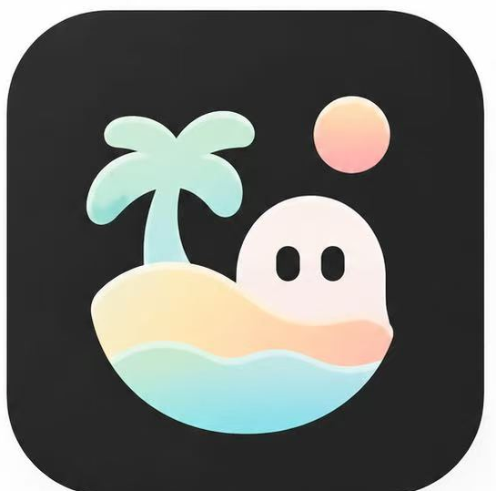

<!doctype html><html lang="zh-CN"><head><meta charset="UTF-8"><meta name="viewport" content="width=device-width,initial-scale=1,viewport-fit=cover"><meta name="theme-color" content="#50d4d5"><link rel="manifest" href="manifest.json"><title>趣屿 QUYU 8.1 · 发现兴趣，遇见共鸣</title><style>
:root{--a:#51d4d5;--ink:#20272b;--muted:#8d969c;--bg:#f8fafb}*{box-sizing:border-box}body{margin:0;background:#e8f2f2;font-family:-apple-system,BlinkMacSystemFont,"PingFang SC","Microsoft Yahei",sans-serif;color:var(--ink)}#app{max-width:520px;min-height:100dvh;margin:auto;background:#fff;padding-bottom:84px;box-shadow:0 0 28px #bed6d644}header{position:sticky;top:0;z-index:3;background:#ffffffed;backdrop-filter:blur(12px);padding:18px 18px 12px;display:flex;justify-content:space-between;align-items:center}.brand{font-size:23px;font-weight:800}.brand small{font-size:11px;letter-spacing:4px;display:block;font-weight:400}.logo{display:inline-grid;place-items:center;background:linear-gradient(140deg,#baf8e6,#7be2df,#ffd7c9);width:40px;height:40px;border-radius:13px;margin-right:8px;font-size:25px}.row{display:flex;align-items:center}.search{margin:8px 17px 14px;padding:13px;border-radius:24px;background:#f4f6f7;color:#9ba3a7}.tabs,.chips{display:flex;overflow-x:auto;gap:9px;padding:8px 17px 15px;scrollbar-width:none}.chip{white-space:nowrap;border:0;background:#f4f6f7;padding:10px 17px;border-radius:24px;font-size:14px;color:#555}.chip.on{background:var(--a);color:white}.hero{margin:0 17px 18px;height:215px;border-radius:17px;background:linear-gradient(0deg,#16272d9e,transparent 65%),url('https://images.unsplash.com/photo-1500534623283-312aade485b7?w=1000&q=80') center/cover;display:flex;flex-direction:column;justify-content:end;padding:18px;color:white}.hero h2{margin:0 0 6px;font-size:24px}.section{font-weight:750;font-size:20px;margin:16px 17px}.grid{display:grid;grid-template-columns:1fr 1fr;gap:12px;margin:0 17px}.card{overflow:hidden;border-radius:13px;background:#fff;border:1px solid #f0f1f2;box-shadow:0 3px 12px #00000008}.photo{height:142px;background-size:cover;background-position:center}.body{padding:11px}.body strong{font-size:14px;line-height:1.5;display:block}.sub{color:var(--muted);font-size:12px;margin-top:8px}.actions{display:flex;justify-content:space-between;margin-top:12px;color:#657277}.actions button{border:0;background:none;color:#6a757b}.bottom{position:fixed;bottom:0;left:50%;transform:translateX(-50%);width:min(100%,520px);height:75px;background:#fff;border-top:1px solid #edf0f0;display:flex;justify-content:space-around;align-items:center;z-index:5;padding-bottom:env(safe-area-inset-bottom)}.nav{background:none;border:0;color:#8a9399;font-size:12px;min-width:52px}.nav b{font-size:25px;display:block;margin-bottom:3px;font-weight:400}.nav.active{color:#18242a}.plus{width:53px;height:53px;border-radius:50%;border:0;background:var(--a);color:white;font-size:36px}.banner{background:linear-gradient(110deg,#e4f9fa,#fff1e9);border-radius:18px;padding:24px;margin:15px 17px}.banner h2{margin:0 0 10px}.btn{border:0;border-radius:24px;padding:11px 20px;background:var(--a);color:#fff;font-size:14px}.outline{background:#e1f9f9;color:#278a8d}.item{margin:12px 17px;border-bottom:1px solid #f0f1f1;padding:12px 0;display:flex;gap:13px;align-items:center}.item img{width:78px;height:78px;border-radius:12px;object-fit:cover}.item .grow{flex:1}.item strong{display:block;margin-bottom:7px}.item p{font-size:12px;color:#879096;margin:5px 0}.avatar{width:55px;height:55px;border-radius:50%;object-fit:cover}.form{padding:20px}.form input,.form textarea,.form select{width:100%;border:1px solid #e8eeee;border-radius:13px;padding:14px;font:inherit;margin:9px 0;background:#fafcfc}.form textarea{height:160px;resize:vertical}.form .btn{width:100%;padding:15px;margin-top:15px}.empty{padding:28px;text-align:center;color:#8a9498}.stat{display:flex;justify-content:space-around;text-align:center;margin:24px 0}.stat strong{display:block;font-size:24px}.panel{padding:12px 18px}.notice{background:#e8fafa;padding:12px;border-radius:12px;font-size:13px;color:#467b7e;margin:10px 17px}.cover{height:190px;background:linear-gradient(#ffb9ac55,#77dfe866),url('https://images.unsplash.com/photo-1470252649378-9c29740c9fa8?w=900&q=80') center/cover}.interest{display:grid;grid-template-columns:repeat(3,1fr);gap:12px;padding:15px}.interest button{padding:24px 5px;border-radius:15px;border:1px solid #e5eded;background:#f9fcfc;font-size:16px}.interest button.selected{border:2px solid var(--a);background:#e9fafa}.hidden{display:none}.photo{cursor:pointer}.card strong{cursor:pointer}.card:active{transform:scale(.99)} 
.logo{background:#fff url('quyu-logo.png') center/cover no-repeat;font-size:0!important}.onboard{min-height:100dvh;padding:0 22px 30px;background:linear-gradient(155deg,#fff7f1,#f5fffd 55%,#d6f8f8);display:flex;flex-direction:column}.obtop{display:flex;justify-content:space-between;align-items:center;padding:22px 0;color:#758387}.obtop button{border:0;background:transparent;color:#798589;font-size:15px}.obhero{height:38vh;min-height:260px;max-height:410px;border-radius:24px;background:url('welcome-art.jpg') center 37%/cover;box-shadow:0 14px 40px #7fbdbb26}.obtitle{font-size:29px;line-height:1.3;text-align:center;margin:22px 0 9px}.obdesc{text-align:center;color:#697c80;line-height:1.8;font-size:15px;margin:0 0 18px}.obfeatures{display:grid;grid-template-columns:repeat(3,1fr);gap:9px}.obfeature{border-radius:16px;background:#ffffffc9;text-align:center;padding:14px 5px;font-size:13px}.obfeature b{font-size:23px;display:block;margin-bottom:7px}.obnext{margin-top:auto;width:100%;background:#242a30;border:0;border-radius:28px;padding:17px;color:white;font-size:17px;font-weight:650}.obstep{font-size:13px;letter-spacing:3px;color:#51bfc2;text-align:center;margin:25px 0 10px}.obchoices{display:grid;grid-template-columns:repeat(3,1fr);gap:10px;margin:22px 0}.obchoice{border:2px solid transparent;border-radius:17px;background:#fff;padding:15px 4px;font-size:14px;color:#273238;box-shadow:0 3px 12px #00000006}.obchoice span{display:block;font-size:30px;margin-bottom:7px}.obchoice.sel{border-color:#4bd1d1;background:#e5fafa}.obnote{text-align:center;color:#8b9a9e;font-size:12px;margin:12px}.oblogo{display:block;width:95px;height:95px;border-radius:24px;object-fit:cover;margin:20px auto 6px}.obsmall{display:block;text-align:center;letter-spacing:5px;font-size:13px;color:#7c8b8d}.obtoast{background:#fff3df;border-radius:12px;padding:11px;text-align:center;color:#a16d27;font-size:13px}

/* QUYU 8.0 design refinements */
:root{--sea:#4bd3d2;--ink:#242b31;--mist:#f5fbfa}body{background:linear-gradient(125deg,#f1faf9,#fff6f2 85%);color:var(--ink)}
#app{box-shadow:0 18px 65px #284d5018;background:#fff;min-height:100dvh}
.onboard{background:radial-gradient(ellipse at 15% 5%,#ffeadf,transparent 38%),radial-gradient(ellipse at 88% 70%,#d9f8f5,transparent 42%),#fffdfb;padding:0 20px 30px}
.onboard .obhero{background-size:contain!important;background-position:center center!important;height:clamp(265px,46vh,520px)!important;background-color:transparent!important;box-shadow:none!important;border-radius:0!important}
.obtitle{font-weight:800;letter-spacing:-.8px}.obdesc{font-size:14px}.obfeature{box-shadow:0 8px 20px #5b999214;border:1px solid #ffffff}
.obchoice{min-height:105px;position:relative;overflow:hidden;transition:transform .18s,border-color .18s;box-shadow:0 5px 16px #4c77731a}
.obchoice:not(.extra){background-position:center;background-size:cover;color:white;text-shadow:0 1px 5px #000b;font-weight:750;display:flex;flex-direction:column;justify-content:flex-end;align-items:center}
.obchoice:not(.extra) span{font-size:25px}.obchoice.sel:after{content:'✓';position:absolute;right:7px;top:6px;width:24px;height:24px;border-radius:50%;background:#44d3d0;color:white;display:grid;place-items:center;text-shadow:none}
.obchoice.sel{outline:2px solid #4bd4d0;outline-offset:1px}
.obnext{background:#252c32;box-shadow:0 8px 22px #223b3b30;cursor:pointer}
.card{overflow:hidden;border-radius:17px;box-shadow:0 4px 18px #3b676512;transition:transform .18s}.card:active{transform:scale(.985)}
.card .photo{background-position:center;background-size:cover}.card .body{padding:12px}.card strong{line-height:1.5}.sub{line-height:1.6}
.personavatar{object-fit:cover;background:#edf7f6}.item{border-bottom:1px solid #f0f2f2}.hero{border-radius:18px;margin:14px 12px}.section{padding-top:16px}
.message-row{min-height:84px}.message-row .personavatar{border:2px solid #fff;box-shadow:0 2px 12px #506c6c20}
header{background:#fffffff0;backdrop-filter:blur(10px)}button{cursor:pointer}button:focus-visible{outline:3px solid #45c8c6}
@media(min-width:800px){#app{border-radius:22px 22px 0 0;overflow:hidden;margin-top:18px;margin-bottom:18px}.onboard{min-height:780px}.onboard .obhero{height:340px!important}}
@media(max-width:380px){.obchoices{gap:6px}.obchoice{min-height:92px;font-size:12px}.onboard{padding-left:14px;padding-right:14px}}

/* v8.1: 欢迎页只展示品牌Logo，不再将设计稿截图嵌入页面 */
.onboard .ob-brandmark{flex:0 0 auto;display:flex;align-items:center;justify-content:center;margin:clamp(25px,6vh,58px) auto 14px;width:clamp(145px,44%,210px);aspect-ratio:1/1;border-radius:34px;box-shadow:0 18px 45px rgba(41,87,84,.14);overflow:hidden;background:#262626}
.onboard .ob-brandmark img{display:block;width:100%;height:100%;object-fit:contain}
.onboard .obstep{margin:14px 0 4px;font-size:11px;letter-spacing:2.4px}
.onboard .obtitle{margin:12px 0 5px;font-size:33px}
.onboard .ob-en{font-size:13px;letter-spacing:5px;font-weight:500;color:#65babb;vertical-align:middle}
.onboard .ob-tagline{text-align:center;font-size:19px;font-weight:700;letter-spacing:1px;margin:4px 0 13px}
.onboard .obdesc{margin:0 0 24px}
.onboard .obfeatures{margin-top:12px}
@media(max-height:720px){.onboard .ob-brandmark{width:130px;margin-top:15px}.onboard .obdesc{margin-bottom:10px}.onboard .obfeature{padding:8px 3px}}
</style><style>
.obchoice{position:relative;min-height:103px;overflow:hidden;background-size:cover!important;background-position:center!important;color:white!important;text-shadow:0 1px 5px #0009;font-weight:700;display:flex;flex-direction:column;align-items:flex-start;justify-content:flex-end;padding:12px!important;box-shadow:inset 0 -65px 65px -25px #0009!important}
.obchoice span{font-size:22px!important;margin:0 0 4px!important}.obchoice.sel{outline:3px solid #48d5d5;outline-offset:-3px}.obchoice.sel:after{content:'✓';position:absolute;right:9px;top:8px;border-radius:50%;background:#45d4d2;width:24px;height:24px;text-align:center;line-height:24px;text-shadow:none}
.obchoice.extra{min-height:47px;background:#f0f9fa!important;box-shadow:none!important;color:#3e5559!important;text-shadow:none;font-size:13px;justify-content:center;align-items:center}.obchoice.extra.sel{background:#d3f5f4!important}
.obchoices{margin:15px 0;gap:9px}.obtop{padding:15px 0}.onboard{padding-bottom:22px}.obhero{height:35vh;min-height:230px}.onboard .obtitle{margin-top:15px}.obnext{position:sticky;bottom:10px;z-index:2;box-shadow:0 4px 18px #2a505022}.obintrologo{height:65px;width:65px;object-fit:cover;border-radius:17px;display:block;margin:0 auto}.obprogress{height:5px;background:linear-gradient(90deg,#52d7d7 33%,#f2f4f5 33%);border-radius:9px;margin:10px 0 18px}
.message-row{cursor:pointer}.message-row:active{background:#f4fcfc}.chatbubble{padding:12px 15px;border-radius:18px;background:#eff6f6;margin:12px 0;max-width:85%;line-height:1.6}.chatbubble.mine{background:#b7f1ef;margin-left:auto}.chatcomposer{display:flex;gap:8px;margin-top:25px}.chatcomposer input{flex:1;min-width:0;border:1px solid #dde8e8;border-radius:20px;padding:12px}.chatcomposer button{border:0;background:#50d2d2;color:#fff;border-radius:20px;padding:0 20px}.personavatar{width:58px;height:58px;border-radius:50%;object-fit:cover;background:#e6f5f5;flex-shrink:0}.tagline{font-size:12px;color:#7a9192}.detail-row{display:flex;align-items:center;gap:12px;margin-bottom:18px}

.onboard .obhero{background-size:contain!important;background-position:center!important;background-repeat:no-repeat!important;background-color:#fffaf7!important;height:clamp(250px,43vh,470px)!important;min-height:0!important;max-height:none!important}
.onboard{min-height:100dvh;height:auto!important}
.obnext{margin-top:24px!important}
</style></head><body><div id="app"></div><script src="https://cdn.jsdelivr.net/npm/@supabase/supabase-js@2/dist/umd/supabase.min.js"></script><script src="cloud-config.js"></script><script>
let cloud=null,cloudReady=false,cloudUser=null,cloudPostIds=new Set(),cloudCounts={},cloudLikes=new Set(),cloudComments={},cloudRefreshing=false,cloudTimer=null;
const photos=['photo-1500534623283-312aade485b7','photo-1514888286974-6c03e2ca1dba','photo-1504674900247-0877df9cc836','photo-1470770841072-f978cf4d019e','photo-1452587925148-ce544e77e70d','photo-1519681393784-d120267933ba','photo-1464822759023-fed622ff2c3b','photo-1495474472287-4d71bcdd2085','photo-1517841905240-472988babdf9','photo-1543857778-c4a1a3e0b2eb','photo-1517649763962-0c623066013b','photo-1511988617509-a57c8a288659','photo-1518837695005-2083093ee35b','photo-1529156069898-49953e39b3ac','photo-1483985988355-763728e1935b','photo-1524504388940-b1c1722653e1','photo-1500534314209-a25ddb2bd429','photo-1483985988355-763728e1935b','photo-1546069901-ba9599a7e63c','photo-1534447677768-be436bb09401','photo-1481627834876-b7833e8f5570','photo-1515372039744-b8f02a3ae446','photo-1552674605-db6ffd4facb5','photo-1490750967868-88aa4486c946','photo-1542291026-7eec264c27ff','photo-1517841905240-472988babdf9','photo-1500534314209-a25ddb2bd429','photo-1531058020387-3be344556be6'];const pic=(n)=>n>=1000?`https://picsum.photos/seed/quyu-interest-${n}/700/850`:`https://images.unsplash.com/${photos[n%photos.length]}?w=700&q=75`;const store=(k,d)=>JSON.parse(localStorage.getItem(k)||JSON.stringify(d));let posts=store('quyu_user_posts_v7',[{"id": 1, "title": "在海边等一场日落｜周末散心指南", "tag": "旅行", "img": 0, "text": "周末没有安排的时候，我最喜欢去海边散步。下午四点左右出发，带一杯冰饮，沿着海岸慢慢走。\n\n📍路线：海边步道 → 观景台 → 日落咖啡馆。\n📷拍照建议：日落前30分钟光线最柔和，人物站在逆光处很好看。\n🎒随身物品：防晒、薄外套、充电宝。\n\n不需要赶景点，给自己留一点发呆的时间。", "likes": 233}, {"id": 2, "title": "猫咪今天又占领了我的沙发", "tag": "宠物", "img": 1, "text": "今天记录一下家里的小猫。早上它在窗边晒太阳，中午钻进纸箱，晚上又霸占了我的沙发。\n\n养猫心得：准备抓板、饮水碗和安全的躲藏空间；不要强迫猫咪互动。\n\n你家的猫咪最喜欢躲在哪里？", "likes": 187}, {"id": 3, "title": "周末早午餐｜简单又好吃的搭配", "tag": "美食", "img": 2, "text": "今天给自己准备了轻松的早午餐：烤面包、煎蛋、番茄和一杯咖啡。\n\n🍳制作顺序：先准备蔬菜，再煎蛋，最后烤面包。\n⏱预计用时：20分钟。\n\n不需要复杂摆盘，坐下来好好吃饭就很幸福。", "likes": 152}, {"id": 4, "title": "城市漫步的尽头是日落", "tag": "旅行", "img": 3, "text": "沿着陌生街道走一走，总能发现计划外的小惊喜。\n\n这次的 City Walk 主要经过老街、独立书店和河边步道。建议穿舒适的鞋，预留两三个小时，途中找一家喜欢的小店休息。", "likes": 325}, {"id": 5, "title": "我收藏的五家安静咖啡馆类型", "tag": "生活", "img": 7, "text": "喜欢一个人带书去咖啡馆。选店时我会看三个方面：是否有自然光、座位间距够不够、背景音乐会不会太吵。\n\n比起网红打卡，我更喜欢能坐一下午的地方。", "likes": 68}, {"id": 6, "title": "摄影新手也能拍出的电影感街景", "tag": "摄影", "img": 4, "text": "最近在练习街头摄影。\n\n📷三个小技巧：\n1. 早晚拍摄更容易得到柔和的光线。\n2. 先找有趣的背景，再等人物走进画面。\n3. 画面尽量保留一个明确的视觉中心。\n\n器材不是最重要的，多观察才是。", "likes": 214}, {"id": 7, "title": "一个人逛美术馆的下午", "tag": "艺术", "img": 9, "text": "不赶时间地看展，真的很治愈。\n\n这次最喜欢的是展厅里的色彩与光影。建议提前查看展览介绍，遇到喜欢的作品可以停留久一点，不必每一件都看懂。", "likes": 95}, {"id": 8, "title": "周末网球入门记录", "tag": "运动", "img": 10, "text": "第一次认真练习网球，发现挥拍节奏比想象中难。\n\n初学者可以先从热身、正反手基本动作和短距离对打开始。运动前后记得补水，循序渐进。", "likes": 73}, {"id": 9, "title": "蓝色海岸线｜适合放空的一天", "tag": "旅行", "img": 12, "text": "如果你也喜欢大海，可以试试不安排满满的行程。\n\n上午散步、下午看海、傍晚等日落。带上相机，记录当天的风、云和海浪。", "likes": 121}, {"id": 10, "title": "第一次参加兴趣小组是什么体验", "tag": "生活", "img": 14, "text": "原本有点担心和陌生人交流，但共同的话题很快就让大家熟悉起来。\n\n建议第一次参加活动时选择公开场所、了解活动主办信息，并告知朋友自己的行程。", "likes": 86}, {"id": 11, "title": "认真吃饭｜一人食也要有仪式感", "tag": "美食", "img": 18, "text": "今天做了一份色彩丰富的午餐。蔬菜、蛋白质和主食简单搭配，再加一杯喜欢的饮品。\n\n分享给同样喜欢记录生活的人。", "likes": 192}, {"id": 12, "title": "我的阅读角落和最近读的书", "tag": "阅读", "img": 20, "text": "把手机放远一点，泡一杯茶，留半小时安静读书。\n\n最近的阅读习惯是每天读十页，再写下两三句感受。", "likes": 61}, {"id": 13, "title": "徒步初体验｜给新手的准备清单", "tag": "户外", "img": 22, "text": "第一次徒步不用追求高难度路线。\n\n建议提前查看天气、路线距离和海拔变化，带足饮水，穿防滑鞋，并与同伴结伴出行。", "likes": 133}, {"id": 14, "title": "衣柜整理｜找到适合自己的穿搭", "tag": "时尚", "img": 21, "text": "最近试着用少量基础款搭配不同风格。\n\n先整理现有衣物，再确定自己最常穿的颜色和版型，比冲动购买更有用。", "likes": 89}, {"id": 15, "title": "花店里的一束温柔", "tag": "生活", "img": 23, "text": "路过花店的时候买了一小束花。\n\n把花插在窗边，房间一下子变得明亮起来。分享这份小小的好心情。", "likes": 79}, {"id": 16, "title": "夜晚星空摄影｜第一次尝试长曝光", "tag": "摄影", "img": 19, "text": "第一次尝试拍星空，记录一些心得。\n\n准备稳定的三脚架，尽量远离强光，提前关注天气和云量。拍摄地点注意安全，不要单独前往偏僻区域。", "likes": 145}]);if(!localStorage.getItem('quyu_content_v4')){posts=[{"id": 1, "title": "在海边等一场日落｜周末散心指南", "tag": "旅行", "img": 0, "text": "周末没有安排的时候，我最喜欢去海边散步。下午四点左右出发，带一杯冰饮，沿着海岸慢慢走。\n\n📍路线：海边步道 → 观景台 → 日落咖啡馆。\n📷拍照建议：日落前30分钟光线最柔和，人物站在逆光处很好看。\n🎒随身物品：防晒、薄外套、充电宝。\n\n不需要赶景点，给自己留一点发呆的时间。", "likes": 233}, {"id": 2, "title": "猫咪今天又占领了我的沙发", "tag": "宠物", "img": 1, "text": "今天记录一下家里的小猫。早上它在窗边晒太阳，中午钻进纸箱，晚上又霸占了我的沙发。\n\n养猫心得：准备抓板、饮水碗和安全的躲藏空间；不要强迫猫咪互动。\n\n你家的猫咪最喜欢躲在哪里？", "likes": 187}, {"id": 3, "title": "周末早午餐｜简单又好吃的搭配", "tag": "美食", "img": 2, "text": "今天给自己准备了轻松的早午餐：烤面包、煎蛋、番茄和一杯咖啡。\n\n🍳制作顺序：先准备蔬菜，再煎蛋，最后烤面包。\n⏱预计用时：20分钟。\n\n不需要复杂摆盘，坐下来好好吃饭就很幸福。", "likes": 152}, {"id": 4, "title": "城市漫步的尽头是日落", "tag": "旅行", "img": 3, "text": "沿着陌生街道走一走，总能发现计划外的小惊喜。\n\n这次的 City Walk 主要经过老街、独立书店和河边步道。建议穿舒适的鞋，预留两三个小时，途中找一家喜欢的小店休息。", "likes": 325}, {"id": 5, "title": "我收藏的五家安静咖啡馆类型", "tag": "生活", "img": 7, "text": "喜欢一个人带书去咖啡馆。选店时我会看三个方面：是否有自然光、座位间距够不够、背景音乐会不会太吵。\n\n比起网红打卡，我更喜欢能坐一下午的地方。", "likes": 68}, {"id": 6, "title": "摄影新手也能拍出的电影感街景", "tag": "摄影", "img": 4, "text": "最近在练习街头摄影。\n\n📷三个小技巧：\n1. 早晚拍摄更容易得到柔和的光线。\n2. 先找有趣的背景，再等人物走进画面。\n3. 画面尽量保留一个明确的视觉中心。\n\n器材不是最重要的，多观察才是。", "likes": 214}, {"id": 7, "title": "一个人逛美术馆的下午", "tag": "艺术", "img": 9, "text": "不赶时间地看展，真的很治愈。\n\n这次最喜欢的是展厅里的色彩与光影。建议提前查看展览介绍，遇到喜欢的作品可以停留久一点，不必每一件都看懂。", "likes": 95}, {"id": 8, "title": "周末网球入门记录", "tag": "运动", "img": 10, "text": "第一次认真练习网球，发现挥拍节奏比想象中难。\n\n初学者可以先从热身、正反手基本动作和短距离对打开始。运动前后记得补水，循序渐进。", "likes": 73}, {"id": 9, "title": "蓝色海岸线｜适合放空的一天", "tag": "旅行", "img": 12, "text": "如果你也喜欢大海，可以试试不安排满满的行程。\n\n上午散步、下午看海、傍晚等日落。带上相机，记录当天的风、云和海浪。", "likes": 121}, {"id": 10, "title": "第一次参加兴趣小组是什么体验", "tag": "生活", "img": 14, "text": "原本有点担心和陌生人交流，但共同的话题很快就让大家熟悉起来。\n\n建议第一次参加活动时选择公开场所、了解活动主办信息，并告知朋友自己的行程。", "likes": 86}, {"id": 11, "title": "认真吃饭｜一人食也要有仪式感", "tag": "美食", "img": 18, "text": "今天做了一份色彩丰富的午餐。蔬菜、蛋白质和主食简单搭配，再加一杯喜欢的饮品。\n\n分享给同样喜欢记录生活的人。", "likes": 192}, {"id": 12, "title": "我的阅读角落和最近读的书", "tag": "阅读", "img": 20, "text": "把手机放远一点，泡一杯茶，留半小时安静读书。\n\n最近的阅读习惯是每天读十页，再写下两三句感受。", "likes": 61}, {"id": 13, "title": "徒步初体验｜给新手的准备清单", "tag": "户外", "img": 22, "text": "第一次徒步不用追求高难度路线。\n\n建议提前查看天气、路线距离和海拔变化，带足饮水，穿防滑鞋，并与同伴结伴出行。", "likes": 133}, {"id": 14, "title": "衣柜整理｜找到适合自己的穿搭", "tag": "时尚", "img": 21, "text": "最近试着用少量基础款搭配不同风格。\n\n先整理现有衣物，再确定自己最常穿的颜色和版型，比冲动购买更有用。", "likes": 89}, {"id": 15, "title": "花店里的一束温柔", "tag": "生活", "img": 23, "text": "路过花店的时候买了一小束花。\n\n把花插在窗边，房间一下子变得明亮起来。分享这份小小的好心情。", "likes": 79}, {"id": 16, "title": "夜晚星空摄影｜第一次尝试长曝光", "tag": "摄影", "img": 19, "text": "第一次尝试拍星空，记录一些心得。\n\n准备稳定的三脚架，尽量远离强光，提前关注天气和云量。拍摄地点注意安全，不要单独前往偏僻区域。", "likes": 145}];localStorage.setItem('quyu_user_posts_v7',JSON.stringify(posts.filter(p=>p.id<10000&&!p.cloudPost)));localStorage.setItem('quyu_content_v4','yes')}let onboarding=localStorage.getItem('quyu_v81_intro_seen')==='yes'? -1:0;let currentPost=null;let comments=store('quyu_comments',{});let joined=store('quyu_joined',[]), liked=store('quyu_liked',[]), selected=store('quyu_interests',[]), tab='首页',filter='推荐';const activities=[['海边日落露营计划','周六 17:00 · 海边','露营',0],['胶片摄影外拍活动','周日 14:00 · 艺术街区','摄影',4],['城市海岸 City Walk','周六 09:00 · 城市海岸','旅行',3],['周末手作陶艺体验','周日 15:00 · 创意工坊','艺术',2]];const faces=['photo-1534528741775-53994a69daeb','photo-1500648767791-00dcc994a43e','photo-1531123897727-8f129e1688ce','photo-1506794778202-cad84cf45f1d','photo-1517841905240-472988babdf9','photo-1527980965255-d3b416303d12','photo-1544005313-94ddf0286df2','photo-1507003211169-0a1dd7228f2d','photo-1524504388940-b1c1722653e1','photo-1535713875002-d1d0cf377fde'];const face=i=>`https://images.unsplash.com/${faces[i%faces.length]}?w=160&h=160&fit=crop&crop=faces&q=85`;const interestPics={'旅行':0,'摄影':4,'美食':2,'电影':3,'艺术':9,'音乐':11,'阅读':20,'运动':10,'宠物':1,'生活':23,'时尚':14,'科技':15};
function save(){localStorage.setItem('quyu_user_posts_v7',JSON.stringify(posts.filter(p=>p.id<10000&&!p.cloudPost)));localStorage.setItem('quyu_joined',JSON.stringify(joined));localStorage.setItem('quyu_liked',JSON.stringify(liked));localStorage.setItem('quyu_comments',JSON.stringify(comments));localStorage.setItem('quyu_interests',JSON.stringify(selected))}function nav(t){tab=t;render();window.scrollTo(0,0)}function chips(items,cur,fn){return `<div class="chips">${items.map(x=>`<button class="chip ${cur===x?'on':''}" onclick="${fn}('${x}')">${x}</button>`).join('')}</div>`}function setFilter(x){filter=x;render()}function like(id){
  if(cloudReady){cloudToggleLike(id);return;}
  // Read latest browser state first so other tabs are not overwritten.
  try{liked=JSON.parse(localStorage.getItem('quyu_liked')||'[]')}catch(e){liked=[]}
  liked=liked.includes(id)?liked.filter(x=>x!==id):[...liked,id];
  localStorage.setItem('quyu_liked',JSON.stringify(liked));
  render();
}function join(i){joined=joined.includes(i)?joined.filter(x=>x!==i):[...joined,i];save();render()}function cards(arr){return `<div class="grid">${arr.map(p=>`<div class="card"><div onclick="openPost(${p.id})" class="photo" style="background-image:url('${pic(p.img)}')"></div><div class="body"><strong onclick="openPost(${p.id})">${esc(p.title)}</strong><div class="sub"># ${esc(p.tag)} · 趣屿示例内容</div><div class="actions"><span style="color:${liked.includes(p.id)?'#ed6882':'#667'}">${cloudReady&&cloudPostIds.has(p.id)?(cloudLikes.has(p.id)?'♥':'♡'):liked.includes(p.id)?'♥':'♡'} ${cloudReady&&cloudPostIds.has(p.id)?(cloudCounts[p.id]||0):Number(p.likes||0)+Number(liked.includes(p.id))}</span><button aria-pressed="${cloudReady&&cloudPostIds.has(p.id)?cloudLikes.has(p.id):liked.includes(p.id)}" onclick="like(${p.id})">${(cloudReady&&cloudPostIds.has(p.id)?cloudLikes.has(p.id):liked.includes(p.id))?'♥ 已喜欢':'♡ 喜欢'}</button></div></div></div>`).join('')}</div>`}function esc(s){return String(s).replace(/[&<>"']/g,c=>({'&':'&amp;','<':'&lt;','>':'&gt;','"':'&quot;',"'":'&#39;'}[c]))}function openPost(id){currentPost=id;tab='详情';render();window.scrollTo(0,0)}
function addComment(){
 if(cloudReady){cloudAddComment();return;}let v=document.getElementById('commentInput').value.trim();if(!v)return;comments[currentPost]=[...(comments[currentPost]||[]),v];save();render()}
function detail(){let p=posts.find(x=>x.id===currentPost);if(!p)return home();return `<header><button class="chip" onclick="nav('首页')">← 返回</button><strong>趣屿笔记</strong><button class="chip" onclick="sharePost()">分享 ↗</button></header><div class="panel"><div class="detail-row"><div><strong>${["椰子冰","山川海海","芝士喵","日落收藏家","小鱼同学","阿辰"][p.img%6]}</strong><div class="tagline">${p.cloudPost?'社区用户投稿':'趣屿原创示例笔记 · 非真实用户'}</div></div></div><h2>${esc(p.title)}</h2><p style="line-height:1.9;color:#566">${esc(p.text).replace(/\n/g,'<br>')}</p><div class="sub">#${esc(p.tag)} · ${p.cloudPost?'社区用户发布 · 请自行判断内容真实性':'趣屿编辑精选 · 内容为原创示例，不代表真实用户投稿'}</div><p><button class="btn" onclick="like(${p.id})">${(cloudReady&&cloudPostIds.has(p.id)?cloudLikes.has(p.id):liked.includes(p.id))?'♥ 已喜欢':'♡ 点赞'} · ${cloudReady&&cloudPostIds.has(p.id)?(cloudCounts[p.id]||0):p.likes+Number(liked.includes(p.id))}</button></p><h3>评论 (${cloudReady&&cloudPostIds.has(p.id)?(cloudComments[p.id]||[]).length:(comments[p.id]||[]).length})</h3>${(cloudReady&&cloudPostIds.has(p.id)?(cloudComments[p.id]||[]):(comments[p.id]||[])).map(c=>`<p style="background:#f5fafa;padding:12px;border-radius:12px">${esc(c)}</p>`).join('')||'<p class="sub">还没有评论，来留下第一条吧</p>'}<div class="form" style="padding:0"><input id="commentInput" placeholder="写下你的评论"><button class="btn" onclick="addComment()">发送评论</button></div></div>`}
function sharePost(){if(navigator.share)navigator.share({title:'趣屿笔记',url:location.href});else alert('复制当前网址分享给朋友')}
function searchNotes(){let q=prompt('搜索趣屿笔记');if(q===null)return;let v=q.trim();filter='推荐';if(v){let results=posts.filter(p=>(p.title+p.text+p.tag).includes(v));document.getElementById('app').innerHTML='<header><button class="chip" onclick="nav(\'首页\')">← 返回</button><strong>搜索：'+esc(v)+'</strong></header>'+(results.length?cards(results):'<div class="empty">暂时没有找到相关笔记</div>');}else render()}function home(){let shown=filter==='推荐'?posts:posts.filter(p=>p.tag===filter);return `<header><div class="row"><span class="logo"></span><div class="brand">趣屿<small>Q U Y U</small></div></div><span style="cursor:pointer;font-size:12px" onclick="restartIntro()">新手引导 ↺</span></header><div class="search" onclick="searchNotes()">⌕　搜索笔记、旅行、美食、摄影...</div>${chips(['推荐','旅行','摄影','美食','艺术','生活','宠物','运动','阅读','户外','音乐','电影','手作','时尚'],filter,'setFilter')}<div class="hero" onclick="openPost(1)"><h2>去看海的100种方式</h2><div>把日常变成浪漫的冒险</div></div><div class="section">为你推荐 <small style='font-size:11px;color:#98a3a8;font-weight:400'>共 <b>${shown.length}</b> 篇 · 点击查看完整内容</small></div>${shown.length?cards(shown):'<div class="empty">这个分类暂时没有内容，快来发布第一篇吧！</div>'}`}
function discover(){return `<header><strong style="font-size:22px">发现兴趣</strong><span>⌕</span></header><div class="banner"><h2>遇见和你一样有趣的人</h2><p>一起探索的旅程，就在你身边</p></div>${chips(['推荐','旅行','摄影','美食','运动','艺术'],filter,'setFilter')}<div class="section">兴趣搭子</div>${['椰子冰','山川海海','日落收藏家','芝士喵','阿辰','小鱼同学'].map((x,i)=>`<div class="item"><div class="grow"><strong>${x}</strong><p>${['旅行 · 摄影 · 露营','徒步 · 露营 · 自由行','摄影 · 旅行 · 咖啡'][i%3]}</p></div><button class="btn outline" onclick="this.innerText=this.innerText==='关注'?'已关注':'关注'">关注</button></div>`).join('')}<div class="section">附近的兴趣</div><div class="notice">以上兴趣搭子为演示人物，非真实可联系用户。📍 地图与真实附近用户需要上线后接入地图服务，并获得用户定位授权。</div>`}
function showEvent(i){let a=activities[i];document.getElementById('app').innerHTML=`<header><button class="chip" onclick="nav('活动')">← 返回活动</button><strong>活动详情</strong></header><div class="panel"><h2>${a[0]}</h2><p>🗓 ${a[1]}</p><p>🏷 ${a[2]}</p><h3>活动介绍</h3><p style="line-height:1.9">和有相同兴趣的人一起体验周末。可以在活动中交流心得、拍照记录，认识新朋友。</p><p class="notice">这是演示活动，不提供真实报名、支付或线下集合服务。</p><button class="btn" onclick="join(${i});showEvent(${i})">${joined.includes(i)?'取消模拟报名':'模拟报名'}</button></div>`;}function events(){return `<header><strong style="font-size:22px">活动</strong><span>⌕</span></header>${chips(['推荐','线下活动','线上活动','同城'],filter,'setFilter')}<div class="hero" style="background-image:linear-gradient(0deg,#16272d9e,transparent 65%),url('${pic(0)}')"><h2>海边日落露营计划</h2><div>与有趣的人一起创造美好回忆</div></div><div class="section">活动体验 <small style='font-size:12px;color:#899'>演示活动</small></div>${activities.map((a,i)=>`<div class="item"><div class="grow"><strong onclick="showEvent(${i})">${a[0]}　›</strong><p>🗓 ${a[1]}</p><p># ${a[2]}</p></div><button class="btn ${joined.includes(i)?'outline':''}" onclick="join(${i})">${joined.includes(i)?'已报名':'立即报名'}</button></div>`).join('')}<div class="notice">活动名称、时间、人数为演示示例，并非真实可报名活动。演示活动为样例数据，报名仅保存在当前设备，尚未向主办方提交。</div>`}
function publish(){return `<header><span onclick="nav('首页')">‹ 返回</span><strong>发布</strong><span></span></header>${chips(['图文','视频','活动'],'图文','noop')}<form class="form" onsubmit="submitPost(event)"><input id="title" maxlength="45" required placeholder="给你的分享起个标题"><textarea id="content" required maxlength="500" placeholder="分享这一刻的兴趣生活..."></textarea><select id="category"><option>旅行</option><option>摄影</option><option>美食</option><option>艺术</option><option>生活</option><option>宠物</option></select><label>上传照片（保存在本机浏览器）<input id="photo" type="file" accept="image/*"></label><button class="btn">发布到趣屿</button></form><div class="notice">当前是可交互演示版，内容只在本机保存，其他扫码用户暂时看不到。正式多人共享需要云端数据库。</div>`}function noop(){}function submitPost(e){
 if(cloudReady){cloudPublish(e);return;}e.preventDefault();let file=document.getElementById('photo').files[0];let commit=(data)=>{let p={id:Date.now(),title:document.getElementById('title').value,text:document.getElementById('content').value,tag:document.getElementById('category').value,img:Math.floor(Math.random()*8),likes:0};if(data)p.custom=data;posts.unshift(p);save();filter='推荐';alert('发布成功（演示版：仅当前设备可见）');nav('首页')};if(file){let r=new FileReader();r.onload=()=>commit(r.result);r.readAsDataURL(file)}else commit()}
const chats=[{name:'日落收藏家小组',line:'椰子冰：我们周六一起去看日落吧～',time:'5分钟前',photo:8},{name:'摄影搭子',line:'周末一起去拍照吗？',time:'32分钟前',photo:0},{name:'活动提醒',line:'你收藏的露营活动还有3天开始（示例）',time:'1小时前',icon:'📣'},{name:'系统通知',line:'欢迎来到趣屿，发现你热爱的生活！',time:'3小时前',icon:'⭐'},{name:'阿辰',line:'最近有推荐的徒步路线吗？',time:'昨天',photo:3},{name:'小鱼同学',line:'下次一起去看展吧！',time:'昨天',photo:4},{name:'城市徒步计划',line:'已为你预留了名额～（示例）',time:'昨天',photo:7}];
function messages(){return `<header><strong style="font-size:22px">消息</strong><span onclick="alert('当前为本地演示消息')">⌕</span></header><div class="interest">${['💬 互动','🗨️ 评论','👥 @我的','🔔 系统通知'].map((x,i)=>`<button onclick="showInbox(${i})">${x}</button>`).join('')}</div>${chats.map((x,i)=>`<div class="item message-row" onclick="openChat(${i})">${x.photo!==undefined?``:`<div class="personavatar" style="display:grid;place-items:center;background:${i===2?'#ffddd5':'#d5f5f2'};font-size:27px">${x.icon}</div>`}<div class="grow"><strong>${x.name}<small style="float:right;color:#9aa5a5;font-weight:400">${x.time}</small></strong><p>${x.line}</p></div></div>`).join('')}<div class="notice">这里展示的是模拟会话，不是其他用户发来的真实消息。发送内容只在本机保存。</div>`}
function showInbox(i){let titles=['互动','评论','@我的','系统通知'];document.getElementById('app').innerHTML=`<header><button class="chip" onclick="nav('消息')">← 返回</button><strong>${titles[i]}</strong></header><div class="empty">目前没有新的${titles[i]}。<br>真实消息将在接入多人账号系统后同步。</div>`}
function openChat(i){let x=chats[i],messages=store('quyu_chat_'+i,[]);tab='会话';document.getElementById('app').innerHTML=`<header><button class="chip" onclick="nav('消息')">← 返回</button><strong>${x.name}</strong><span></span></header><div class="panel"><p class="tagline" style="text-align:center">演示对话 · 非真实用户在线聊天</p><div class="detail-row">${x.photo!==undefined?``:`<span style="font-size:35px">${x.icon}</span>`}<div><strong>${x.name}</strong><p class="tagline">兴趣让我们相遇</p></div></div><div class="chatbubble">${x.line.replace(/</g,'&lt;')}</div>${messages.map(m=>`<div class="chatbubble mine">${esc(m)}</div>`).join('')}<form class="chatcomposer" onsubmit="sendChat(event,${i})"><input id="chatText" maxlength="250" required placeholder="输入演示消息…"><button>发送</button></form><p class="tagline">当前消息仅自己可见，不会发送给真实用户。</p></div>`}
function sendChat(e,i){e.preventDefault();let v=document.getElementById('chatText').value.trim();if(!v)return;let m=store('quyu_chat_'+i,[]);m.push(v);localStorage.setItem('quyu_chat_'+i,JSON.stringify(m));openChat(i)}
function profile(){return `<div class="cover"></div><div class="panel"><div class="row" style="gap:14px;margin-top:-40px;position:relative"><span class="logo" style="width:82px;height:82px;border:5px solid white;border-radius:50%;font-size:38px">🌴</span><div><h2 style="margin:0">小屿</h2><p class="sub">热爱生活，也热爱探索</p></div></div><div class="stat"><div><strong>0</strong>关注</div><div><strong>0</strong>粉丝</div><div><strong>0</strong>获赞</div></div><div class="banner" style="margin:0"><h3>欢迎来到趣屿 🌴</h3><p>遇见有趣，发现更多可能</p></div><div class="section" style="margin-left:0">我的兴趣</div><div class="chips" style="padding-left:0">${selected.map(x=>`<span class="chip on">${x}</span>`).join('')||'<span class="sub">还没有选择兴趣</span>'}</div><button class="btn outline" onclick="nav('兴趣设置')">设置兴趣</button> <button class="btn outline" onclick="replayOnboard()">重新查看新手介绍</button><div class="section" style="margin-left:0">我的足迹</div><p class="sub">已报名 ${joined.length} 场活动 · 喜欢 ${liked.length} 篇内容 · 发布 ${posts.filter(p=>p.id>100000).length} 篇内容</p></div>`}function interests(){let arr=['旅行','摄影','美食','电影','艺术','音乐','阅读','运动','宠物','生活','时尚','科技','游戏','动漫','户外','手作','环保','公益'];return `<header><strong>选择你感兴趣的领域</strong><span onclick="nav('我的')">完成</span></header><div class="banner">至少选择3个，开启个性化推荐</div><div class="interest">${arr.map(x=>`<button class="${selected.includes(x)?'selected':''}" onclick="toggleInterest('${x}')">${x}${selected.includes(x)?' ✓':''}</button>`).join('')}</div><div class="panel"><button class="btn" style="width:100%" onclick="nav('我的')">保存兴趣</button></div>`}function toggleInterest(x){selected=selected.includes(x)?selected.filter(v=>v!==x):[...selected,x];save();render()}
const interestIcons={'旅行':'✈️','摄影':'📷','美食':'🍰','电影':'🎬','艺术':'🎨','音乐':'🎵','阅读':'📚','运动':'🎾','宠物':'🐱','生活':'🌿','时尚':'👗','科技':'💻','游戏':'🎮','动漫':'🧸','户外':'⛺','手作':'🧶','环保':'🍃','公益':'🤝'};
function onboardingView(){let all=Object.keys(interestIcons);if(onboarding===0)return `<div class="onboard"><div class="obtop"><span>QUYU · 01 / 03</span><button onclick="advanceOnboard(1)">跳过介绍 ›</button></div><div class="ob-brandmark"></div><div class="obstep">INTEREST · PEOPLE · LIFE · TOGETHER</div><h1 class="obtitle">趣屿 <span class="ob-en">QUYU</span></h1><div class="ob-tagline">让兴趣，不止于收藏。</div><p class="obdesc">从一篇笔记开始，发现新的热爱。<br>在活动中认识同好，把收藏夹里的计划变成真实生活。</p><div class="obfeatures"><div class="obfeature"><b>🔎</b>发现兴趣</div><div class="obfeature"><b>👥</b>遇见同好</div><div class="obfeature"><b>🪁</b>一起去做</div></div><button class="obnext" onclick="advanceOnboard(1)">开启兴趣之旅 →</button></div>`;
if(onboarding===1)return `<div class="onboard"><div class="obtop"><button onclick="advanceOnboard(0)">‹ 返回</button><span>01 / 02</span></div><div class="obsmall">Q U Y U</div><h1 class="obtitle">选择你感兴趣的领域</h1><p class="obdesc">挑选至少 3 个心动领域，首页会优先推荐相关笔记。<br>兴趣随时可以在「我的」里重新选择。</p><div class="obchoices">${all.map(x=>`<button class="obchoice ${interestPics[x]===undefined?'extra':''} ${selected.includes(x)?'sel':''}" style="${interestPics[x]===undefined?'':`background-image:linear-gradient(0deg,#0008,transparent),url('${pic(interestPics[x])}')`}" onclick="toggleInterest('${x}')"><span>${interestIcons[x]}</span>${x}</button>`).join('')}</div><div class="obnote">已选择 ${selected.length} 个兴趣</div><button class="obnext" onclick="advanceOnboard(2)">下一步 (${selected.length}/3) →</button></div>`;
return `<div class="onboard"><div class="obtop"><button onclick="advanceOnboard(1)">‹ 返回</button><span>02 / 02</span></div><h1 class="obtitle">你的兴趣之旅，即将开始</h1><p class="obdesc">已为你收藏 ${selected.length} 个兴趣方向。<br>从一篇笔记、一次活动，或一个新朋友开始。</p><div class="banner" style="margin:12px 0"><h3>✨ 你的兴趣名片</h3><p>${selected.map(x=>interestIcons[x]+' '+x).join('　')}</p></div><div class="obfeatures"><div class="obfeature"><b>📝</b>看精彩笔记</div><div class="obfeature"><b>📅</b>参加兴趣活动</div><div class="obfeature"><b>💬</b>探索兴趣社区</div></div><p class="obnote">体验版：内容与互动暂时保存在当前浏览器。</p><button class="obnext" onclick="finishOnboard()">进入趣屿 →</button></div>`}
function advanceOnboard(n){if(n===2&&selected.length<3){alert('请至少选择 3 个兴趣');return}onboarding=n;render();window.scrollTo(0,0)}function finishOnboard(){localStorage.setItem('quyu_onboarded','yes');localStorage.setItem('quyu_v81_intro_seen','yes');onboarding=-1;filter=selected.find(x=>['旅行','摄影','美食','艺术','生活','宠物','运动'].includes(x))||'推荐';render();window.scrollTo(0,0)}function replayOnboard(){onboarding=0;render();window.scrollTo(0,0)}
function restartIntro(){onboarding=0;localStorage.removeItem('quyu_v81_intro_seen');render();window.scrollTo(0,0)}
function render(){if(onboarding>=0){document.getElementById('app').innerHTML=onboardingView();return}let html=tab==='详情'?detail():tab==='首页'?home():tab==='发现'?discover():tab==='活动'?events():tab==='发布'?publish():tab==='消息'?messages():tab==='兴趣设置'?interests():profile();document.getElementById('app').innerHTML=html+`<div class="bottom">${[['首页','⌂'],['发现','⌕'],['发布','+'],['消息','♧'],['我的','♙']].map(([t,ic])=>t==='发布'?`<button class="plus" onclick="nav('发布')">+</button>`:`<button class="nav ${tab===t?'active':''}" onclick="nav('${t}')"><b>${ic}</b>${t}</button>`).join('')}</div>`;document.querySelectorAll('.card .photo').forEach((el,i)=>{let list=filter==='推荐'?posts:posts.filter(p=>p.tag===filter);if(list[i]?.custom)el.style.backgroundImage=`url('${list[i].custom}')`})}// Synchronize likes across open tabs on the same browser/device.
window.addEventListener('storage',function(event){
 if(event.key==='quyu_liked'){
  try{liked=JSON.parse(event.newValue||'[]')}catch(e){liked=[]}
  render();
 }
});
// v6: content library is populated once per browser, without deleting users' own posts.
const QUYU_LIBRARY = [{"id":10001,"title":"海边日落散步路线｜真实感体验记录","tag":"旅行","img":1001,"text":"把这次的小体验记录下来，留给同样感兴趣的朋友。\n\n这篇想聊的是「海边日落散步路线」。不用准备得特别完美，也不必为了打卡而赶进度；把注意力放在自己的感受和体验上。\n\n📌 我的三点建议：\n1. 提前查看交通与开放时间，路线不要安排太满。\n2. 留出一小时自由探索，遇到喜欢的地方就停一停。\n3. 带上水、充电宝和舒适的鞋，注意天气变化。\n\n💬 你有没有尝试过类似的事情？欢迎在评论区分享你的方法或提问。\n\n#趣屿 #旅行 #兴趣生活\n\n（趣屿原创演示文案，非真实用户投稿）","likes":55},{"id":10002,"title":"周末老街慢游｜新手友好指南","tag":"旅行","img":1002,"text":"这不是专业攻略，只是适合普通人的入门记录。\n\n这篇想聊的是「周末老街慢游」。不用准备得特别完美，也不必为了打卡而赶进度；把注意力放在自己的感受和体验上。\n\n📌 我的三点建议：\n1. 提前查看交通与开放时间，路线不要安排太满。\n2. 留出一小时自由探索，遇到喜欢的地方就停一停。\n3. 带上水、充电宝和舒适的鞋，注意天气变化。\n\n💬 你有没有尝试过类似的事情？欢迎在评论区分享你的方法或提问。\n\n#趣屿 #旅行 #兴趣生活\n\n（趣屿原创演示文案，非真实用户投稿）","likes":92},{"id":10003,"title":"城市天台看晚霞｜周末灵感","tag":"旅行","img":1003,"text":"把这次的小体验记录下来，留给同样感兴趣的朋友。\n\n这篇想聊的是「城市天台看晚霞」。不用准备得特别完美，也不必为了打卡而赶进度；把注意力放在自己的感受和体验上。\n\n📌 我的三点建议：\n1. 提前查看交通与开放时间，路线不要安排太满。\n2. 留出一小时自由探索，遇到喜欢的地方就停一停。\n3. 带上水、充电宝和舒适的鞋，注意天气变化。\n\n💬 你有没有尝试过类似的事情？欢迎在评论区分享你的方法或提问。\n\n#趣屿 #旅行 #兴趣生活\n\n（趣屿原创演示文案，非真实用户投稿）","likes":129},{"id":10004,"title":"一个人的短途旅行｜一点点生活提案","tag":"旅行","img":1004,"text":"这不是专业攻略，只是适合普通人的入门记录。\n\n这篇想聊的是「一个人的短途旅行」。不用准备得特别完美，也不必为了打卡而赶进度；把注意力放在自己的感受和体验上。\n\n📌 我的三点建议：\n1. 提前查看交通与开放时间，路线不要安排太满。\n2. 留出一小时自由探索，遇到喜欢的地方就停一停。\n3. 带上水、充电宝和舒适的鞋，注意天气变化。\n\n💬 你有没有尝试过类似的事情？欢迎在评论区分享你的方法或提问。\n\n#趣屿 #旅行 #兴趣生活\n\n（趣屿原创演示文案，非真实用户投稿）","likes":166},{"id":10005,"title":"雨后的小城街角｜轻松上手分享","tag":"旅行","img":1005,"text":"把这次的小体验记录下来，留给同样感兴趣的朋友。\n\n这篇想聊的是「雨后的小城街角」。不用准备得特别完美，也不必为了打卡而赶进度；把注意力放在自己的感受和体验上。\n\n📌 我的三点建议：\n1. 提前查看交通与开放时间，路线不要安排太满。\n2. 留出一小时自由探索，遇到喜欢的地方就停一停。\n3. 带上水、充电宝和舒适的鞋，注意天气变化。\n\n💬 你有没有尝试过类似的事情？欢迎在评论区分享你的方法或提问。\n\n#趣屿 #旅行 #兴趣生活\n\n（趣屿原创演示文案，非真实用户投稿）","likes":203},{"id":10006,"title":"不赶行程的周末｜真实感体验记录","tag":"旅行","img":1006,"text":"这不是专业攻略，只是适合普通人的入门记录。\n\n这篇想聊的是「不赶行程的周末」。不用准备得特别完美，也不必为了打卡而赶进度；把注意力放在自己的感受和体验上。\n\n📌 我的三点建议：\n1. 提前查看交通与开放时间，路线不要安排太满。\n2. 留出一小时自由探索，遇到喜欢的地方就停一停。\n3. 带上水、充电宝和舒适的鞋，注意天气变化。\n\n💬 你有没有尝试过类似的事情？欢迎在评论区分享你的方法或提问。\n\n#趣屿 #旅行 #兴趣生活\n\n（趣屿原创演示文案，非真实用户投稿）","likes":240},{"id":10007,"title":"海岸公路随手拍｜新手友好指南","tag":"旅行","img":1007,"text":"把这次的小体验记录下来，留给同样感兴趣的朋友。\n\n这篇想聊的是「海岸公路随手拍」。不用准备得特别完美，也不必为了打卡而赶进度；把注意力放在自己的感受和体验上。\n\n📌 我的三点建议：\n1. 提前查看交通与开放时间，路线不要安排太满。\n2. 留出一小时自由探索，遇到喜欢的地方就停一停。\n3. 带上水、充电宝和舒适的鞋，注意天气变化。\n\n💬 你有没有尝试过类似的事情？欢迎在评论区分享你的方法或提问。\n\n#趣屿 #旅行 #兴趣生活\n\n（趣屿原创演示文案，非真实用户投稿）","likes":277},{"id":10008,"title":"公园里的慢生活｜周末灵感","tag":"旅行","img":1008,"text":"这不是专业攻略，只是适合普通人的入门记录。\n\n这篇想聊的是「公园里的慢生活」。不用准备得特别完美，也不必为了打卡而赶进度；把注意力放在自己的感受和体验上。\n\n📌 我的三点建议：\n1. 提前查看交通与开放时间，路线不要安排太满。\n2. 留出一小时自由探索，遇到喜欢的地方就停一停。\n3. 带上水、充电宝和舒适的鞋，注意天气变化。\n\n💬 你有没有尝试过类似的事情？欢迎在评论区分享你的方法或提问。\n\n#趣屿 #旅行 #兴趣生活\n\n（趣屿原创演示文案，非真实用户投稿）","likes":314},{"id":10009,"title":"小众海边散心地｜一点点生活提案","tag":"旅行","img":1009,"text":"把这次的小体验记录下来，留给同样感兴趣的朋友。\n\n这篇想聊的是「小众海边散心地」。不用准备得特别完美，也不必为了打卡而赶进度；把注意力放在自己的感受和体验上。\n\n📌 我的三点建议：\n1. 提前查看交通与开放时间，路线不要安排太满。\n2. 留出一小时自由探索，遇到喜欢的地方就停一停。\n3. 带上水、充电宝和舒适的鞋，注意天气变化。\n\n💬 你有没有尝试过类似的事情？欢迎在评论区分享你的方法或提问。\n\n#趣屿 #旅行 #兴趣生活\n\n（趣屿原创演示文案，非真实用户投稿）","likes":351},{"id":10010,"title":"清晨出发的城市漫游｜轻松上手分享","tag":"旅行","img":1010,"text":"这不是专业攻略，只是适合普通人的入门记录。\n\n这篇想聊的是「清晨出发的城市漫游」。不用准备得特别完美，也不必为了打卡而赶进度；把注意力放在自己的感受和体验上。\n\n📌 我的三点建议：\n1. 提前查看交通与开放时间，路线不要安排太满。\n2. 留出一小时自由探索，遇到喜欢的地方就停一停。\n3. 带上水、充电宝和舒适的鞋，注意天气变化。\n\n💬 你有没有尝试过类似的事情？欢迎在评论区分享你的方法或提问。\n\n#趣屿 #旅行 #兴趣生活\n\n（趣屿原创演示文案，非真实用户投稿）","likes":388},{"id":10011,"title":"逆光人像入门｜真实感体验记录","tag":"摄影","img":1011,"text":"这不是专业攻略，只是适合普通人的入门记录。\n\n这篇想聊的是「逆光人像入门」。不用准备得特别完美，也不必为了打卡而赶进度；把注意力放在自己的感受和体验上。\n\n📌 我的三点建议：\n1. 先观察光线方向，再决定人物和背景的位置。\n2. 试着从远景、中景、近景各拍一张，比较构图。\n3. 后期只做适度亮度与色温调整，保留真实氛围。\n\n💬 你有没有尝试过类似的事情？欢迎在评论区分享你的方法或提问。\n\n#趣屿 #摄影 #兴趣生活\n\n（趣屿原创演示文案，非真实用户投稿）","likes":425},{"id":10012,"title":"手机拍出电影感｜新手友好指南","tag":"摄影","img":1012,"text":"把这次的小体验记录下来，留给同样感兴趣的朋友。\n\n这篇想聊的是「手机拍出电影感」。不用准备得特别完美，也不必为了打卡而赶进度；把注意力放在自己的感受和体验上。\n\n📌 我的三点建议：\n1. 先观察光线方向，再决定人物和背景的位置。\n2. 试着从远景、中景、近景各拍一张，比较构图。\n3. 后期只做适度亮度与色温调整，保留真实氛围。\n\n💬 你有没有尝试过类似的事情？欢迎在评论区分享你的方法或提问。\n\n#趣屿 #摄影 #兴趣生活\n\n（趣屿原创演示文案，非真实用户投稿）","likes":37},{"id":10013,"title":"胶片色调练习｜周末灵感","tag":"摄影","img":1013,"text":"这不是专业攻略，只是适合普通人的入门记录。\n\n这篇想聊的是「胶片色调练习」。不用准备得特别完美，也不必为了打卡而赶进度；把注意力放在自己的感受和体验上。\n\n📌 我的三点建议：\n1. 先观察光线方向，再决定人物和背景的位置。\n2. 试着从远景、中景、近景各拍一张，比较构图。\n3. 后期只做适度亮度与色温调整，保留真实氛围。\n\n💬 你有没有尝试过类似的事情？欢迎在评论区分享你的方法或提问。\n\n#趣屿 #摄影 #兴趣生活\n\n（趣屿原创演示文案，非真实用户投稿）","likes":74},{"id":10014,"title":"阴天也能拍好看｜一点点生活提案","tag":"摄影","img":1014,"text":"把这次的小体验记录下来，留给同样感兴趣的朋友。\n\n这篇想聊的是「阴天也能拍好看」。不用准备得特别完美，也不必为了打卡而赶进度；把注意力放在自己的感受和体验上。\n\n📌 我的三点建议：\n1. 先观察光线方向，再决定人物和背景的位置。\n2. 试着从远景、中景、近景各拍一张，比较构图。\n3. 后期只做适度亮度与色温调整，保留真实氛围。\n\n💬 你有没有尝试过类似的事情？欢迎在评论区分享你的方法或提问。\n\n#趣屿 #摄影 #兴趣生活\n\n（趣屿原创演示文案，非真实用户投稿）","likes":111},{"id":10015,"title":"街头光影观察｜轻松上手分享","tag":"摄影","img":1015,"text":"这不是专业攻略，只是适合普通人的入门记录。\n\n这篇想聊的是「街头光影观察」。不用准备得特别完美，也不必为了打卡而赶进度；把注意力放在自己的感受和体验上。\n\n📌 我的三点建议：\n1. 先观察光线方向，再决定人物和背景的位置。\n2. 试着从远景、中景、近景各拍一张，比较构图。\n3. 后期只做适度亮度与色温调整，保留真实氛围。\n\n💬 你有没有尝试过类似的事情？欢迎在评论区分享你的方法或提问。\n\n#趣屿 #摄影 #兴趣生活\n\n（趣屿原创演示文案，非真实用户投稿）","likes":148},{"id":10016,"title":"咖啡馆静物构图｜真实感体验记录","tag":"摄影","img":1016,"text":"把这次的小体验记录下来，留给同样感兴趣的朋友。\n\n这篇想聊的是「咖啡馆静物构图」。不用准备得特别完美，也不必为了打卡而赶进度；把注意力放在自己的感受和体验上。\n\n📌 我的三点建议：\n1. 先观察光线方向，再决定人物和背景的位置。\n2. 试着从远景、中景、近景各拍一张，比较构图。\n3. 后期只做适度亮度与色温调整，保留真实氛围。\n\n💬 你有没有尝试过类似的事情？欢迎在评论区分享你的方法或提问。\n\n#趣屿 #摄影 #兴趣生活\n\n（趣屿原创演示文案，非真实用户投稿）","likes":185},{"id":10017,"title":"日落剪影拍摄｜新手友好指南","tag":"摄影","img":1017,"text":"这不是专业攻略，只是适合普通人的入门记录。\n\n这篇想聊的是「日落剪影拍摄」。不用准备得特别完美，也不必为了打卡而赶进度；把注意力放在自己的感受和体验上。\n\n📌 我的三点建议：\n1. 先观察光线方向，再决定人物和背景的位置。\n2. 试着从远景、中景、近景各拍一张，比较构图。\n3. 后期只做适度亮度与色温调整，保留真实氛围。\n\n💬 你有没有尝试过类似的事情？欢迎在评论区分享你的方法或提问。\n\n#趣屿 #摄影 #兴趣生活\n\n（趣屿原创演示文案，非真实用户投稿）","likes":222},{"id":10018,"title":"旅行照片整理术｜周末灵感","tag":"摄影","img":1018,"text":"把这次的小体验记录下来，留给同样感兴趣的朋友。\n\n这篇想聊的是「旅行照片整理术」。不用准备得特别完美，也不必为了打卡而赶进度；把注意力放在自己的感受和体验上。\n\n📌 我的三点建议：\n1. 先观察光线方向，再决定人物和背景的位置。\n2. 试着从远景、中景、近景各拍一张，比较构图。\n3. 后期只做适度亮度与色温调整，保留真实氛围。\n\n💬 你有没有尝试过类似的事情？欢迎在评论区分享你的方法或提问。\n\n#趣屿 #摄影 #兴趣生活\n\n（趣屿原创演示文案，非真实用户投稿）","likes":259},{"id":10019,"title":"蓝调时刻的城市｜一点点生活提案","tag":"摄影","img":1019,"text":"这不是专业攻略，只是适合普通人的入门记录。\n\n这篇想聊的是「蓝调时刻的城市」。不用准备得特别完美，也不必为了打卡而赶进度；把注意力放在自己的感受和体验上。\n\n📌 我的三点建议：\n1. 先观察光线方向，再决定人物和背景的位置。\n2. 试着从远景、中景、近景各拍一张，比较构图。\n3. 后期只做适度亮度与色温调整，保留真实氛围。\n\n💬 你有没有尝试过类似的事情？欢迎在评论区分享你的方法或提问。\n\n#趣屿 #摄影 #兴趣生活\n\n（趣屿原创演示文案，非真实用户投稿）","likes":296},{"id":10020,"title":"给朋友拍自然照片｜轻松上手分享","tag":"摄影","img":1020,"text":"把这次的小体验记录下来，留给同样感兴趣的朋友。\n\n这篇想聊的是「给朋友拍自然照片」。不用准备得特别完美，也不必为了打卡而赶进度；把注意力放在自己的感受和体验上。\n\n📌 我的三点建议：\n1. 先观察光线方向，再决定人物和背景的位置。\n2. 试着从远景、中景、近景各拍一张，比较构图。\n3. 后期只做适度亮度与色温调整，保留真实氛围。\n\n💬 你有没有尝试过类似的事情？欢迎在评论区分享你的方法或提问。\n\n#趣屿 #摄影 #兴趣生活\n\n（趣屿原创演示文案，非真实用户投稿）","likes":333},{"id":10021,"title":"十分钟早餐灵感｜真实感体验记录","tag":"美食","img":1021,"text":"把这次的小体验记录下来，留给同样感兴趣的朋友。\n\n这篇想聊的是「十分钟早餐灵感」。不用准备得特别完美，也不必为了打卡而赶进度；把注意力放在自己的感受和体验上。\n\n📌 我的三点建议：\n1. 提前准备好食材，按易熟程度安排制作顺序。\n2. 调味从少量开始，边做边尝，比照搬配方更可靠。\n3. 装盘时留一点空白，拍照尽量利用窗边自然光。\n\n💬 你有没有尝试过类似的事情？欢迎在评论区分享你的方法或提问。\n\n#趣屿 #美食 #兴趣生活\n\n（趣屿原创演示文案，非真实用户投稿）","likes":370},{"id":10022,"title":"周末手作三明治｜新手友好指南","tag":"美食","img":1022,"text":"这不是专业攻略，只是适合普通人的入门记录。\n\n这篇想聊的是「周末手作三明治」。不用准备得特别完美，也不必为了打卡而赶进度；把注意力放在自己的感受和体验上。\n\n📌 我的三点建议：\n1. 提前准备好食材，按易熟程度安排制作顺序。\n2. 调味从少量开始，边做边尝，比照搬配方更可靠。\n3. 装盘时留一点空白，拍照尽量利用窗边自然光。\n\n💬 你有没有尝试过类似的事情？欢迎在评论区分享你的方法或提问。\n\n#趣屿 #美食 #兴趣生活\n\n（趣屿原创演示文案，非真实用户投稿）","likes":407},{"id":10023,"title":"一个人的治愈晚餐｜周末灵感","tag":"美食","img":1023,"text":"把这次的小体验记录下来，留给同样感兴趣的朋友。\n\n这篇想聊的是「一个人的治愈晚餐」。不用准备得特别完美，也不必为了打卡而赶进度；把注意力放在自己的感受和体验上。\n\n📌 我的三点建议：\n1. 提前准备好食材，按易熟程度安排制作顺序。\n2. 调味从少量开始，边做边尝，比照搬配方更可靠。\n3. 装盘时留一点空白，拍照尽量利用窗边自然光。\n\n💬 你有没有尝试过类似的事情？欢迎在评论区分享你的方法或提问。\n\n#趣屿 #美食 #兴趣生活\n\n（趣屿原创演示文案，非真实用户投稿）","likes":19},{"id":10024,"title":"咖啡与甜点搭配｜一点点生活提案","tag":"美食","img":1024,"text":"这不是专业攻略，只是适合普通人的入门记录。\n\n这篇想聊的是「咖啡与甜点搭配」。不用准备得特别完美，也不必为了打卡而赶进度；把注意力放在自己的感受和体验上。\n\n📌 我的三点建议：\n1. 提前准备好食材，按易熟程度安排制作顺序。\n2. 调味从少量开始，边做边尝，比照搬配方更可靠。\n3. 装盘时留一点空白，拍照尽量利用窗边自然光。\n\n💬 你有没有尝试过类似的事情？欢迎在评论区分享你的方法或提问。\n\n#趣屿 #美食 #兴趣生活\n\n（趣屿原创演示文案，非真实用户投稿）","likes":56},{"id":10025,"title":"家庭版番茄意面｜轻松上手分享","tag":"美食","img":1025,"text":"把这次的小体验记录下来，留给同样感兴趣的朋友。\n\n这篇想聊的是「家庭版番茄意面」。不用准备得特别完美，也不必为了打卡而赶进度；把注意力放在自己的感受和体验上。\n\n📌 我的三点建议：\n1. 提前准备好食材，按易熟程度安排制作顺序。\n2. 调味从少量开始，边做边尝，比照搬配方更可靠。\n3. 装盘时留一点空白，拍照尽量利用窗边自然光。\n\n💬 你有没有尝试过类似的事情？欢迎在评论区分享你的方法或提问。\n\n#趣屿 #美食 #兴趣生活\n\n（趣屿原创演示文案，非真实用户投稿）","likes":93},{"id":10026,"title":"夏日清爽水果碗｜真实感体验记录","tag":"美食","img":1026,"text":"这不是专业攻略，只是适合普通人的入门记录。\n\n这篇想聊的是「夏日清爽水果碗」。不用准备得特别完美，也不必为了打卡而赶进度；把注意力放在自己的感受和体验上。\n\n📌 我的三点建议：\n1. 提前准备好食材，按易熟程度安排制作顺序。\n2. 调味从少量开始，边做边尝，比照搬配方更可靠。\n3. 装盘时留一点空白，拍照尽量利用窗边自然光。\n\n💬 你有没有尝试过类似的事情？欢迎在评论区分享你的方法或提问。\n\n#趣屿 #美食 #兴趣生活\n\n（趣屿原创演示文案，非真实用户投稿）","likes":130},{"id":10027,"title":"厨房新手的饭团｜新手友好指南","tag":"美食","img":1027,"text":"把这次的小体验记录下来，留给同样感兴趣的朋友。\n\n这篇想聊的是「厨房新手的饭团」。不用准备得特别完美，也不必为了打卡而赶进度；把注意力放在自己的感受和体验上。\n\n📌 我的三点建议：\n1. 提前准备好食材，按易熟程度安排制作顺序。\n2. 调味从少量开始，边做边尝，比照搬配方更可靠。\n3. 装盘时留一点空白，拍照尽量利用窗边自然光。\n\n💬 你有没有尝试过类似的事情？欢迎在评论区分享你的方法或提问。\n\n#趣屿 #美食 #兴趣生活\n\n（趣屿原创演示文案，非真实用户投稿）","likes":167},{"id":10028,"title":"周末朋友聚餐菜单｜周末灵感","tag":"美食","img":1028,"text":"这不是专业攻略，只是适合普通人的入门记录。\n\n这篇想聊的是「周末朋友聚餐菜单」。不用准备得特别完美，也不必为了打卡而赶进度；把注意力放在自己的感受和体验上。\n\n📌 我的三点建议：\n1. 提前准备好食材，按易熟程度安排制作顺序。\n2. 调味从少量开始，边做边尝，比照搬配方更可靠。\n3. 装盘时留一点空白，拍照尽量利用窗边自然光。\n\n💬 你有没有尝试过类似的事情？欢迎在评论区分享你的方法或提问。\n\n#趣屿 #美食 #兴趣生活\n\n（趣屿原创演示文案，非真实用户投稿）","likes":204},{"id":10029,"title":"面包店探访日记｜一点点生活提案","tag":"美食","img":1029,"text":"把这次的小体验记录下来，留给同样感兴趣的朋友。\n\n这篇想聊的是「面包店探访日记」。不用准备得特别完美，也不必为了打卡而赶进度；把注意力放在自己的感受和体验上。\n\n📌 我的三点建议：\n1. 提前准备好食材，按易熟程度安排制作顺序。\n2. 调味从少量开始，边做边尝，比照搬配方更可靠。\n3. 装盘时留一点空白，拍照尽量利用窗边自然光。\n\n💬 你有没有尝试过类似的事情？欢迎在评论区分享你的方法或提问。\n\n#趣屿 #美食 #兴趣生活\n\n（趣屿原创演示文案，非真实用户投稿）","likes":241},{"id":10030,"title":"一杯手冲咖啡的下午｜轻松上手分享","tag":"美食","img":1030,"text":"这不是专业攻略，只是适合普通人的入门记录。\n\n这篇想聊的是「一杯手冲咖啡的下午」。不用准备得特别完美，也不必为了打卡而赶进度；把注意力放在自己的感受和体验上。\n\n📌 我的三点建议：\n1. 提前准备好食材，按易熟程度安排制作顺序。\n2. 调味从少量开始，边做边尝，比照搬配方更可靠。\n3. 装盘时留一点空白，拍照尽量利用窗边自然光。\n\n💬 你有没有尝试过类似的事情？欢迎在评论区分享你的方法或提问。\n\n#趣屿 #美食 #兴趣生活\n\n（趣屿原创演示文案，非真实用户投稿）","likes":278},{"id":10031,"title":"一个人逛展的下午｜真实感体验记录","tag":"艺术","img":1031,"text":"这不是专业攻略，只是适合普通人的入门记录。\n\n这篇想聊的是「一个人逛展的下午」。不用准备得特别完美，也不必为了打卡而赶进度；把注意力放在自己的感受和体验上。\n\n📌 我的三点建议：\n1. 先了解活动或展览主题，不必急着看懂全部作品。\n2. 挑一两件喜欢的作品，观察颜色、材质与细节。\n3. 回家写下自己的感受，建立独特的审美记录。\n\n💬 你有没有尝试过类似的事情？欢迎在评论区分享你的方法或提问。\n\n#趣屿 #艺术 #兴趣生活\n\n（趣屿原创演示文案，非真实用户投稿）","likes":315},{"id":10032,"title":"水彩初学者练习｜新手友好指南","tag":"艺术","img":1032,"text":"把这次的小体验记录下来，留给同样感兴趣的朋友。\n\n这篇想聊的是「水彩初学者练习」。不用准备得特别完美，也不必为了打卡而赶进度；把注意力放在自己的感受和体验上。\n\n📌 我的三点建议：\n1. 先了解活动或展览主题，不必急着看懂全部作品。\n2. 挑一两件喜欢的作品，观察颜色、材质与细节。\n3. 回家写下自己的感受，建立独特的审美记录。\n\n💬 你有没有尝试过类似的事情？欢迎在评论区分享你的方法或提问。\n\n#趣屿 #艺术 #兴趣生活\n\n（趣屿原创演示文案，非真实用户投稿）","likes":352},{"id":10033,"title":"看懂展览的小方法｜周末灵感","tag":"艺术","img":1033,"text":"这不是专业攻略，只是适合普通人的入门记录。\n\n这篇想聊的是「看懂展览的小方法」。不用准备得特别完美，也不必为了打卡而赶进度；把注意力放在自己的感受和体验上。\n\n📌 我的三点建议：\n1. 先了解活动或展览主题，不必急着看懂全部作品。\n2. 挑一两件喜欢的作品，观察颜色、材质与细节。\n3. 回家写下自己的感受，建立独特的审美记录。\n\n💬 你有没有尝试过类似的事情？欢迎在评论区分享你的方法或提问。\n\n#趣屿 #艺术 #兴趣生活\n\n（趣屿原创演示文案，非真实用户投稿）","likes":389},{"id":10034,"title":"城市里的公共艺术｜一点点生活提案","tag":"艺术","img":1034,"text":"把这次的小体验记录下来，留给同样感兴趣的朋友。\n\n这篇想聊的是「城市里的公共艺术」。不用准备得特别完美，也不必为了打卡而赶进度；把注意力放在自己的感受和体验上。\n\n📌 我的三点建议：\n1. 先了解活动或展览主题，不必急着看懂全部作品。\n2. 挑一两件喜欢的作品，观察颜色、材质与细节。\n3. 回家写下自己的感受，建立独特的审美记录。\n\n💬 你有没有尝试过类似的事情？欢迎在评论区分享你的方法或提问。\n\n#趣屿 #艺术 #兴趣生活\n\n（趣屿原创演示文案，非真实用户投稿）","likes":426},{"id":10035,"title":"周末陶艺手作｜轻松上手分享","tag":"艺术","img":1035,"text":"这不是专业攻略，只是适合普通人的入门记录。\n\n这篇想聊的是「周末陶艺手作」。不用准备得特别完美，也不必为了打卡而赶进度；把注意力放在自己的感受和体验上。\n\n📌 我的三点建议：\n1. 先了解活动或展览主题，不必急着看懂全部作品。\n2. 挑一两件喜欢的作品，观察颜色、材质与细节。\n3. 回家写下自己的感受，建立独特的审美记录。\n\n💬 你有没有尝试过类似的事情？欢迎在评论区分享你的方法或提问。\n\n#趣屿 #艺术 #兴趣生活\n\n（趣屿原创演示文案，非真实用户投稿）","likes":38},{"id":10036,"title":"插画配色灵感｜真实感体验记录","tag":"艺术","img":1036,"text":"把这次的小体验记录下来，留给同样感兴趣的朋友。\n\n这篇想聊的是「插画配色灵感」。不用准备得特别完美，也不必为了打卡而赶进度；把注意力放在自己的感受和体验上。\n\n📌 我的三点建议：\n1. 先了解活动或展览主题，不必急着看懂全部作品。\n2. 挑一两件喜欢的作品，观察颜色、材质与细节。\n3. 回家写下自己的感受，建立独特的审美记录。\n\n💬 你有没有尝试过类似的事情？欢迎在评论区分享你的方法或提问。\n\n#趣屿 #艺术 #兴趣生活\n\n（趣屿原创演示文案，非真实用户投稿）","likes":75},{"id":10037,"title":"小画室的安静时光｜新手友好指南","tag":"艺术","img":1037,"text":"这不是专业攻略，只是适合普通人的入门记录。\n\n这篇想聊的是「小画室的安静时光」。不用准备得特别完美，也不必为了打卡而赶进度；把注意力放在自己的感受和体验上。\n\n📌 我的三点建议：\n1. 先了解活动或展览主题，不必急着看懂全部作品。\n2. 挑一两件喜欢的作品，观察颜色、材质与细节。\n3. 回家写下自己的感受，建立独特的审美记录。\n\n💬 你有没有尝试过类似的事情？欢迎在评论区分享你的方法或提问。\n\n#趣屿 #艺术 #兴趣生活\n\n（趣屿原创演示文案，非真实用户投稿）","likes":112},{"id":10038,"title":"设计展观展记录｜周末灵感","tag":"艺术","img":1038,"text":"把这次的小体验记录下来，留给同样感兴趣的朋友。\n\n这篇想聊的是「设计展观展记录」。不用准备得特别完美，也不必为了打卡而赶进度；把注意力放在自己的感受和体验上。\n\n📌 我的三点建议：\n1. 先了解活动或展览主题，不必急着看懂全部作品。\n2. 挑一两件喜欢的作品，观察颜色、材质与细节。\n3. 回家写下自己的感受，建立独特的审美记录。\n\n💬 你有没有尝试过类似的事情？欢迎在评论区分享你的方法或提问。\n\n#趣屿 #艺术 #兴趣生活\n\n（趣屿原创演示文案，非真实用户投稿）","likes":149},{"id":10039,"title":"日常速写练习｜一点点生活提案","tag":"艺术","img":1039,"text":"这不是专业攻略，只是适合普通人的入门记录。\n\n这篇想聊的是「日常速写练习」。不用准备得特别完美，也不必为了打卡而赶进度；把注意力放在自己的感受和体验上。\n\n📌 我的三点建议：\n1. 先了解活动或展览主题，不必急着看懂全部作品。\n2. 挑一两件喜欢的作品，观察颜色、材质与细节。\n3. 回家写下自己的感受，建立独特的审美记录。\n\n💬 你有没有尝试过类似的事情？欢迎在评论区分享你的方法或提问。\n\n#趣屿 #艺术 #兴趣生活\n\n（趣屿原创演示文案，非真实用户投稿）","likes":186},{"id":10040,"title":"在博物馆待半天｜轻松上手分享","tag":"艺术","img":1040,"text":"把这次的小体验记录下来，留给同样感兴趣的朋友。\n\n这篇想聊的是「在博物馆待半天」。不用准备得特别完美，也不必为了打卡而赶进度；把注意力放在自己的感受和体验上。\n\n📌 我的三点建议：\n1. 先了解活动或展览主题，不必急着看懂全部作品。\n2. 挑一两件喜欢的作品，观察颜色、材质与细节。\n3. 回家写下自己的感受，建立独特的审美记录。\n\n💬 你有没有尝试过类似的事情？欢迎在评论区分享你的方法或提问。\n\n#趣屿 #艺术 #兴趣生活\n\n（趣屿原创演示文案，非真实用户投稿）","likes":223},{"id":10041,"title":"网球新手第一次练球｜真实感体验记录","tag":"运动","img":1041,"text":"把这次的小体验记录下来，留给同样感兴趣的朋友。\n\n这篇想聊的是「网球新手第一次练球」。不用准备得特别完美，也不必为了打卡而赶进度；把注意力放在自己的感受和体验上。\n\n📌 我的三点建议：\n1. 先热身，选择适合自己体能的强度。\n2. 练习基础动作比追求速度更重要，保持稳定节奏。\n3. 结束后补水、放松，身体不适时及时停止。\n\n💬 你有没有尝试过类似的事情？欢迎在评论区分享你的方法或提问。\n\n#趣屿 #运动 #兴趣生活\n\n（趣屿原创演示文案，非真实用户投稿）","likes":260},{"id":10042,"title":"下班后慢跑路线｜新手友好指南","tag":"运动","img":1042,"text":"这不是专业攻略，只是适合普通人的入门记录。\n\n这篇想聊的是「下班后慢跑路线」。不用准备得特别完美，也不必为了打卡而赶进度；把注意力放在自己的感受和体验上。\n\n📌 我的三点建议：\n1. 先热身，选择适合自己体能的强度。\n2. 练习基础动作比追求速度更重要，保持稳定节奏。\n3. 结束后补水、放松，身体不适时及时停止。\n\n💬 你有没有尝试过类似的事情？欢迎在评论区分享你的方法或提问。\n\n#趣屿 #运动 #兴趣生活\n\n（趣屿原创演示文案，非真实用户投稿）","likes":297},{"id":10043,"title":"适合新手的拉伸｜周末灵感","tag":"运动","img":1043,"text":"把这次的小体验记录下来，留给同样感兴趣的朋友。\n\n这篇想聊的是「适合新手的拉伸」。不用准备得特别完美，也不必为了打卡而赶进度；把注意力放在自己的感受和体验上。\n\n📌 我的三点建议：\n1. 先热身，选择适合自己体能的强度。\n2. 练习基础动作比追求速度更重要，保持稳定节奏。\n3. 结束后补水、放松，身体不适时及时停止。\n\n💬 你有没有尝试过类似的事情？欢迎在评论区分享你的方法或提问。\n\n#趣屿 #运动 #兴趣生活\n\n（趣屿原创演示文案，非真实用户投稿）","likes":334},{"id":10044,"title":"周末羽毛球约局｜一点点生活提案","tag":"运动","img":1044,"text":"这不是专业攻略，只是适合普通人的入门记录。\n\n这篇想聊的是「周末羽毛球约局」。不用准备得特别完美，也不必为了打卡而赶进度；把注意力放在自己的感受和体验上。\n\n📌 我的三点建议：\n1. 先热身，选择适合自己体能的强度。\n2. 练习基础动作比追求速度更重要，保持稳定节奏。\n3. 结束后补水、放松，身体不适时及时停止。\n\n💬 你有没有尝试过类似的事情？欢迎在评论区分享你的方法或提问。\n\n#趣屿 #运动 #兴趣生活\n\n（趣屿原创演示文案，非真实用户投稿）","likes":371},{"id":10045,"title":"城市骑行入门｜轻松上手分享","tag":"运动","img":1045,"text":"把这次的小体验记录下来，留给同样感兴趣的朋友。\n\n这篇想聊的是「城市骑行入门」。不用准备得特别完美，也不必为了打卡而赶进度；把注意力放在自己的感受和体验上。\n\n📌 我的三点建议：\n1. 先热身，选择适合自己体能的强度。\n2. 练习基础动作比追求速度更重要，保持稳定节奏。\n3. 结束后补水、放松，身体不适时及时停止。\n\n💬 你有没有尝试过类似的事情？欢迎在评论区分享你的方法或提问。\n\n#趣屿 #运动 #兴趣生活\n\n（趣屿原创演示文案，非真实用户投稿）","likes":408},{"id":10046,"title":"室内瑜伽练习｜真实感体验记录","tag":"运动","img":1046,"text":"这不是专业攻略，只是适合普通人的入门记录。\n\n这篇想聊的是「室内瑜伽练习」。不用准备得特别完美，也不必为了打卡而赶进度；把注意力放在自己的感受和体验上。\n\n📌 我的三点建议：\n1. 先热身，选择适合自己体能的强度。\n2. 练习基础动作比追求速度更重要，保持稳定节奏。\n3. 结束后补水、放松，身体不适时及时停止。\n\n💬 你有没有尝试过类似的事情？欢迎在评论区分享你的方法或提问。\n\n#趣屿 #运动 #兴趣生活\n\n（趣屿原创演示文案，非真实用户投稿）","likes":20},{"id":10047,"title":"晨间散步挑战｜新手友好指南","tag":"运动","img":1047,"text":"把这次的小体验记录下来，留给同样感兴趣的朋友。\n\n这篇想聊的是「晨间散步挑战」。不用准备得特别完美，也不必为了打卡而赶进度；把注意力放在自己的感受和体验上。\n\n📌 我的三点建议：\n1. 先热身，选择适合自己体能的强度。\n2. 练习基础动作比追求速度更重要，保持稳定节奏。\n3. 结束后补水、放松，身体不适时及时停止。\n\n💬 你有没有尝试过类似的事情？欢迎在评论区分享你的方法或提问。\n\n#趣屿 #运动 #兴趣生活\n\n（趣屿原创演示文案，非真实用户投稿）","likes":57},{"id":10048,"title":"健身房入门记录｜周末灵感","tag":"运动","img":1048,"text":"这不是专业攻略，只是适合普通人的入门记录。\n\n这篇想聊的是「健身房入门记录」。不用准备得特别完美，也不必为了打卡而赶进度；把注意力放在自己的感受和体验上。\n\n📌 我的三点建议：\n1. 先热身，选择适合自己体能的强度。\n2. 练习基础动作比追求速度更重要，保持稳定节奏。\n3. 结束后补水、放松，身体不适时及时停止。\n\n💬 你有没有尝试过类似的事情？欢迎在评论区分享你的方法或提问。\n\n#趣屿 #运动 #兴趣生活\n\n（趣屿原创演示文案，非真实用户投稿）","likes":94},{"id":10049,"title":"公园飞盘体验｜一点点生活提案","tag":"运动","img":1049,"text":"把这次的小体验记录下来，留给同样感兴趣的朋友。\n\n这篇想聊的是「公园飞盘体验」。不用准备得特别完美，也不必为了打卡而赶进度；把注意力放在自己的感受和体验上。\n\n📌 我的三点建议：\n1. 先热身，选择适合自己体能的强度。\n2. 练习基础动作比追求速度更重要，保持稳定节奏。\n3. 结束后补水、放松，身体不适时及时停止。\n\n💬 你有没有尝试过类似的事情？欢迎在评论区分享你的方法或提问。\n\n#趣屿 #运动 #兴趣生活\n\n（趣屿原创演示文案，非真实用户投稿）","likes":131},{"id":10050,"title":"游泳前的准备｜轻松上手分享","tag":"运动","img":1050,"text":"这不是专业攻略，只是适合普通人的入门记录。\n\n这篇想聊的是「游泳前的准备」。不用准备得特别完美，也不必为了打卡而赶进度；把注意力放在自己的感受和体验上。\n\n📌 我的三点建议：\n1. 先热身，选择适合自己体能的强度。\n2. 练习基础动作比追求速度更重要，保持稳定节奏。\n3. 结束后补水、放松，身体不适时及时停止。\n\n💬 你有没有尝试过类似的事情？欢迎在评论区分享你的方法或提问。\n\n#趣屿 #运动 #兴趣生活\n\n（趣屿原创演示文案，非真实用户投稿）","likes":168},{"id":10051,"title":"猫咪晒太阳的日常｜真实感体验记录","tag":"宠物","img":1051,"text":"这不是专业攻略，只是适合普通人的入门记录。\n\n这篇想聊的是「猫咪晒太阳的日常」。不用准备得特别完美，也不必为了打卡而赶进度；把注意力放在自己的感受和体验上。\n\n📌 我的三点建议：\n1. 先了解宠物当天的精神和活动状态。\n2. 让它自己选择是否互动，不强迫拍照或接触。\n3. 准备干净饮水和安全空间，注意环境温度。\n\n💬 你有没有尝试过类似的事情？欢迎在评论区分享你的方法或提问。\n\n#趣屿 #宠物 #兴趣生活\n\n（趣屿原创演示文案，非真实用户投稿）","likes":205},{"id":10052,"title":"给小狗拍生活照｜新手友好指南","tag":"宠物","img":1052,"text":"把这次的小体验记录下来，留给同样感兴趣的朋友。\n\n这篇想聊的是「给小狗拍生活照」。不用准备得特别完美，也不必为了打卡而赶进度；把注意力放在自己的感受和体验上。\n\n📌 我的三点建议：\n1. 先了解宠物当天的精神和活动状态。\n2. 让它自己选择是否互动，不强迫拍照或接触。\n3. 准备干净饮水和安全空间，注意环境温度。\n\n💬 你有没有尝试过类似的事情？欢迎在评论区分享你的方法或提问。\n\n#趣屿 #宠物 #兴趣生活\n\n（趣屿原创演示文案，非真实用户投稿）","likes":242},{"id":10053,"title":"新手养猫准备清单｜周末灵感","tag":"宠物","img":1053,"text":"这不是专业攻略，只是适合普通人的入门记录。\n\n这篇想聊的是「新手养猫准备清单」。不用准备得特别完美，也不必为了打卡而赶进度；把注意力放在自己的感受和体验上。\n\n📌 我的三点建议：\n1. 先了解宠物当天的精神和活动状态。\n2. 让它自己选择是否互动，不强迫拍照或接触。\n3. 准备干净饮水和安全空间，注意环境温度。\n\n💬 你有没有尝试过类似的事情？欢迎在评论区分享你的方法或提问。\n\n#趣屿 #宠物 #兴趣生活\n\n（趣屿原创演示文案，非真实用户投稿）","likes":279},{"id":10054,"title":"宠物友好周末计划｜一点点生活提案","tag":"宠物","img":1054,"text":"把这次的小体验记录下来，留给同样感兴趣的朋友。\n\n这篇想聊的是「宠物友好周末计划」。不用准备得特别完美，也不必为了打卡而赶进度；把注意力放在自己的感受和体验上。\n\n📌 我的三点建议：\n1. 先了解宠物当天的精神和活动状态。\n2. 让它自己选择是否互动，不强迫拍照或接触。\n3. 准备干净饮水和安全空间，注意环境温度。\n\n💬 你有没有尝试过类似的事情？欢迎在评论区分享你的方法或提问。\n\n#趣屿 #宠物 #兴趣生活\n\n（趣屿原创演示文案，非真实用户投稿）","likes":316},{"id":10055,"title":"猫咪玩具选择心得｜轻松上手分享","tag":"宠物","img":1055,"text":"这不是专业攻略，只是适合普通人的入门记录。\n\n这篇想聊的是「猫咪玩具选择心得」。不用准备得特别完美，也不必为了打卡而赶进度；把注意力放在自己的感受和体验上。\n\n📌 我的三点建议：\n1. 先了解宠物当天的精神和活动状态。\n2. 让它自己选择是否互动，不强迫拍照或接触。\n3. 准备干净饮水和安全空间，注意环境温度。\n\n💬 你有没有尝试过类似的事情？欢迎在评论区分享你的方法或提问。\n\n#趣屿 #宠物 #兴趣生活\n\n（趣屿原创演示文案，非真实用户投稿）","likes":353},{"id":10056,"title":"狗狗散步观察日记｜真实感体验记录","tag":"宠物","img":1056,"text":"把这次的小体验记录下来，留给同样感兴趣的朋友。\n\n这篇想聊的是「狗狗散步观察日记」。不用准备得特别完美，也不必为了打卡而赶进度；把注意力放在自己的感受和体验上。\n\n📌 我的三点建议：\n1. 先了解宠物当天的精神和活动状态。\n2. 让它自己选择是否互动，不强迫拍照或接触。\n3. 准备干净饮水和安全空间，注意环境温度。\n\n💬 你有没有尝试过类似的事情？欢迎在评论区分享你的方法或提问。\n\n#趣屿 #宠物 #兴趣生活\n\n（趣屿原创演示文案，非真实用户投稿）","likes":390},{"id":10057,"title":"毛孩子的午睡角落｜新手友好指南","tag":"宠物","img":1057,"text":"这不是专业攻略，只是适合普通人的入门记录。\n\n这篇想聊的是「毛孩子的午睡角落」。不用准备得特别完美，也不必为了打卡而赶进度；把注意力放在自己的感受和体验上。\n\n📌 我的三点建议：\n1. 先了解宠物当天的精神和活动状态。\n2. 让它自己选择是否互动，不强迫拍照或接触。\n3. 准备干净饮水和安全空间，注意环境温度。\n\n💬 你有没有尝试过类似的事情？欢迎在评论区分享你的方法或提问。\n\n#趣屿 #宠物 #兴趣生活\n\n（趣屿原创演示文案，非真实用户投稿）","likes":427},{"id":10058,"title":"宠物摄影小技巧｜周末灵感","tag":"宠物","img":1058,"text":"把这次的小体验记录下来，留给同样感兴趣的朋友。\n\n这篇想聊的是「宠物摄影小技巧」。不用准备得特别完美，也不必为了打卡而赶进度；把注意力放在自己的感受和体验上。\n\n📌 我的三点建议：\n1. 先了解宠物当天的精神和活动状态。\n2. 让它自己选择是否互动，不强迫拍照或接触。\n3. 准备干净饮水和安全空间，注意环境温度。\n\n💬 你有没有尝试过类似的事情？欢迎在评论区分享你的方法或提问。\n\n#趣屿 #宠物 #兴趣生活\n\n（趣屿原创演示文案，非真实用户投稿）","likes":39},{"id":10059,"title":"养宠物后的生活变化｜一点点生活提案","tag":"宠物","img":1059,"text":"这不是专业攻略，只是适合普通人的入门记录。\n\n这篇想聊的是「养宠物后的生活变化」。不用准备得特别完美，也不必为了打卡而赶进度；把注意力放在自己的感受和体验上。\n\n📌 我的三点建议：\n1. 先了解宠物当天的精神和活动状态。\n2. 让它自己选择是否互动，不强迫拍照或接触。\n3. 准备干净饮水和安全空间，注意环境温度。\n\n💬 你有没有尝试过类似的事情？欢迎在评论区分享你的方法或提问。\n\n#趣屿 #宠物 #兴趣生活\n\n（趣屿原创演示文案，非真实用户投稿）","likes":76},{"id":10060,"title":"记录猫咪成长的一周｜轻松上手分享","tag":"宠物","img":1060,"text":"把这次的小体验记录下来，留给同样感兴趣的朋友。\n\n这篇想聊的是「记录猫咪成长的一周」。不用准备得特别完美，也不必为了打卡而赶进度；把注意力放在自己的感受和体验上。\n\n📌 我的三点建议：\n1. 先了解宠物当天的精神和活动状态。\n2. 让它自己选择是否互动，不强迫拍照或接触。\n3. 准备干净饮水和安全空间，注意环境温度。\n\n💬 你有没有尝试过类似的事情？欢迎在评论区分享你的方法或提问。\n\n#趣屿 #宠物 #兴趣生活\n\n（趣屿原创演示文案，非真实用户投稿）","likes":113},{"id":10061,"title":"整理房间的周日｜真实感体验记录","tag":"生活","img":1061,"text":"把这次的小体验记录下来，留给同样感兴趣的朋友。\n\n这篇想聊的是「整理房间的周日」。不用准备得特别完美，也不必为了打卡而赶进度；把注意力放在自己的感受和体验上。\n\n📌 我的三点建议：\n1. 从最容易完成的一件小事开始，不给自己太大压力。\n2. 把手机放远一点，认真观察身边的细节。\n3. 记录下今天最喜欢的一个瞬间，留作回忆。\n\n💬 你有没有尝试过类似的事情？欢迎在评论区分享你的方法或提问。\n\n#趣屿 #生活 #兴趣生活\n\n（趣屿原创演示文案，非真实用户投稿）","likes":150},{"id":10062,"title":"独处也很快乐｜新手友好指南","tag":"生活","img":1062,"text":"这不是专业攻略，只是适合普通人的入门记录。\n\n这篇想聊的是「独处也很快乐」。不用准备得特别完美，也不必为了打卡而赶进度；把注意力放在自己的感受和体验上。\n\n📌 我的三点建议：\n1. 从最容易完成的一件小事开始，不给自己太大压力。\n2. 把手机放远一点，认真观察身边的细节。\n3. 记录下今天最喜欢的一个瞬间，留作回忆。\n\n💬 你有没有尝试过类似的事情？欢迎在评论区分享你的方法或提问。\n\n#趣屿 #生活 #兴趣生活\n\n（趣屿原创演示文案，非真实用户投稿）","likes":187},{"id":10063,"title":"我的周末生活清单｜周末灵感","tag":"生活","img":1063,"text":"把这次的小体验记录下来，留给同样感兴趣的朋友。\n\n这篇想聊的是「我的周末生活清单」。不用准备得特别完美，也不必为了打卡而赶进度；把注意力放在自己的感受和体验上。\n\n📌 我的三点建议：\n1. 从最容易完成的一件小事开始，不给自己太大压力。\n2. 把手机放远一点，认真观察身边的细节。\n3. 记录下今天最喜欢的一个瞬间，留作回忆。\n\n💬 你有没有尝试过类似的事情？欢迎在评论区分享你的方法或提问。\n\n#趣屿 #生活 #兴趣生活\n\n（趣屿原创演示文案，非真实用户投稿）","likes":224},{"id":10064,"title":"在家布置阅读角｜一点点生活提案","tag":"生活","img":1064,"text":"这不是专业攻略，只是适合普通人的入门记录。\n\n这篇想聊的是「在家布置阅读角」。不用准备得特别完美，也不必为了打卡而赶进度；把注意力放在自己的感受和体验上。\n\n📌 我的三点建议：\n1. 从最容易完成的一件小事开始，不给自己太大压力。\n2. 把手机放远一点，认真观察身边的细节。\n3. 记录下今天最喜欢的一个瞬间，留作回忆。\n\n💬 你有没有尝试过类似的事情？欢迎在评论区分享你的方法或提问。\n\n#趣屿 #生活 #兴趣生活\n\n（趣屿原创演示文案，非真实用户投稿）","likes":261},{"id":10065,"title":"下班后的放松仪式｜轻松上手分享","tag":"生活","img":1065,"text":"把这次的小体验记录下来，留给同样感兴趣的朋友。\n\n这篇想聊的是「下班后的放松仪式」。不用准备得特别完美，也不必为了打卡而赶进度；把注意力放在自己的感受和体验上。\n\n📌 我的三点建议：\n1. 从最容易完成的一件小事开始，不给自己太大压力。\n2. 把手机放远一点，认真观察身边的细节。\n3. 记录下今天最喜欢的一个瞬间，留作回忆。\n\n💬 你有没有尝试过类似的事情？欢迎在评论区分享你的方法或提问。\n\n#趣屿 #生活 #兴趣生活\n\n（趣屿原创演示文案，非真实用户投稿）","likes":298},{"id":10066,"title":"植物养护小记录｜真实感体验记录","tag":"生活","img":1066,"text":"这不是专业攻略，只是适合普通人的入门记录。\n\n这篇想聊的是「植物养护小记录」。不用准备得特别完美，也不必为了打卡而赶进度；把注意力放在自己的感受和体验上。\n\n📌 我的三点建议：\n1. 从最容易完成的一件小事开始，不给自己太大压力。\n2. 把手机放远一点，认真观察身边的细节。\n3. 记录下今天最喜欢的一个瞬间，留作回忆。\n\n💬 你有没有尝试过类似的事情？欢迎在评论区分享你的方法或提问。\n\n#趣屿 #生活 #兴趣生活\n\n（趣屿原创演示文案，非真实用户投稿）","likes":335},{"id":10067,"title":"雨天宅家的幸福感｜新手友好指南","tag":"生活","img":1067,"text":"把这次的小体验记录下来，留给同样感兴趣的朋友。\n\n这篇想聊的是「雨天宅家的幸福感」。不用准备得特别完美，也不必为了打卡而赶进度；把注意力放在自己的感受和体验上。\n\n📌 我的三点建议：\n1. 从最容易完成的一件小事开始，不给自己太大压力。\n2. 把手机放远一点，认真观察身边的细节。\n3. 记录下今天最喜欢的一个瞬间，留作回忆。\n\n💬 你有没有尝试过类似的事情？欢迎在评论区分享你的方法或提问。\n\n#趣屿 #生活 #兴趣生活\n\n（趣屿原创演示文案，非真实用户投稿）","likes":372},{"id":10068,"title":"给生活拍一张照片｜周末灵感","tag":"生活","img":1068,"text":"这不是专业攻略，只是适合普通人的入门记录。\n\n这篇想聊的是「给生活拍一张照片」。不用准备得特别完美，也不必为了打卡而赶进度；把注意力放在自己的感受和体验上。\n\n📌 我的三点建议：\n1. 从最容易完成的一件小事开始，不给自己太大压力。\n2. 把手机放远一点，认真观察身边的细节。\n3. 记录下今天最喜欢的一个瞬间，留作回忆。\n\n💬 你有没有尝试过类似的事情？欢迎在评论区分享你的方法或提问。\n\n#趣屿 #生活 #兴趣生活\n\n（趣屿原创演示文案，非真实用户投稿）","likes":409},{"id":10069,"title":"不用花钱的快乐｜一点点生活提案","tag":"生活","img":1069,"text":"把这次的小体验记录下来，留给同样感兴趣的朋友。\n\n这篇想聊的是「不用花钱的快乐」。不用准备得特别完美，也不必为了打卡而赶进度；把注意力放在自己的感受和体验上。\n\n📌 我的三点建议：\n1. 从最容易完成的一件小事开始，不给自己太大压力。\n2. 把手机放远一点，认真观察身边的细节。\n3. 记录下今天最喜欢的一个瞬间，留作回忆。\n\n💬 你有没有尝试过类似的事情？欢迎在评论区分享你的方法或提问。\n\n#趣屿 #生活 #兴趣生活\n\n（趣屿原创演示文案，非真实用户投稿）","likes":21},{"id":10070,"title":"给自己的一天留白｜轻松上手分享","tag":"生活","img":1070,"text":"这不是专业攻略，只是适合普通人的入门记录。\n\n这篇想聊的是「给自己的一天留白」。不用准备得特别完美，也不必为了打卡而赶进度；把注意力放在自己的感受和体验上。\n\n📌 我的三点建议：\n1. 从最容易完成的一件小事开始，不给自己太大压力。\n2. 把手机放远一点，认真观察身边的细节。\n3. 记录下今天最喜欢的一个瞬间，留作回忆。\n\n💬 你有没有尝试过类似的事情？欢迎在评论区分享你的方法或提问。\n\n#趣屿 #生活 #兴趣生活\n\n（趣屿原创演示文案，非真实用户投稿）","likes":58},{"id":10071,"title":"最近喜欢的三种书｜真实感体验记录","tag":"阅读","img":1071,"text":"这不是专业攻略，只是适合普通人的入门记录。\n\n这篇想聊的是「最近喜欢的三种书」。不用准备得特别完美，也不必为了打卡而赶进度；把注意力放在自己的感受和体验上。\n\n📌 我的三点建议：\n1. 选择安静舒服的位置，给自己设一个小目标。\n2. 遇到有意思的段落可以做简短笔记。\n3. 读完试着用自己的话总结，不必追求数量。\n\n💬 你有没有尝试过类似的事情？欢迎在评论区分享你的方法或提问。\n\n#趣屿 #阅读 #兴趣生活\n\n（趣屿原创演示文案，非真实用户投稿）","likes":95},{"id":10072,"title":"每天读十页的计划｜新手友好指南","tag":"阅读","img":1072,"text":"把这次的小体验记录下来，留给同样感兴趣的朋友。\n\n这篇想聊的是「每天读十页的计划」。不用准备得特别完美，也不必为了打卡而赶进度；把注意力放在自己的感受和体验上。\n\n📌 我的三点建议：\n1. 选择安静舒服的位置，给自己设一个小目标。\n2. 遇到有意思的段落可以做简短笔记。\n3. 读完试着用自己的话总结，不必追求数量。\n\n💬 你有没有尝试过类似的事情？欢迎在评论区分享你的方法或提问。\n\n#趣屿 #阅读 #兴趣生活\n\n（趣屿原创演示文案，非真实用户投稿）","likes":132},{"id":10073,"title":"书店里待一下午｜周末灵感","tag":"阅读","img":1073,"text":"这不是专业攻略，只是适合普通人的入门记录。\n\n这篇想聊的是「书店里待一下午」。不用准备得特别完美，也不必为了打卡而赶进度；把注意力放在自己的感受和体验上。\n\n📌 我的三点建议：\n1. 选择安静舒服的位置，给自己设一个小目标。\n2. 遇到有意思的段落可以做简短笔记。\n3. 读完试着用自己的话总结，不必追求数量。\n\n💬 你有没有尝试过类似的事情？欢迎在评论区分享你的方法或提问。\n\n#趣屿 #阅读 #兴趣生活\n\n（趣屿原创演示文案，非真实用户投稿）","likes":169},{"id":10074,"title":"睡前阅读仪式｜一点点生活提案","tag":"阅读","img":1074,"text":"把这次的小体验记录下来，留给同样感兴趣的朋友。\n\n这篇想聊的是「睡前阅读仪式」。不用准备得特别完美，也不必为了打卡而赶进度；把注意力放在自己的感受和体验上。\n\n📌 我的三点建议：\n1. 选择安静舒服的位置，给自己设一个小目标。\n2. 遇到有意思的段落可以做简短笔记。\n3. 读完试着用自己的话总结，不必追求数量。\n\n💬 你有没有尝试过类似的事情？欢迎在评论区分享你的方法或提问。\n\n#趣屿 #阅读 #兴趣生活\n\n（趣屿原创演示文案，非真实用户投稿）","likes":206},{"id":10075,"title":"做读书笔记的方法｜轻松上手分享","tag":"阅读","img":1075,"text":"这不是专业攻略，只是适合普通人的入门记录。\n\n这篇想聊的是「做读书笔记的方法」。不用准备得特别完美，也不必为了打卡而赶进度；把注意力放在自己的感受和体验上。\n\n📌 我的三点建议：\n1. 选择安静舒服的位置，给自己设一个小目标。\n2. 遇到有意思的段落可以做简短笔记。\n3. 读完试着用自己的话总结，不必追求数量。\n\n💬 你有没有尝试过类似的事情？欢迎在评论区分享你的方法或提问。\n\n#趣屿 #阅读 #兴趣生活\n\n（趣屿原创演示文案，非真实用户投稿）","likes":243},{"id":10076,"title":"一本书与一杯茶｜真实感体验记录","tag":"阅读","img":1076,"text":"把这次的小体验记录下来，留给同样感兴趣的朋友。\n\n这篇想聊的是「一本书与一杯茶」。不用准备得特别完美，也不必为了打卡而赶进度；把注意力放在自己的感受和体验上。\n\n📌 我的三点建议：\n1. 选择安静舒服的位置，给自己设一个小目标。\n2. 遇到有意思的段落可以做简短笔记。\n3. 读完试着用自己的话总结，不必追求数量。\n\n💬 你有没有尝试过类似的事情？欢迎在评论区分享你的方法或提问。\n\n#趣屿 #阅读 #兴趣生活\n\n（趣屿原创演示文案，非真实用户投稿）","likes":280},{"id":10077,"title":"周末阅读小组｜新手友好指南","tag":"阅读","img":1077,"text":"这不是专业攻略，只是适合普通人的入门记录。\n\n这篇想聊的是「周末阅读小组」。不用准备得特别完美，也不必为了打卡而赶进度；把注意力放在自己的感受和体验上。\n\n📌 我的三点建议：\n1. 选择安静舒服的位置，给自己设一个小目标。\n2. 遇到有意思的段落可以做简短笔记。\n3. 读完试着用自己的话总结，不必追求数量。\n\n💬 你有没有尝试过类似的事情？欢迎在评论区分享你的方法或提问。\n\n#趣屿 #阅读 #兴趣生活\n\n（趣屿原创演示文案，非真实用户投稿）","likes":317},{"id":10078,"title":"整理自己的书架｜周末灵感","tag":"阅读","img":1078,"text":"把这次的小体验记录下来，留给同样感兴趣的朋友。\n\n这篇想聊的是「整理自己的书架」。不用准备得特别完美，也不必为了打卡而赶进度；把注意力放在自己的感受和体验上。\n\n📌 我的三点建议：\n1. 选择安静舒服的位置，给自己设一个小目标。\n2. 遇到有意思的段落可以做简短笔记。\n3. 读完试着用自己的话总结，不必追求数量。\n\n💬 你有没有尝试过类似的事情？欢迎在评论区分享你的方法或提问。\n\n#趣屿 #阅读 #兴趣生活\n\n（趣屿原创演示文案，非真实用户投稿）","likes":354},{"id":10079,"title":"读完一本书之后｜一点点生活提案","tag":"阅读","img":1079,"text":"这不是专业攻略，只是适合普通人的入门记录。\n\n这篇想聊的是「读完一本书之后」。不用准备得特别完美，也不必为了打卡而赶进度；把注意力放在自己的感受和体验上。\n\n📌 我的三点建议：\n1. 选择安静舒服的位置，给自己设一个小目标。\n2. 遇到有意思的段落可以做简短笔记。\n3. 读完试着用自己的话总结，不必追求数量。\n\n💬 你有没有尝试过类似的事情？欢迎在评论区分享你的方法或提问。\n\n#趣屿 #阅读 #兴趣生活\n\n（趣屿原创演示文案，非真实用户投稿）","likes":391},{"id":10080,"title":"适合通勤的阅读法｜轻松上手分享","tag":"阅读","img":1080,"text":"把这次的小体验记录下来，留给同样感兴趣的朋友。\n\n这篇想聊的是「适合通勤的阅读法」。不用准备得特别完美，也不必为了打卡而赶进度；把注意力放在自己的感受和体验上。\n\n📌 我的三点建议：\n1. 选择安静舒服的位置，给自己设一个小目标。\n2. 遇到有意思的段落可以做简短笔记。\n3. 读完试着用自己的话总结，不必追求数量。\n\n💬 你有没有尝试过类似的事情？欢迎在评论区分享你的方法或提问。\n\n#趣屿 #阅读 #兴趣生活\n\n（趣屿原创演示文案，非真实用户投稿）","likes":428},{"id":10081,"title":"第一次轻徒步｜真实感体验记录","tag":"户外","img":1081,"text":"把这次的小体验记录下来，留给同样感兴趣的朋友。\n\n这篇想聊的是「第一次轻徒步」。不用准备得特别完美，也不必为了打卡而赶进度；把注意力放在自己的感受和体验上。\n\n📌 我的三点建议：\n1. 出发前查看天气、路线和交通，告知亲友行程。\n2. 带足水、适合的鞋和必要的防护用品。\n3. 量力而行，遵守当地规定并带走自己的垃圾。\n\n💬 你有没有尝试过类似的事情？欢迎在评论区分享你的方法或提问。\n\n#趣屿 #户外 #兴趣生活\n\n（趣屿原创演示文案，非真实用户投稿）","likes":40},{"id":10082,"title":"公园野餐准备清单｜新手友好指南","tag":"户外","img":1082,"text":"这不是专业攻略，只是适合普通人的入门记录。\n\n这篇想聊的是「公园野餐准备清单」。不用准备得特别完美，也不必为了打卡而赶进度；把注意力放在自己的感受和体验上。\n\n📌 我的三点建议：\n1. 出发前查看天气、路线和交通，告知亲友行程。\n2. 带足水、适合的鞋和必要的防护用品。\n3. 量力而行，遵守当地规定并带走自己的垃圾。\n\n💬 你有没有尝试过类似的事情？欢迎在评论区分享你的方法或提问。\n\n#趣屿 #户外 #兴趣生活\n\n（趣屿原创演示文案，非真实用户投稿）","likes":77},{"id":10083,"title":"城市周边看山｜周末灵感","tag":"户外","img":1083,"text":"把这次的小体验记录下来，留给同样感兴趣的朋友。\n\n这篇想聊的是「城市周边看山」。不用准备得特别完美，也不必为了打卡而赶进度；把注意力放在自己的感受和体验上。\n\n📌 我的三点建议：\n1. 出发前查看天气、路线和交通，告知亲友行程。\n2. 带足水、适合的鞋和必要的防护用品。\n3. 量力而行，遵守当地规定并带走自己的垃圾。\n\n💬 你有没有尝试过类似的事情？欢迎在评论区分享你的方法或提问。\n\n#趣屿 #户外 #兴趣生活\n\n（趣屿原创演示文案，非真实用户投稿）","likes":114},{"id":10084,"title":"周末露营新手指南｜一点点生活提案","tag":"户外","img":1084,"text":"这不是专业攻略，只是适合普通人的入门记录。\n\n这篇想聊的是「周末露营新手指南」。不用准备得特别完美，也不必为了打卡而赶进度；把注意力放在自己的感受和体验上。\n\n📌 我的三点建议：\n1. 出发前查看天气、路线和交通，告知亲友行程。\n2. 带足水、适合的鞋和必要的防护用品。\n3. 量力而行，遵守当地规定并带走自己的垃圾。\n\n💬 你有没有尝试过类似的事情？欢迎在评论区分享你的方法或提问。\n\n#趣屿 #户外 #兴趣生活\n\n（趣屿原创演示文案，非真实用户投稿）","likes":151},{"id":10085,"title":"雨后森林散步｜轻松上手分享","tag":"户外","img":1085,"text":"把这次的小体验记录下来，留给同样感兴趣的朋友。\n\n这篇想聊的是「雨后森林散步」。不用准备得特别完美，也不必为了打卡而赶进度；把注意力放在自己的感受和体验上。\n\n📌 我的三点建议：\n1. 出发前查看天气、路线和交通，告知亲友行程。\n2. 带足水、适合的鞋和必要的防护用品。\n3. 量力而行，遵守当地规定并带走自己的垃圾。\n\n💬 你有没有尝试过类似的事情？欢迎在评论区分享你的方法或提问。\n\n#趣屿 #户外 #兴趣生活\n\n（趣屿原创演示文案，非真实用户投稿）","likes":188},{"id":10086,"title":"徒步装备怎么选｜真实感体验记录","tag":"户外","img":1086,"text":"这不是专业攻略，只是适合普通人的入门记录。\n\n这篇想聊的是「徒步装备怎么选」。不用准备得特别完美，也不必为了打卡而赶进度；把注意力放在自己的感受和体验上。\n\n📌 我的三点建议：\n1. 出发前查看天气、路线和交通，告知亲友行程。\n2. 带足水、适合的鞋和必要的防护用品。\n3. 量力而行，遵守当地规定并带走自己的垃圾。\n\n💬 你有没有尝试过类似的事情？欢迎在评论区分享你的方法或提问。\n\n#趣屿 #户外 #兴趣生活\n\n（趣屿原创演示文案，非真实用户投稿）","likes":225},{"id":10087,"title":"秋日公园路线｜新手友好指南","tag":"户外","img":1087,"text":"把这次的小体验记录下来，留给同样感兴趣的朋友。\n\n这篇想聊的是「秋日公园路线」。不用准备得特别完美，也不必为了打卡而赶进度；把注意力放在自己的感受和体验上。\n\n📌 我的三点建议：\n1. 出发前查看天气、路线和交通，告知亲友行程。\n2. 带足水、适合的鞋和必要的防护用品。\n3. 量力而行，遵守当地规定并带走自己的垃圾。\n\n💬 你有没有尝试过类似的事情？欢迎在评论区分享你的方法或提问。\n\n#趣屿 #户外 #兴趣生活\n\n（趣屿原创演示文案，非真实用户投稿）","likes":262},{"id":10088,"title":"户外观星入门｜周末灵感","tag":"户外","img":1088,"text":"这不是专业攻略，只是适合普通人的入门记录。\n\n这篇想聊的是「户外观星入门」。不用准备得特别完美，也不必为了打卡而赶进度；把注意力放在自己的感受和体验上。\n\n📌 我的三点建议：\n1. 出发前查看天气、路线和交通，告知亲友行程。\n2. 带足水、适合的鞋和必要的防护用品。\n3. 量力而行，遵守当地规定并带走自己的垃圾。\n\n💬 你有没有尝试过类似的事情？欢迎在评论区分享你的方法或提问。\n\n#趣屿 #户外 #兴趣生活\n\n（趣屿原创演示文案，非真实用户投稿）","likes":299},{"id":10089,"title":"山间日出计划｜一点点生活提案","tag":"户外","img":1089,"text":"把这次的小体验记录下来，留给同样感兴趣的朋友。\n\n这篇想聊的是「山间日出计划」。不用准备得特别完美，也不必为了打卡而赶进度；把注意力放在自己的感受和体验上。\n\n📌 我的三点建议：\n1. 出发前查看天气、路线和交通，告知亲友行程。\n2. 带足水、适合的鞋和必要的防护用品。\n3. 量力而行，遵守当地规定并带走自己的垃圾。\n\n💬 你有没有尝试过类似的事情？欢迎在评论区分享你的方法或提问。\n\n#趣屿 #户外 #兴趣生活\n\n（趣屿原创演示文案，非真实用户投稿）","likes":336},{"id":10090,"title":"沿河骑行半日游｜轻松上手分享","tag":"户外","img":1090,"text":"这不是专业攻略，只是适合普通人的入门记录。\n\n这篇想聊的是「沿河骑行半日游」。不用准备得特别完美，也不必为了打卡而赶进度；把注意力放在自己的感受和体验上。\n\n📌 我的三点建议：\n1. 出发前查看天气、路线和交通，告知亲友行程。\n2. 带足水、适合的鞋和必要的防护用品。\n3. 量力而行，遵守当地规定并带走自己的垃圾。\n\n💬 你有没有尝试过类似的事情？欢迎在评论区分享你的方法或提问。\n\n#趣屿 #户外 #兴趣生活\n\n（趣屿原创演示文案，非真实用户投稿）","likes":373},{"id":10091,"title":"周末歌单分享｜真实感体验记录","tag":"音乐","img":1091,"text":"这不是专业攻略，只是适合普通人的入门记录。\n\n这篇想聊的是「周末歌单分享」。不用准备得特别完美，也不必为了打卡而赶进度；把注意力放在自己的感受和体验上。\n\n📌 我的三点建议：\n1. 先挑一个感兴趣的风格，完整听几首作品。\n2. 留意旋律、节奏和歌词给自己的不同感受。\n3. 把喜欢的歌曲整理成歌单，分享给同好。\n\n💬 你有没有尝试过类似的事情？欢迎在评论区分享你的方法或提问。\n\n#趣屿 #音乐 #兴趣生活\n\n（趣屿原创演示文案，非真实用户投稿）","likes":410},{"id":10092,"title":"第一次去听现场｜新手友好指南","tag":"音乐","img":1092,"text":"把这次的小体验记录下来，留给同样感兴趣的朋友。\n\n这篇想聊的是「第一次去听现场」。不用准备得特别完美，也不必为了打卡而赶进度；把注意力放在自己的感受和体验上。\n\n📌 我的三点建议：\n1. 先挑一个感兴趣的风格，完整听几首作品。\n2. 留意旋律、节奏和歌词给自己的不同感受。\n3. 把喜欢的歌曲整理成歌单，分享给同好。\n\n💬 你有没有尝试过类似的事情？欢迎在评论区分享你的方法或提问。\n\n#趣屿 #音乐 #兴趣生活\n\n（趣屿原创演示文案，非真实用户投稿）","likes":22},{"id":10093,"title":"在家练吉他记录｜周末灵感","tag":"音乐","img":1093,"text":"这不是专业攻略，只是适合普通人的入门记录。\n\n这篇想聊的是「在家练吉他记录」。不用准备得特别完美，也不必为了打卡而赶进度；把注意力放在自己的感受和体验上。\n\n📌 我的三点建议：\n1. 先挑一个感兴趣的风格，完整听几首作品。\n2. 留意旋律、节奏和歌词给自己的不同感受。\n3. 把喜欢的歌曲整理成歌单，分享给同好。\n\n💬 你有没有尝试过类似的事情？欢迎在评论区分享你的方法或提问。\n\n#趣屿 #音乐 #兴趣生活\n\n（趣屿原创演示文案，非真实用户投稿）","likes":59},{"id":10094,"title":"雨天适合听的音乐｜一点点生活提案","tag":"音乐","img":1094,"text":"把这次的小体验记录下来，留给同样感兴趣的朋友。\n\n这篇想聊的是「雨天适合听的音乐」。不用准备得特别完美，也不必为了打卡而赶进度；把注意力放在自己的感受和体验上。\n\n📌 我的三点建议：\n1. 先挑一个感兴趣的风格，完整听几首作品。\n2. 留意旋律、节奏和歌词给自己的不同感受。\n3. 把喜欢的歌曲整理成歌单，分享给同好。\n\n💬 你有没有尝试过类似的事情？欢迎在评论区分享你的方法或提问。\n\n#趣屿 #音乐 #兴趣生活\n\n（趣屿原创演示文案，非真实用户投稿）","likes":96},{"id":10095,"title":"独立音乐发现日记｜轻松上手分享","tag":"音乐","img":1095,"text":"这不是专业攻略，只是适合普通人的入门记录。\n\n这篇想聊的是「独立音乐发现日记」。不用准备得特别完美，也不必为了打卡而赶进度；把注意力放在自己的感受和体验上。\n\n📌 我的三点建议：\n1. 先挑一个感兴趣的风格，完整听几首作品。\n2. 留意旋律、节奏和歌词给自己的不同感受。\n3. 把喜欢的歌曲整理成歌单，分享给同好。\n\n💬 你有没有尝试过类似的事情？欢迎在评论区分享你的方法或提问。\n\n#趣屿 #音乐 #兴趣生活\n\n（趣屿原创演示文案，非真实用户投稿）","likes":133},{"id":10096,"title":"通勤耳机里的歌｜真实感体验记录","tag":"音乐","img":1096,"text":"把这次的小体验记录下来，留给同样感兴趣的朋友。\n\n这篇想聊的是「通勤耳机里的歌」。不用准备得特别完美，也不必为了打卡而赶进度；把注意力放在自己的感受和体验上。\n\n📌 我的三点建议：\n1. 先挑一个感兴趣的风格，完整听几首作品。\n2. 留意旋律、节奏和歌词给自己的不同感受。\n3. 把喜欢的歌曲整理成歌单，分享给同好。\n\n💬 你有没有尝试过类似的事情？欢迎在评论区分享你的方法或提问。\n\n#趣屿 #音乐 #兴趣生活\n\n（趣屿原创演示文案，非真实用户投稿）","likes":170},{"id":10097,"title":"练习唱歌的小技巧｜新手友好指南","tag":"音乐","img":1097,"text":"这不是专业攻略，只是适合普通人的入门记录。\n\n这篇想聊的是「练习唱歌的小技巧」。不用准备得特别完美，也不必为了打卡而赶进度；把注意力放在自己的感受和体验上。\n\n📌 我的三点建议：\n1. 先挑一个感兴趣的风格，完整听几首作品。\n2. 留意旋律、节奏和歌词给自己的不同感受。\n3. 把喜欢的歌曲整理成歌单，分享给同好。\n\n💬 你有没有尝试过类似的事情？欢迎在评论区分享你的方法或提问。\n\n#趣屿 #音乐 #兴趣生活\n\n（趣屿原创演示文案，非真实用户投稿）","likes":207},{"id":10098,"title":"朋友的音乐分享会｜周末灵感","tag":"音乐","img":1098,"text":"把这次的小体验记录下来，留给同样感兴趣的朋友。\n\n这篇想聊的是「朋友的音乐分享会」。不用准备得特别完美，也不必为了打卡而赶进度；把注意力放在自己的感受和体验上。\n\n📌 我的三点建议：\n1. 先挑一个感兴趣的风格，完整听几首作品。\n2. 留意旋律、节奏和歌词给自己的不同感受。\n3. 把喜欢的歌曲整理成歌单，分享给同好。\n\n💬 你有没有尝试过类似的事情？欢迎在评论区分享你的方法或提问。\n\n#趣屿 #音乐 #兴趣生活\n\n（趣屿原创演示文案，非真实用户投稿）","likes":244},{"id":10099,"title":"城市街头音乐｜一点点生活提案","tag":"音乐","img":1099,"text":"这不是专业攻略，只是适合普通人的入门记录。\n\n这篇想聊的是「城市街头音乐」。不用准备得特别完美，也不必为了打卡而赶进度；把注意力放在自己的感受和体验上。\n\n📌 我的三点建议：\n1. 先挑一个感兴趣的风格，完整听几首作品。\n2. 留意旋律、节奏和歌词给自己的不同感受。\n3. 把喜欢的歌曲整理成歌单，分享给同好。\n\n💬 你有没有尝试过类似的事情？欢迎在评论区分享你的方法或提问。\n\n#趣屿 #音乐 #兴趣生活\n\n（趣屿原创演示文案，非真实用户投稿）","likes":281},{"id":10100,"title":"听一张完整专辑｜轻松上手分享","tag":"音乐","img":1100,"text":"把这次的小体验记录下来，留给同样感兴趣的朋友。\n\n这篇想聊的是「听一张完整专辑」。不用准备得特别完美，也不必为了打卡而赶进度；把注意力放在自己的感受和体验上。\n\n📌 我的三点建议：\n1. 先挑一个感兴趣的风格，完整听几首作品。\n2. 留意旋律、节奏和歌词给自己的不同感受。\n3. 把喜欢的歌曲整理成歌单，分享给同好。\n\n💬 你有没有尝试过类似的事情？欢迎在评论区分享你的方法或提问。\n\n#趣屿 #音乐 #兴趣生活\n\n（趣屿原创演示文案，非真实用户投稿）","likes":318},{"id":10101,"title":"周末电影夜｜真实感体验记录","tag":"电影","img":1101,"text":"把这次的小体验记录下来，留给同样感兴趣的朋友。\n\n这篇想聊的是「周末电影夜」。不用准备得特别完美，也不必为了打卡而赶进度；把注意力放在自己的感受和体验上。\n\n📌 我的三点建议：\n1. 提前选好片单，留出不被打扰的观影时间。\n2. 关注故事以外的镜头、光线和声音设计。\n3. 看完和朋友聊聊感受，允许不同的理解。\n\n💬 你有没有尝试过类似的事情？欢迎在评论区分享你的方法或提问。\n\n#趣屿 #电影 #兴趣生活\n\n（趣屿原创演示文案，非真实用户投稿）","likes":355},{"id":10102,"title":"第一次参加影迷交流｜新手友好指南","tag":"电影","img":1102,"text":"这不是专业攻略，只是适合普通人的入门记录。\n\n这篇想聊的是「第一次参加影迷交流」。不用准备得特别完美，也不必为了打卡而赶进度；把注意力放在自己的感受和体验上。\n\n📌 我的三点建议：\n1. 提前选好片单，留出不被打扰的观影时间。\n2. 关注故事以外的镜头、光线和声音设计。\n3. 看完和朋友聊聊感受，允许不同的理解。\n\n💬 你有没有尝试过类似的事情？欢迎在评论区分享你的方法或提问。\n\n#趣屿 #电影 #兴趣生活\n\n（趣屿原创演示文案，非真实用户投稿）","likes":392},{"id":10103,"title":"电影里的城市风景｜周末灵感","tag":"电影","img":1103,"text":"把这次的小体验记录下来，留给同样感兴趣的朋友。\n\n这篇想聊的是「电影里的城市风景」。不用准备得特别完美，也不必为了打卡而赶进度；把注意力放在自己的感受和体验上。\n\n📌 我的三点建议：\n1. 提前选好片单，留出不被打扰的观影时间。\n2. 关注故事以外的镜头、光线和声音设计。\n3. 看完和朋友聊聊感受，允许不同的理解。\n\n💬 你有没有尝试过类似的事情？欢迎在评论区分享你的方法或提问。\n\n#趣屿 #电影 #兴趣生活\n\n（趣屿原创演示文案，非真实用户投稿）","likes":429},{"id":10104,"title":"用镜头记录日常｜一点点生活提案","tag":"电影","img":1104,"text":"这不是专业攻略，只是适合普通人的入门记录。\n\n这篇想聊的是「用镜头记录日常」。不用准备得特别完美，也不必为了打卡而赶进度；把注意力放在自己的感受和体验上。\n\n📌 我的三点建议：\n1. 提前选好片单，留出不被打扰的观影时间。\n2. 关注故事以外的镜头、光线和声音设计。\n3. 看完和朋友聊聊感受，允许不同的理解。\n\n💬 你有没有尝试过类似的事情？欢迎在评论区分享你的方法或提问。\n\n#趣屿 #电影 #兴趣生活\n\n（趣屿原创演示文案，非真实用户投稿）","likes":41},{"id":10105,"title":"看完电影后的讨论｜轻松上手分享","tag":"电影","img":1105,"text":"把这次的小体验记录下来，留给同样感兴趣的朋友。\n\n这篇想聊的是「看完电影后的讨论」。不用准备得特别完美，也不必为了打卡而赶进度；把注意力放在自己的感受和体验上。\n\n📌 我的三点建议：\n1. 提前选好片单，留出不被打扰的观影时间。\n2. 关注故事以外的镜头、光线和声音设计。\n3. 看完和朋友聊聊感受，允许不同的理解。\n\n💬 你有没有尝试过类似的事情？欢迎在评论区分享你的方法或提问。\n\n#趣屿 #电影 #兴趣生活\n\n（趣屿原创演示文案，非真实用户投稿）","likes":78},{"id":10106,"title":"家庭观影布置｜真实感体验记录","tag":"电影","img":1106,"text":"这不是专业攻略，只是适合普通人的入门记录。\n\n这篇想聊的是「家庭观影布置」。不用准备得特别完美，也不必为了打卡而赶进度；把注意力放在自己的感受和体验上。\n\n📌 我的三点建议：\n1. 提前选好片单，留出不被打扰的观影时间。\n2. 关注故事以外的镜头、光线和声音设计。\n3. 看完和朋友聊聊感受，允许不同的理解。\n\n💬 你有没有尝试过类似的事情？欢迎在评论区分享你的方法或提问。\n\n#趣屿 #电影 #兴趣生活\n\n（趣屿原创演示文案，非真实用户投稿）","likes":115},{"id":10107,"title":"电影配乐收藏｜新手友好指南","tag":"电影","img":1107,"text":"把这次的小体验记录下来，留给同样感兴趣的朋友。\n\n这篇想聊的是「电影配乐收藏」。不用准备得特别完美，也不必为了打卡而赶进度；把注意力放在自己的感受和体验上。\n\n📌 我的三点建议：\n1. 提前选好片单，留出不被打扰的观影时间。\n2. 关注故事以外的镜头、光线和声音设计。\n3. 看完和朋友聊聊感受，允许不同的理解。\n\n💬 你有没有尝试过类似的事情？欢迎在评论区分享你的方法或提问。\n\n#趣屿 #电影 #兴趣生活\n\n（趣屿原创演示文案，非真实用户投稿）","likes":152},{"id":10108,"title":"雨天的电影清单｜周末灵感","tag":"电影","img":1108,"text":"这不是专业攻略，只是适合普通人的入门记录。\n\n这篇想聊的是「雨天的电影清单」。不用准备得特别完美，也不必为了打卡而赶进度；把注意力放在自己的感受和体验上。\n\n📌 我的三点建议：\n1. 提前选好片单，留出不被打扰的观影时间。\n2. 关注故事以外的镜头、光线和声音设计。\n3. 看完和朋友聊聊感受，允许不同的理解。\n\n💬 你有没有尝试过类似的事情？欢迎在评论区分享你的方法或提问。\n\n#趣屿 #电影 #兴趣生活\n\n（趣屿原创演示文案，非真实用户投稿）","likes":189},{"id":10109,"title":"和朋友一起看电影｜一点点生活提案","tag":"电影","img":1109,"text":"把这次的小体验记录下来，留给同样感兴趣的朋友。\n\n这篇想聊的是「和朋友一起看电影」。不用准备得特别完美，也不必为了打卡而赶进度；把注意力放在自己的感受和体验上。\n\n📌 我的三点建议：\n1. 提前选好片单，留出不被打扰的观影时间。\n2. 关注故事以外的镜头、光线和声音设计。\n3. 看完和朋友聊聊感受，允许不同的理解。\n\n💬 你有没有尝试过类似的事情？欢迎在评论区分享你的方法或提问。\n\n#趣屿 #电影 #兴趣生活\n\n（趣屿原创演示文案，非真实用户投稿）","likes":226},{"id":10110,"title":"摄影与电影的关系｜轻松上手分享","tag":"电影","img":1110,"text":"这不是专业攻略，只是适合普通人的入门记录。\n\n这篇想聊的是「摄影与电影的关系」。不用准备得特别完美，也不必为了打卡而赶进度；把注意力放在自己的感受和体验上。\n\n📌 我的三点建议：\n1. 提前选好片单，留出不被打扰的观影时间。\n2. 关注故事以外的镜头、光线和声音设计。\n3. 看完和朋友聊聊感受，允许不同的理解。\n\n💬 你有没有尝试过类似的事情？欢迎在评论区分享你的方法或提问。\n\n#趣屿 #电影 #兴趣生活\n\n（趣屿原创演示文案，非真实用户投稿）","likes":263},{"id":10111,"title":"周末手工陶杯｜真实感体验记录","tag":"手作","img":1111,"text":"这不是专业攻略，只是适合普通人的入门记录。\n\n这篇想聊的是「周末手工陶杯」。不用准备得特别完美，也不必为了打卡而赶进度；把注意力放在自己的感受和体验上。\n\n📌 我的三点建议：\n1. 准备基础工具和容易上手的材料。\n2. 先完成简单版本，再慢慢尝试复杂细节。\n3. 把过程拍下来，成品不完美也很有纪念意义。\n\n💬 你有没有尝试过类似的事情？欢迎在评论区分享你的方法或提问。\n\n#趣屿 #手作 #兴趣生活\n\n（趣屿原创演示文案，非真实用户投稿）","likes":300},{"id":10112,"title":"给朋友做小礼物｜新手友好指南","tag":"手作","img":1112,"text":"把这次的小体验记录下来，留给同样感兴趣的朋友。\n\n这篇想聊的是「给朋友做小礼物」。不用准备得特别完美，也不必为了打卡而赶进度；把注意力放在自己的感受和体验上。\n\n📌 我的三点建议：\n1. 准备基础工具和容易上手的材料。\n2. 先完成简单版本，再慢慢尝试复杂细节。\n3. 把过程拍下来，成品不完美也很有纪念意义。\n\n💬 你有没有尝试过类似的事情？欢迎在评论区分享你的方法或提问。\n\n#趣屿 #手作 #兴趣生活\n\n（趣屿原创演示文案，非真实用户投稿）","likes":337},{"id":10113,"title":"简单的编织入门｜周末灵感","tag":"手作","img":1113,"text":"这不是专业攻略，只是适合普通人的入门记录。\n\n这篇想聊的是「简单的编织入门」。不用准备得特别完美，也不必为了打卡而赶进度；把注意力放在自己的感受和体验上。\n\n📌 我的三点建议：\n1. 准备基础工具和容易上手的材料。\n2. 先完成简单版本，再慢慢尝试复杂细节。\n3. 把过程拍下来，成品不完美也很有纪念意义。\n\n💬 你有没有尝试过类似的事情？欢迎在评论区分享你的方法或提问。\n\n#趣屿 #手作 #兴趣生活\n\n（趣屿原创演示文案，非真实用户投稿）","likes":374},{"id":10114,"title":"旧物改造计划｜一点点生活提案","tag":"手作","img":1114,"text":"把这次的小体验记录下来，留给同样感兴趣的朋友。\n\n这篇想聊的是「旧物改造计划」。不用准备得特别完美，也不必为了打卡而赶进度；把注意力放在自己的感受和体验上。\n\n📌 我的三点建议：\n1. 准备基础工具和容易上手的材料。\n2. 先完成简单版本，再慢慢尝试复杂细节。\n3. 把过程拍下来，成品不完美也很有纪念意义。\n\n💬 你有没有尝试过类似的事情？欢迎在评论区分享你的方法或提问。\n\n#趣屿 #手作 #兴趣生活\n\n（趣屿原创演示文案，非真实用户投稿）","likes":411},{"id":10115,"title":"手作蜡烛体验｜轻松上手分享","tag":"手作","img":1115,"text":"这不是专业攻略，只是适合普通人的入门记录。\n\n这篇想聊的是「手作蜡烛体验」。不用准备得特别完美，也不必为了打卡而赶进度；把注意力放在自己的感受和体验上。\n\n📌 我的三点建议：\n1. 准备基础工具和容易上手的材料。\n2. 先完成简单版本，再慢慢尝试复杂细节。\n3. 把过程拍下来，成品不完美也很有纪念意义。\n\n💬 你有没有尝试过类似的事情？欢迎在评论区分享你的方法或提问。\n\n#趣屿 #手作 #兴趣生活\n\n（趣屿原创演示文案，非真实用户投稿）","likes":23},{"id":10116,"title":"手账拼贴灵感｜真实感体验记录","tag":"手作","img":1116,"text":"把这次的小体验记录下来，留给同样感兴趣的朋友。\n\n这篇想聊的是「手账拼贴灵感」。不用准备得特别完美，也不必为了打卡而赶进度；把注意力放在自己的感受和体验上。\n\n📌 我的三点建议：\n1. 准备基础工具和容易上手的材料。\n2. 先完成简单版本，再慢慢尝试复杂细节。\n3. 把过程拍下来，成品不完美也很有纪念意义。\n\n💬 你有没有尝试过类似的事情？欢迎在评论区分享你的方法或提问。\n\n#趣屿 #手作 #兴趣生活\n\n（趣屿原创演示文案，非真实用户投稿）","likes":60},{"id":10117,"title":"制作一张明信片｜新手友好指南","tag":"手作","img":1117,"text":"这不是专业攻略，只是适合普通人的入门记录。\n\n这篇想聊的是「制作一张明信片」。不用准备得特别完美，也不必为了打卡而赶进度；把注意力放在自己的感受和体验上。\n\n📌 我的三点建议：\n1. 准备基础工具和容易上手的材料。\n2. 先完成简单版本，再慢慢尝试复杂细节。\n3. 把过程拍下来，成品不完美也很有纪念意义。\n\n💬 你有没有尝试过类似的事情？欢迎在评论区分享你的方法或提问。\n\n#趣屿 #手作 #兴趣生活\n\n（趣屿原创演示文案，非真实用户投稿）","likes":97},{"id":10118,"title":"手工花束练习｜周末灵感","tag":"手作","img":1118,"text":"把这次的小体验记录下来，留给同样感兴趣的朋友。\n\n这篇想聊的是「手工花束练习」。不用准备得特别完美，也不必为了打卡而赶进度；把注意力放在自己的感受和体验上。\n\n📌 我的三点建议：\n1. 准备基础工具和容易上手的材料。\n2. 先完成简单版本，再慢慢尝试复杂细节。\n3. 把过程拍下来，成品不完美也很有纪念意义。\n\n💬 你有没有尝试过类似的事情？欢迎在评论区分享你的方法或提问。\n\n#趣屿 #手作 #兴趣生活\n\n（趣屿原创演示文案，非真实用户投稿）","likes":134},{"id":10119,"title":"在家做小摆件｜一点点生活提案","tag":"手作","img":1119,"text":"这不是专业攻略，只是适合普通人的入门记录。\n\n这篇想聊的是「在家做小摆件」。不用准备得特别完美，也不必为了打卡而赶进度；把注意力放在自己的感受和体验上。\n\n📌 我的三点建议：\n1. 准备基础工具和容易上手的材料。\n2. 先完成简单版本，再慢慢尝试复杂细节。\n3. 把过程拍下来，成品不完美也很有纪念意义。\n\n💬 你有没有尝试过类似的事情？欢迎在评论区分享你的方法或提问。\n\n#趣屿 #手作 #兴趣生活\n\n（趣屿原创演示文案，非真实用户投稿）","likes":171},{"id":10120,"title":"我的手作材料箱｜轻松上手分享","tag":"手作","img":1120,"text":"把这次的小体验记录下来，留给同样感兴趣的朋友。\n\n这篇想聊的是「我的手作材料箱」。不用准备得特别完美，也不必为了打卡而赶进度；把注意力放在自己的感受和体验上。\n\n📌 我的三点建议：\n1. 准备基础工具和容易上手的材料。\n2. 先完成简单版本，再慢慢尝试复杂细节。\n3. 把过程拍下来，成品不完美也很有纪念意义。\n\n💬 你有没有尝试过类似的事情？欢迎在评论区分享你的方法或提问。\n\n#趣屿 #手作 #兴趣生活\n\n（趣屿原创演示文案，非真实用户投稿）","likes":208}];
const QUYU_EXTRA_LIBRARY = [{"id":11001,"title":"周末坐慢车去海边","tag":"旅行","img":1200,"text":"【周末坐慢车去海边】\n\n这是一份趣屿兴趣社区的原创体验灵感，适合想从日常里发现新乐趣的人。\n\n📍 可以这样开始：\n1. 出发前确认天气、开放时间和公共交通。\n2. 把路线控制在自己体力能够轻松完成的范围内。\n3. 预留休息时间，拍照时留意周围环境。\n\n✨ 小提醒：陌生地点不要单独前往偏僻区域，尊重当地规定。\n\n💬 你会怎么安排这次体验？欢迎在笔记下记录自己的想法。\n\n#趣屿 #旅行 #周末灵感\n（原创演示内容，并非真实用户投稿）","likes":30},{"id":11002,"title":"第一次逛老城菜市场","tag":"旅行","img":1201,"text":"【第一次逛老城菜市场】\n\n这是一份趣屿兴趣社区的原创体验灵感，适合想从日常里发现新乐趣的人。\n\n📍 可以这样开始：\n1. 出发前确认天气、开放时间和公共交通。\n2. 把路线控制在自己体力能够轻松完成的范围内。\n3. 预留休息时间，拍照时留意周围环境。\n\n✨ 小提醒：陌生地点不要单独前往偏僻区域，尊重当地规定。\n\n💬 你会怎么安排这次体验？欢迎在笔记下记录自己的想法。\n\n#趣屿 #旅行 #周末灵感\n（原创演示内容，并非真实用户投稿）","likes":59},{"id":11003,"title":"日落前的海岸步道","tag":"旅行","img":1202,"text":"【日落前的海岸步道】\n\n这是一份趣屿兴趣社区的原创体验灵感，适合想从日常里发现新乐趣的人。\n\n📍 可以这样开始：\n1. 出发前确认天气、开放时间和公共交通。\n2. 把路线控制在自己体力能够轻松完成的范围内。\n3. 预留休息时间，拍照时留意周围环境。\n\n✨ 小提醒：陌生地点不要单独前往偏僻区域，尊重当地规定。\n\n💬 你会怎么安排这次体验？欢迎在笔记下记录自己的想法。\n\n#趣屿 #旅行 #周末灵感\n（原创演示内容，并非真实用户投稿）","likes":88},{"id":11004,"title":"一个人出发的两天一夜","tag":"旅行","img":1203,"text":"【一个人出发的两天一夜】\n\n这是一份趣屿兴趣社区的原创体验灵感，适合想从日常里发现新乐趣的人。\n\n📍 可以这样开始：\n1. 出发前确认天气、开放时间和公共交通。\n2. 把路线控制在自己体力能够轻松完成的范围内。\n3. 预留休息时间，拍照时留意周围环境。\n\n✨ 小提醒：陌生地点不要单独前往偏僻区域，尊重当地规定。\n\n💬 你会怎么安排这次体验？欢迎在笔记下记录自己的想法。\n\n#趣屿 #旅行 #周末灵感\n（原创演示内容，并非真实用户投稿）","likes":117},{"id":11005,"title":"城市里的小众花园","tag":"旅行","img":1204,"text":"【城市里的小众花园】\n\n这是一份趣屿兴趣社区的原创体验灵感，适合想从日常里发现新乐趣的人。\n\n📍 可以这样开始：\n1. 出发前确认天气、开放时间和公共交通。\n2. 把路线控制在自己体力能够轻松完成的范围内。\n3. 预留休息时间，拍照时留意周围环境。\n\n✨ 小提醒：陌生地点不要单独前往偏僻区域，尊重当地规定。\n\n💬 你会怎么安排这次体验？欢迎在笔记下记录自己的想法。\n\n#趣屿 #旅行 #周末灵感\n（原创演示内容，并非真实用户投稿）","likes":146},{"id":11006,"title":"从清晨开始的旅行","tag":"旅行","img":1205,"text":"【从清晨开始的旅行】\n\n这是一份趣屿兴趣社区的原创体验灵感，适合想从日常里发现新乐趣的人。\n\n📍 可以这样开始：\n1. 出发前确认天气、开放时间和公共交通。\n2. 把路线控制在自己体力能够轻松完成的范围内。\n3. 预留休息时间，拍照时留意周围环境。\n\n✨ 小提醒：陌生地点不要单独前往偏僻区域，尊重当地规定。\n\n💬 你会怎么安排这次体验？欢迎在笔记下记录自己的想法。\n\n#趣屿 #旅行 #周末灵感\n（原创演示内容，并非真实用户投稿）","likes":175},{"id":11007,"title":"去山里呼吸新鲜空气","tag":"旅行","img":1206,"text":"【去山里呼吸新鲜空气】\n\n这是一份趣屿兴趣社区的原创体验灵感，适合想从日常里发现新乐趣的人。\n\n📍 可以这样开始：\n1. 出发前确认天气、开放时间和公共交通。\n2. 把路线控制在自己体力能够轻松完成的范围内。\n3. 预留休息时间，拍照时留意周围环境。\n\n✨ 小提醒：陌生地点不要单独前往偏僻区域，尊重当地规定。\n\n💬 你会怎么安排这次体验？欢迎在笔记下记录自己的想法。\n\n#趣屿 #旅行 #周末灵感\n（原创演示内容，并非真实用户投稿）","likes":204},{"id":11008,"title":"下雨天的古镇漫游","tag":"旅行","img":1207,"text":"【下雨天的古镇漫游】\n\n这是一份趣屿兴趣社区的原创体验灵感，适合想从日常里发现新乐趣的人。\n\n📍 可以这样开始：\n1. 出发前确认天气、开放时间和公共交通。\n2. 把路线控制在自己体力能够轻松完成的范围内。\n3. 预留休息时间，拍照时留意周围环境。\n\n✨ 小提醒：陌生地点不要单独前往偏僻区域，尊重当地规定。\n\n💬 你会怎么安排这次体验？欢迎在笔记下记录自己的想法。\n\n#趣屿 #旅行 #周末灵感\n（原创演示内容，并非真实用户投稿）","likes":233},{"id":11009,"title":"海边书店半日游","tag":"旅行","img":1208,"text":"【海边书店半日游】\n\n这是一份趣屿兴趣社区的原创体验灵感，适合想从日常里发现新乐趣的人。\n\n📍 可以这样开始：\n1. 出发前确认天气、开放时间和公共交通。\n2. 把路线控制在自己体力能够轻松完成的范围内。\n3. 预留休息时间，拍照时留意周围环境。\n\n✨ 小提醒：陌生地点不要单独前往偏僻区域，尊重当地规定。\n\n💬 你会怎么安排这次体验？欢迎在笔记下记录自己的想法。\n\n#趣屿 #旅行 #周末灵感\n（原创演示内容，并非真实用户投稿）","likes":262},{"id":11010,"title":"不打卡的旅行日记","tag":"旅行","img":1209,"text":"【不打卡的旅行日记】\n\n这是一份趣屿兴趣社区的原创体验灵感，适合想从日常里发现新乐趣的人。\n\n📍 可以这样开始：\n1. 出发前确认天气、开放时间和公共交通。\n2. 把路线控制在自己体力能够轻松完成的范围内。\n3. 预留休息时间，拍照时留意周围环境。\n\n✨ 小提醒：陌生地点不要单独前往偏僻区域，尊重当地规定。\n\n💬 你会怎么安排这次体验？欢迎在笔记下记录自己的想法。\n\n#趣屿 #旅行 #周末灵感\n（原创演示内容，并非真实用户投稿）","likes":291},{"id":11011,"title":"坐轮渡看城市","tag":"旅行","img":1210,"text":"【坐轮渡看城市】\n\n这是一份趣屿兴趣社区的原创体验灵感，适合想从日常里发现新乐趣的人。\n\n📍 可以这样开始：\n1. 出发前确认天气、开放时间和公共交通。\n2. 把路线控制在自己体力能够轻松完成的范围内。\n3. 预留休息时间，拍照时留意周围环境。\n\n✨ 小提醒：陌生地点不要单独前往偏僻区域，尊重当地规定。\n\n💬 你会怎么安排这次体验？欢迎在笔记下记录自己的想法。\n\n#趣屿 #旅行 #周末灵感\n（原创演示内容，并非真实用户投稿）","likes":320},{"id":11012,"title":"周末去看一场日出","tag":"旅行","img":1211,"text":"【周末去看一场日出】\n\n这是一份趣屿兴趣社区的原创体验灵感，适合想从日常里发现新乐趣的人。\n\n📍 可以这样开始：\n1. 出发前确认天气、开放时间和公共交通。\n2. 把路线控制在自己体力能够轻松完成的范围内。\n3. 预留休息时间，拍照时留意周围环境。\n\n✨ 小提醒：陌生地点不要单独前往偏僻区域，尊重当地规定。\n\n💬 你会怎么安排这次体验？欢迎在笔记下记录自己的想法。\n\n#趣屿 #旅行 #周末灵感\n（原创演示内容，并非真实用户投稿）","likes":349},{"id":11013,"title":"城市桥下的散步路线","tag":"旅行","img":1212,"text":"【城市桥下的散步路线】\n\n这是一份趣屿兴趣社区的原创体验灵感，适合想从日常里发现新乐趣的人。\n\n📍 可以这样开始：\n1. 出发前确认天气、开放时间和公共交通。\n2. 把路线控制在自己体力能够轻松完成的范围内。\n3. 预留休息时间，拍照时留意周围环境。\n\n✨ 小提醒：陌生地点不要单独前往偏僻区域，尊重当地规定。\n\n💬 你会怎么安排这次体验？欢迎在笔记下记录自己的想法。\n\n#趣屿 #旅行 #周末灵感\n（原创演示内容，并非真实用户投稿）","likes":378},{"id":11014,"title":"拍一组街角旅行照","tag":"旅行","img":1213,"text":"【拍一组街角旅行照】\n\n这是一份趣屿兴趣社区的原创体验灵感，适合想从日常里发现新乐趣的人。\n\n📍 可以这样开始：\n1. 出发前确认天气、开放时间和公共交通。\n2. 把路线控制在自己体力能够轻松完成的范围内。\n3. 预留休息时间，拍照时留意周围环境。\n\n✨ 小提醒：陌生地点不要单独前往偏僻区域，尊重当地规定。\n\n💬 你会怎么安排这次体验？欢迎在笔记下记录自己的想法。\n\n#趣屿 #旅行 #周末灵感\n（原创演示内容，并非真实用户投稿）","likes":47},{"id":11015,"title":"背包里的轻量清单","tag":"旅行","img":1214,"text":"【背包里的轻量清单】\n\n这是一份趣屿兴趣社区的原创体验灵感，适合想从日常里发现新乐趣的人。\n\n📍 可以这样开始：\n1. 出发前确认天气、开放时间和公共交通。\n2. 把路线控制在自己体力能够轻松完成的范围内。\n3. 预留休息时间，拍照时留意周围环境。\n\n✨ 小提醒：陌生地点不要单独前往偏僻区域，尊重当地规定。\n\n💬 你会怎么安排这次体验？欢迎在笔记下记录自己的想法。\n\n#趣屿 #旅行 #周末灵感\n（原创演示内容，并非真实用户投稿）","likes":76},{"id":11016,"title":"窗边自然光人像","tag":"摄影","img":1215,"text":"【窗边自然光人像】\n\n这是一份趣屿兴趣社区的原创体验灵感，适合想从日常里发现新乐趣的人。\n\n📍 可以这样开始：\n1. 先确定一个明确主体，避免画面元素太多。\n2. 选择早晨或傍晚的柔和光线，尝试改变拍摄角度。\n3. 拍完挑选三张喜欢的照片，对比构图和色彩。\n\n✨ 小提醒：如果使用手机，先擦净镜头，再点击主体对焦。\n\n💬 你会怎么安排这次体验？欢迎在笔记下记录自己的想法。\n\n#趣屿 #摄影 #周末灵感\n（原创演示内容，并非真实用户投稿）","likes":105},{"id":11017,"title":"夜晚霓虹街拍","tag":"摄影","img":1216,"text":"【夜晚霓虹街拍】\n\n这是一份趣屿兴趣社区的原创体验灵感，适合想从日常里发现新乐趣的人。\n\n📍 可以这样开始：\n1. 先确定一个明确主体，避免画面元素太多。\n2. 选择早晨或傍晚的柔和光线，尝试改变拍摄角度。\n3. 拍完挑选三张喜欢的照片，对比构图和色彩。\n\n✨ 小提醒：如果使用手机，先擦净镜头，再点击主体对焦。\n\n💬 你会怎么安排这次体验？欢迎在笔记下记录自己的想法。\n\n#趣屿 #摄影 #周末灵感\n（原创演示内容，并非真实用户投稿）","likes":134},{"id":11018,"title":"用手机记录雨天","tag":"摄影","img":1217,"text":"【用手机记录雨天】\n\n这是一份趣屿兴趣社区的原创体验灵感，适合想从日常里发现新乐趣的人。\n\n📍 可以这样开始：\n1. 先确定一个明确主体，避免画面元素太多。\n2. 选择早晨或傍晚的柔和光线，尝试改变拍摄角度。\n3. 拍完挑选三张喜欢的照片，对比构图和色彩。\n\n✨ 小提醒：如果使用手机，先擦净镜头，再点击主体对焦。\n\n💬 你会怎么安排这次体验？欢迎在笔记下记录自己的想法。\n\n#趣屿 #摄影 #周末灵感\n（原创演示内容，并非真实用户投稿）","likes":163},{"id":11019,"title":"拍摄咖啡馆的光影","tag":"摄影","img":1218,"text":"【拍摄咖啡馆的光影】\n\n这是一份趣屿兴趣社区的原创体验灵感，适合想从日常里发现新乐趣的人。\n\n📍 可以这样开始：\n1. 先确定一个明确主体，避免画面元素太多。\n2. 选择早晨或傍晚的柔和光线，尝试改变拍摄角度。\n3. 拍完挑选三张喜欢的照片，对比构图和色彩。\n\n✨ 小提醒：如果使用手机，先擦净镜头，再点击主体对焦。\n\n💬 你会怎么安排这次体验？欢迎在笔记下记录自己的想法。\n\n#趣屿 #摄影 #周末灵感\n（原创演示内容，并非真实用户投稿）","likes":192},{"id":11020,"title":"拍出清透的蓝色海面","tag":"摄影","img":1219,"text":"【拍出清透的蓝色海面】\n\n这是一份趣屿兴趣社区的原创体验灵感，适合想从日常里发现新乐趣的人。\n\n📍 可以这样开始：\n1. 先确定一个明确主体，避免画面元素太多。\n2. 选择早晨或傍晚的柔和光线，尝试改变拍摄角度。\n3. 拍完挑选三张喜欢的照片，对比构图和色彩。\n\n✨ 小提醒：如果使用手机，先擦净镜头，再点击主体对焦。\n\n💬 你会怎么安排这次体验？欢迎在笔记下记录自己的想法。\n\n#趣屿 #摄影 #周末灵感\n（原创演示内容，并非真实用户投稿）","likes":221},{"id":11021,"title":"胶片色彩练习","tag":"摄影","img":1220,"text":"【胶片色彩练习】\n\n这是一份趣屿兴趣社区的原创体验灵感，适合想从日常里发现新乐趣的人。\n\n📍 可以这样开始：\n1. 先确定一个明确主体，避免画面元素太多。\n2. 选择早晨或傍晚的柔和光线，尝试改变拍摄角度。\n3. 拍完挑选三张喜欢的照片，对比构图和色彩。\n\n✨ 小提醒：如果使用手机，先擦净镜头，再点击主体对焦。\n\n💬 你会怎么安排这次体验？欢迎在笔记下记录自己的想法。\n\n#趣屿 #摄影 #周末灵感\n（原创演示内容，并非真实用户投稿）","likes":250},{"id":11022,"title":"宠物抓拍的几个瞬间","tag":"摄影","img":1221,"text":"【宠物抓拍的几个瞬间】\n\n这是一份趣屿兴趣社区的原创体验灵感，适合想从日常里发现新乐趣的人。\n\n📍 可以这样开始：\n1. 先确定一个明确主体，避免画面元素太多。\n2. 选择早晨或傍晚的柔和光线，尝试改变拍摄角度。\n3. 拍完挑选三张喜欢的照片，对比构图和色彩。\n\n✨ 小提醒：如果使用手机，先擦净镜头，再点击主体对焦。\n\n💬 你会怎么安排这次体验？欢迎在笔记下记录自己的想法。\n\n#趣屿 #摄影 #周末灵感\n（原创演示内容，并非真实用户投稿）","likes":279},{"id":11023,"title":"旅行照片构图笔记","tag":"摄影","img":1222,"text":"【旅行照片构图笔记】\n\n这是一份趣屿兴趣社区的原创体验灵感，适合想从日常里发现新乐趣的人。\n\n📍 可以这样开始：\n1. 先确定一个明确主体，避免画面元素太多。\n2. 选择早晨或傍晚的柔和光线，尝试改变拍摄角度。\n3. 拍完挑选三张喜欢的照片，对比构图和色彩。\n\n✨ 小提醒：如果使用手机，先擦净镜头，再点击主体对焦。\n\n💬 你会怎么安排这次体验？欢迎在笔记下记录自己的想法。\n\n#趣屿 #摄影 #周末灵感\n（原创演示内容，并非真实用户投稿）","likes":308},{"id":11024,"title":"逆光剪影拍摄","tag":"摄影","img":1223,"text":"【逆光剪影拍摄】\n\n这是一份趣屿兴趣社区的原创体验灵感，适合想从日常里发现新乐趣的人。\n\n📍 可以这样开始：\n1. 先确定一个明确主体，避免画面元素太多。\n2. 选择早晨或傍晚的柔和光线，尝试改变拍摄角度。\n3. 拍完挑选三张喜欢的照片，对比构图和色彩。\n\n✨ 小提醒：如果使用手机，先擦净镜头，再点击主体对焦。\n\n💬 你会怎么安排这次体验？欢迎在笔记下记录自己的想法。\n\n#趣屿 #摄影 #周末灵感\n（原创演示内容，并非真实用户投稿）","likes":337},{"id":11025,"title":"把普通街道拍成电影","tag":"摄影","img":1224,"text":"【把普通街道拍成电影】\n\n这是一份趣屿兴趣社区的原创体验灵感，适合想从日常里发现新乐趣的人。\n\n📍 可以这样开始：\n1. 先确定一个明确主体，避免画面元素太多。\n2. 选择早晨或傍晚的柔和光线，尝试改变拍摄角度。\n3. 拍完挑选三张喜欢的照片，对比构图和色彩。\n\n✨ 小提醒：如果使用手机，先擦净镜头，再点击主体对焦。\n\n💬 你会怎么安排这次体验？欢迎在笔记下记录自己的想法。\n\n#趣屿 #摄影 #周末灵感\n（原创演示内容，并非真实用户投稿）","likes":366},{"id":11026,"title":"建筑摄影对称构图","tag":"摄影","img":1225,"text":"【建筑摄影对称构图】\n\n这是一份趣屿兴趣社区的原创体验灵感，适合想从日常里发现新乐趣的人。\n\n📍 可以这样开始：\n1. 先确定一个明确主体，避免画面元素太多。\n2. 选择早晨或傍晚的柔和光线，尝试改变拍摄角度。\n3. 拍完挑选三张喜欢的照片，对比构图和色彩。\n\n✨ 小提醒：如果使用手机，先擦净镜头，再点击主体对焦。\n\n💬 你会怎么安排这次体验？欢迎在笔记下记录自己的想法。\n\n#趣屿 #摄影 #周末灵感\n（原创演示内容，并非真实用户投稿）","likes":35},{"id":11027,"title":"手机拍花的技巧","tag":"摄影","img":1226,"text":"【手机拍花的技巧】\n\n这是一份趣屿兴趣社区的原创体验灵感，适合想从日常里发现新乐趣的人。\n\n📍 可以这样开始：\n1. 先确定一个明确主体，避免画面元素太多。\n2. 选择早晨或傍晚的柔和光线，尝试改变拍摄角度。\n3. 拍完挑选三张喜欢的照片，对比构图和色彩。\n\n✨ 小提醒：如果使用手机，先擦净镜头，再点击主体对焦。\n\n💬 你会怎么安排这次体验？欢迎在笔记下记录自己的想法。\n\n#趣屿 #摄影 #周末灵感\n（原创演示内容，并非真实用户投稿）","likes":64},{"id":11028,"title":"用照片讲一个故事","tag":"摄影","img":1227,"text":"【用照片讲一个故事】\n\n这是一份趣屿兴趣社区的原创体验灵感，适合想从日常里发现新乐趣的人。\n\n📍 可以这样开始：\n1. 先确定一个明确主体，避免画面元素太多。\n2. 选择早晨或傍晚的柔和光线，尝试改变拍摄角度。\n3. 拍完挑选三张喜欢的照片，对比构图和色彩。\n\n✨ 小提醒：如果使用手机，先擦净镜头，再点击主体对焦。\n\n💬 你会怎么安排这次体验？欢迎在笔记下记录自己的想法。\n\n#趣屿 #摄影 #周末灵感\n（原创演示内容，并非真实用户投稿）","likes":93},{"id":11029,"title":"拍摄前后的色彩整理","tag":"摄影","img":1228,"text":"【拍摄前后的色彩整理】\n\n这是一份趣屿兴趣社区的原创体验灵感，适合想从日常里发现新乐趣的人。\n\n📍 可以这样开始：\n1. 先确定一个明确主体，避免画面元素太多。\n2. 选择早晨或傍晚的柔和光线，尝试改变拍摄角度。\n3. 拍完挑选三张喜欢的照片，对比构图和色彩。\n\n✨ 小提醒：如果使用手机，先擦净镜头，再点击主体对焦。\n\n💬 你会怎么安排这次体验？欢迎在笔记下记录自己的想法。\n\n#趣屿 #摄影 #周末灵感\n（原创演示内容，并非真实用户投稿）","likes":122},{"id":11030,"title":"周末摄影散步计划","tag":"摄影","img":1229,"text":"【周末摄影散步计划】\n\n这是一份趣屿兴趣社区的原创体验灵感，适合想从日常里发现新乐趣的人。\n\n📍 可以这样开始：\n1. 先确定一个明确主体，避免画面元素太多。\n2. 选择早晨或傍晚的柔和光线，尝试改变拍摄角度。\n3. 拍完挑选三张喜欢的照片，对比构图和色彩。\n\n✨ 小提醒：如果使用手机，先擦净镜头，再点击主体对焦。\n\n💬 你会怎么安排这次体验？欢迎在笔记下记录自己的想法。\n\n#趣屿 #摄影 #周末灵感\n（原创演示内容，并非真实用户投稿）","likes":151},{"id":11031,"title":"空气炸锅土豆角","tag":"美食","img":1230,"text":"【空气炸锅土豆角】\n\n这是一份趣屿兴趣社区的原创体验灵感，适合想从日常里发现新乐趣的人。\n\n📍 可以这样开始：\n1. 准备新鲜食材并清洗，按需要切成均匀的小块。\n2. 先处理需要较长时间加热的食材，再加入容易熟的部分。\n3. 调味从少量开始，边尝边调整，最后装盘。\n\n✨ 小提醒：可以按个人口味调整咸淡和份量；具体烹调时间取决于食材大小与设备。\n\n💬 你会怎么安排这次体验？欢迎在笔记下记录自己的想法。\n\n#趣屿 #美食 #周末灵感\n（原创演示内容，并非真实用户投稿）","likes":180},{"id":11032,"title":"番茄鸡蛋盖饭","tag":"美食","img":1231,"text":"【番茄鸡蛋盖饭】\n\n这是一份趣屿兴趣社区的原创体验灵感，适合想从日常里发现新乐趣的人。\n\n📍 可以这样开始：\n1. 准备新鲜食材并清洗，按需要切成均匀的小块。\n2. 先处理需要较长时间加热的食材，再加入容易熟的部分。\n3. 调味从少量开始，边尝边调整，最后装盘。\n\n✨ 小提醒：可以按个人口味调整咸淡和份量；具体烹调时间取决于食材大小与设备。\n\n💬 你会怎么安排这次体验？欢迎在笔记下记录自己的想法。\n\n#趣屿 #美食 #周末灵感\n（原创演示内容，并非真实用户投稿）","likes":209},{"id":11033,"title":"周末奶油蘑菇意面","tag":"美食","img":1232,"text":"【周末奶油蘑菇意面】\n\n这是一份趣屿兴趣社区的原创体验灵感，适合想从日常里发现新乐趣的人。\n\n📍 可以这样开始：\n1. 准备新鲜食材并清洗，按需要切成均匀的小块。\n2. 先处理需要较长时间加热的食材，再加入容易熟的部分。\n3. 调味从少量开始，边尝边调整，最后装盘。\n\n✨ 小提醒：可以按个人口味调整咸淡和份量；具体烹调时间取决于食材大小与设备。\n\n💬 你会怎么安排这次体验？欢迎在笔记下记录自己的想法。\n\n#趣屿 #美食 #周末灵感\n（原创演示内容，并非真实用户投稿）","likes":238},{"id":11034,"title":"酸奶水果早餐碗","tag":"美食","img":1233,"text":"【酸奶水果早餐碗】\n\n这是一份趣屿兴趣社区的原创体验灵感，适合想从日常里发现新乐趣的人。\n\n📍 可以这样开始：\n1. 准备新鲜食材并清洗，按需要切成均匀的小块。\n2. 先处理需要较长时间加热的食材，再加入容易熟的部分。\n3. 调味从少量开始，边尝边调整，最后装盘。\n\n✨ 小提醒：可以按个人口味调整咸淡和份量；具体烹调时间取决于食材大小与设备。\n\n💬 你会怎么安排这次体验？欢迎在笔记下记录自己的想法。\n\n#趣屿 #美食 #周末灵感\n（原创演示内容，并非真实用户投稿）","likes":267},{"id":11035,"title":"手冲咖啡入门","tag":"美食","img":1234,"text":"【手冲咖啡入门】\n\n这是一份趣屿兴趣社区的原创体验灵感，适合想从日常里发现新乐趣的人。\n\n📍 可以这样开始：\n1. 准备新鲜食材并清洗，按需要切成均匀的小块。\n2. 先处理需要较长时间加热的食材，再加入容易熟的部分。\n3. 调味从少量开始，边尝边调整，最后装盘。\n\n✨ 小提醒：可以按个人口味调整咸淡和份量；具体烹调时间取决于食材大小与设备。\n\n💬 你会怎么安排这次体验？欢迎在笔记下记录自己的想法。\n\n#趣屿 #美食 #周末灵感\n（原创演示内容，并非真实用户投稿）","likes":296},{"id":11036,"title":"家庭版三明治","tag":"美食","img":1235,"text":"【家庭版三明治】\n\n这是一份趣屿兴趣社区的原创体验灵感，适合想从日常里发现新乐趣的人。\n\n📍 可以这样开始：\n1. 准备新鲜食材并清洗，按需要切成均匀的小块。\n2. 先处理需要较长时间加热的食材，再加入容易熟的部分。\n3. 调味从少量开始，边尝边调整，最后装盘。\n\n✨ 小提醒：可以按个人口味调整咸淡和份量；具体烹调时间取决于食材大小与设备。\n\n💬 你会怎么安排这次体验？欢迎在笔记下记录自己的想法。\n\n#趣屿 #美食 #周末灵感\n（原创演示内容，并非真实用户投稿）","likes":325},{"id":11037,"title":"一人食照烧鸡腿饭","tag":"美食","img":1236,"text":"【一人食照烧鸡腿饭】\n\n这是一份趣屿兴趣社区的原创体验灵感，适合想从日常里发现新乐趣的人。\n\n📍 可以这样开始：\n1. 准备新鲜食材并清洗，按需要切成均匀的小块。\n2. 先处理需要较长时间加热的食材，再加入容易熟的部分。\n3. 调味从少量开始，边尝边调整，最后装盘。\n\n✨ 小提醒：可以按个人口味调整咸淡和份量；具体烹调时间取决于食材大小与设备。\n\n💬 你会怎么安排这次体验？欢迎在笔记下记录自己的想法。\n\n#趣屿 #美食 #周末灵感\n（原创演示内容，并非真实用户投稿）","likes":354},{"id":11038,"title":"低成本蔬菜汤","tag":"美食","img":1237,"text":"【低成本蔬菜汤】\n\n这是一份趣屿兴趣社区的原创体验灵感，适合想从日常里发现新乐趣的人。\n\n📍 可以这样开始：\n1. 准备新鲜食材并清洗，按需要切成均匀的小块。\n2. 先处理需要较长时间加热的食材，再加入容易熟的部分。\n3. 调味从少量开始，边尝边调整，最后装盘。\n\n✨ 小提醒：可以按个人口味调整咸淡和份量；具体烹调时间取决于食材大小与设备。\n\n💬 你会怎么安排这次体验？欢迎在笔记下记录自己的想法。\n\n#趣屿 #美食 #周末灵感\n（原创演示内容，并非真实用户投稿）","likes":383},{"id":11039,"title":"十分钟虾仁炒饭","tag":"美食","img":1238,"text":"【十分钟虾仁炒饭】\n\n这是一份趣屿兴趣社区的原创体验灵感，适合想从日常里发现新乐趣的人。\n\n📍 可以这样开始：\n1. 准备新鲜食材并清洗，按需要切成均匀的小块。\n2. 先处理需要较长时间加热的食材，再加入容易熟的部分。\n3. 调味从少量开始，边尝边调整，最后装盘。\n\n✨ 小提醒：可以按个人口味调整咸淡和份量；具体烹调时间取决于食材大小与设备。\n\n💬 你会怎么安排这次体验？欢迎在笔记下记录自己的想法。\n\n#趣屿 #美食 #周末灵感\n（原创演示内容，并非真实用户投稿）","likes":52},{"id":11040,"title":"烤南瓜配酸奶酱","tag":"美食","img":1239,"text":"【烤南瓜配酸奶酱】\n\n这是一份趣屿兴趣社区的原创体验灵感，适合想从日常里发现新乐趣的人。\n\n📍 可以这样开始：\n1. 准备新鲜食材并清洗，按需要切成均匀的小块。\n2. 先处理需要较长时间加热的食材，再加入容易熟的部分。\n3. 调味从少量开始，边尝边调整，最后装盘。\n\n✨ 小提醒：可以按个人口味调整咸淡和份量；具体烹调时间取决于食材大小与设备。\n\n💬 你会怎么安排这次体验？欢迎在笔记下记录自己的想法。\n\n#趣屿 #美食 #周末灵感\n（原创演示内容，并非真实用户投稿）","likes":81},{"id":11041,"title":"适合野餐的饭团","tag":"美食","img":1240,"text":"【适合野餐的饭团】\n\n这是一份趣屿兴趣社区的原创体验灵感，适合想从日常里发现新乐趣的人。\n\n📍 可以这样开始：\n1. 准备新鲜食材并清洗，按需要切成均匀的小块。\n2. 先处理需要较长时间加热的食材，再加入容易熟的部分。\n3. 调味从少量开始，边尝边调整，最后装盘。\n\n✨ 小提醒：可以按个人口味调整咸淡和份量；具体烹调时间取决于食材大小与设备。\n\n💬 你会怎么安排这次体验？欢迎在笔记下记录自己的想法。\n\n#趣屿 #美食 #周末灵感\n（原创演示内容，并非真实用户投稿）","likes":110},{"id":11042,"title":"周末自己烤司康","tag":"美食","img":1241,"text":"【周末自己烤司康】\n\n这是一份趣屿兴趣社区的原创体验灵感，适合想从日常里发现新乐趣的人。\n\n📍 可以这样开始：\n1. 准备新鲜食材并清洗，按需要切成均匀的小块。\n2. 先处理需要较长时间加热的食材，再加入容易熟的部分。\n3. 调味从少量开始，边尝边调整，最后装盘。\n\n✨ 小提醒：可以按个人口味调整咸淡和份量；具体烹调时间取决于食材大小与设备。\n\n💬 你会怎么安排这次体验？欢迎在笔记下记录自己的想法。\n\n#趣屿 #美食 #周末灵感\n（原创演示内容，并非真实用户投稿）","likes":139},{"id":11043,"title":"夏日冰柠檬茶","tag":"美食","img":1242,"text":"【夏日冰柠檬茶】\n\n这是一份趣屿兴趣社区的原创体验灵感，适合想从日常里发现新乐趣的人。\n\n📍 可以这样开始：\n1. 准备新鲜食材并清洗，按需要切成均匀的小块。\n2. 先处理需要较长时间加热的食材，再加入容易熟的部分。\n3. 调味从少量开始，边尝边调整，最后装盘。\n\n✨ 小提醒：可以按个人口味调整咸淡和份量；具体烹调时间取决于食材大小与设备。\n\n💬 你会怎么安排这次体验？欢迎在笔记下记录自己的想法。\n\n#趣屿 #美食 #周末灵感\n（原创演示内容，并非真实用户投稿）","likes":168},{"id":11044,"title":"厨房新手的备菜清单","tag":"美食","img":1243,"text":"【厨房新手的备菜清单】\n\n这是一份趣屿兴趣社区的原创体验灵感，适合想从日常里发现新乐趣的人。\n\n📍 可以这样开始：\n1. 准备新鲜食材并清洗，按需要切成均匀的小块。\n2. 先处理需要较长时间加热的食材，再加入容易熟的部分。\n3. 调味从少量开始，边尝边调整，最后装盘。\n\n✨ 小提醒：可以按个人口味调整咸淡和份量；具体烹调时间取决于食材大小与设备。\n\n💬 你会怎么安排这次体验？欢迎在笔记下记录自己的想法。\n\n#趣屿 #美食 #周末灵感\n（原创演示内容，并非真实用户投稿）","likes":197},{"id":11045,"title":"暖胃南瓜粥","tag":"美食","img":1244,"text":"【暖胃南瓜粥】\n\n这是一份趣屿兴趣社区的原创体验灵感，适合想从日常里发现新乐趣的人。\n\n📍 可以这样开始：\n1. 准备新鲜食材并清洗，按需要切成均匀的小块。\n2. 先处理需要较长时间加热的食材，再加入容易熟的部分。\n3. 调味从少量开始，边尝边调整，最后装盘。\n\n✨ 小提醒：可以按个人口味调整咸淡和份量；具体烹调时间取决于食材大小与设备。\n\n💬 你会怎么安排这次体验？欢迎在笔记下记录自己的想法。\n\n#趣屿 #美食 #周末灵感\n（原创演示内容，并非真实用户投稿）","likes":226},{"id":11046,"title":"第一次看当代艺术展","tag":"艺术","img":1245,"text":"【第一次看当代艺术展】\n\n这是一份趣屿兴趣社区的原创体验灵感，适合想从日常里发现新乐趣的人。\n\n📍 可以这样开始：\n1. 先从自己感兴趣的小主题开始，不用一次准备很多。\n2. 安排一段不被打扰的时间，认真体验其中一个环节。\n3. 结束后写下两三句感受，分享给有相同兴趣的人。\n\n✨ 小提醒：不需要追求完美，保持好奇心比完成打卡更重要。\n\n💬 你会怎么安排这次体验？欢迎在笔记下记录自己的想法。\n\n#趣屿 #艺术 #周末灵感\n（原创演示内容，并非真实用户投稿）","likes":255},{"id":11047,"title":"美术馆的建筑之美","tag":"艺术","img":1246,"text":"【美术馆的建筑之美】\n\n这是一份趣屿兴趣社区的原创体验灵感，适合想从日常里发现新乐趣的人。\n\n📍 可以这样开始：\n1. 先从自己感兴趣的小主题开始，不用一次准备很多。\n2. 安排一段不被打扰的时间，认真体验其中一个环节。\n3. 结束后写下两三句感受，分享给有相同兴趣的人。\n\n✨ 小提醒：不需要追求完美，保持好奇心比完成打卡更重要。\n\n💬 你会怎么安排这次体验？欢迎在笔记下记录自己的想法。\n\n#趣屿 #艺术 #周末灵感\n（原创演示内容，并非真实用户投稿）","likes":284},{"id":11048,"title":"用水彩画日落","tag":"艺术","img":1247,"text":"【用水彩画日落】\n\n这是一份趣屿兴趣社区的原创体验灵感，适合想从日常里发现新乐趣的人。\n\n📍 可以这样开始：\n1. 先从自己感兴趣的小主题开始，不用一次准备很多。\n2. 安排一段不被打扰的时间，认真体验其中一个环节。\n3. 结束后写下两三句感受，分享给有相同兴趣的人。\n\n✨ 小提醒：不需要追求完美，保持好奇心比完成打卡更重要。\n\n💬 你会怎么安排这次体验？欢迎在笔记下记录自己的想法。\n\n#趣屿 #艺术 #周末灵感\n（原创演示内容，并非真实用户投稿）","likes":313},{"id":11049,"title":"城市公共艺术散步","tag":"艺术","img":1248,"text":"【城市公共艺术散步】\n\n这是一份趣屿兴趣社区的原创体验灵感，适合想从日常里发现新乐趣的人。\n\n📍 可以这样开始：\n1. 先从自己感兴趣的小主题开始，不用一次准备很多。\n2. 安排一段不被打扰的时间，认真体验其中一个环节。\n3. 结束后写下两三句感受，分享给有相同兴趣的人。\n\n✨ 小提醒：不需要追求完美，保持好奇心比完成打卡更重要。\n\n💬 你会怎么安排这次体验？欢迎在笔记下记录自己的想法。\n\n#趣屿 #艺术 #周末灵感\n（原创演示内容，并非真实用户投稿）","likes":342},{"id":11050,"title":"用拼贴记录一周","tag":"艺术","img":1249,"text":"【用拼贴记录一周】\n\n这是一份趣屿兴趣社区的原创体验灵感，适合想从日常里发现新乐趣的人。\n\n📍 可以这样开始：\n1. 先从自己感兴趣的小主题开始，不用一次准备很多。\n2. 安排一段不被打扰的时间，认真体验其中一个环节。\n3. 结束后写下两三句感受，分享给有相同兴趣的人。\n\n✨ 小提醒：不需要追求完美，保持好奇心比完成打卡更重要。\n\n💬 你会怎么安排这次体验？欢迎在笔记下记录自己的想法。\n\n#趣屿 #艺术 #周末灵感\n（原创演示内容，并非真实用户投稿）","likes":371},{"id":11051,"title":"艺术书店寻宝","tag":"艺术","img":1250,"text":"【艺术书店寻宝】\n\n这是一份趣屿兴趣社区的原创体验灵感，适合想从日常里发现新乐趣的人。\n\n📍 可以这样开始：\n1. 先从自己感兴趣的小主题开始，不用一次准备很多。\n2. 安排一段不被打扰的时间，认真体验其中一个环节。\n3. 结束后写下两三句感受，分享给有相同兴趣的人。\n\n✨ 小提醒：不需要追求完美，保持好奇心比完成打卡更重要。\n\n💬 你会怎么安排这次体验？欢迎在笔记下记录自己的想法。\n\n#趣屿 #艺术 #周末灵感\n（原创演示内容，并非真实用户投稿）","likes":40},{"id":11052,"title":"画一张日常速写","tag":"艺术","img":1251,"text":"【画一张日常速写】\n\n这是一份趣屿兴趣社区的原创体验灵感，适合想从日常里发现新乐趣的人。\n\n📍 可以这样开始：\n1. 先从自己感兴趣的小主题开始，不用一次准备很多。\n2. 安排一段不被打扰的时间，认真体验其中一个环节。\n3. 结束后写下两三句感受，分享给有相同兴趣的人。\n\n✨ 小提醒：不需要追求完美，保持好奇心比完成打卡更重要。\n\n💬 你会怎么安排这次体验？欢迎在笔记下记录自己的想法。\n\n#趣屿 #艺术 #周末灵感\n（原创演示内容，并非真实用户投稿）","likes":69},{"id":11053,"title":"从色彩认识一幅画","tag":"艺术","img":1252,"text":"【从色彩认识一幅画】\n\n这是一份趣屿兴趣社区的原创体验灵感，适合想从日常里发现新乐趣的人。\n\n📍 可以这样开始：\n1. 先从自己感兴趣的小主题开始，不用一次准备很多。\n2. 安排一段不被打扰的时间，认真体验其中一个环节。\n3. 结束后写下两三句感受，分享给有相同兴趣的人。\n\n✨ 小提醒：不需要追求完美，保持好奇心比完成打卡更重要。\n\n💬 你会怎么安排这次体验？欢迎在笔记下记录自己的想法。\n\n#趣屿 #艺术 #周末灵感\n（原创演示内容，并非真实用户投稿）","likes":98},{"id":11054,"title":"博物馆半日路线","tag":"艺术","img":1253,"text":"【博物馆半日路线】\n\n这是一份趣屿兴趣社区的原创体验灵感，适合想从日常里发现新乐趣的人。\n\n📍 可以这样开始：\n1. 先从自己感兴趣的小主题开始，不用一次准备很多。\n2. 安排一段不被打扰的时间，认真体验其中一个环节。\n3. 结束后写下两三句感受，分享给有相同兴趣的人。\n\n✨ 小提醒：不需要追求完美，保持好奇心比完成打卡更重要。\n\n💬 你会怎么安排这次体验？欢迎在笔记下记录自己的想法。\n\n#趣屿 #艺术 #周末灵感\n（原创演示内容，并非真实用户投稿）","likes":127},{"id":11055,"title":"陶瓷作品观察日记","tag":"艺术","img":1254,"text":"【陶瓷作品观察日记】\n\n这是一份趣屿兴趣社区的原创体验灵感，适合想从日常里发现新乐趣的人。\n\n📍 可以这样开始：\n1. 先从自己感兴趣的小主题开始，不用一次准备很多。\n2. 安排一段不被打扰的时间，认真体验其中一个环节。\n3. 结束后写下两三句感受，分享给有相同兴趣的人。\n\n✨ 小提醒：不需要追求完美，保持好奇心比完成打卡更重要。\n\n💬 你会怎么安排这次体验？欢迎在笔记下记录自己的想法。\n\n#趣屿 #艺术 #周末灵感\n（原创演示内容，并非真实用户投稿）","likes":156},{"id":11056,"title":"看展前的准备清单","tag":"艺术","img":1255,"text":"【看展前的准备清单】\n\n这是一份趣屿兴趣社区的原创体验灵感，适合想从日常里发现新乐趣的人。\n\n📍 可以这样开始：\n1. 先从自己感兴趣的小主题开始，不用一次准备很多。\n2. 安排一段不被打扰的时间，认真体验其中一个环节。\n3. 结束后写下两三句感受，分享给有相同兴趣的人。\n\n✨ 小提醒：不需要追求完美，保持好奇心比完成打卡更重要。\n\n💬 你会怎么安排这次体验？欢迎在笔记下记录自己的想法。\n\n#趣屿 #艺术 #周末灵感\n（原创演示内容，并非真实用户投稿）","likes":185},{"id":11057,"title":"小型画廊探索","tag":"艺术","img":1256,"text":"【小型画廊探索】\n\n这是一份趣屿兴趣社区的原创体验灵感，适合想从日常里发现新乐趣的人。\n\n📍 可以这样开始：\n1. 先从自己感兴趣的小主题开始，不用一次准备很多。\n2. 安排一段不被打扰的时间，认真体验其中一个环节。\n3. 结束后写下两三句感受，分享给有相同兴趣的人。\n\n✨ 小提醒：不需要追求完美，保持好奇心比完成打卡更重要。\n\n💬 你会怎么安排这次体验？欢迎在笔记下记录自己的想法。\n\n#趣屿 #艺术 #周末灵感\n（原创演示内容，并非真实用户投稿）","likes":214},{"id":11058,"title":"用纸张做艺术卡片","tag":"艺术","img":1257,"text":"【用纸张做艺术卡片】\n\n这是一份趣屿兴趣社区的原创体验灵感，适合想从日常里发现新乐趣的人。\n\n📍 可以这样开始：\n1. 先从自己感兴趣的小主题开始，不用一次准备很多。\n2. 安排一段不被打扰的时间，认真体验其中一个环节。\n3. 结束后写下两三句感受，分享给有相同兴趣的人。\n\n✨ 小提醒：不需要追求完美，保持好奇心比完成打卡更重要。\n\n💬 你会怎么安排这次体验？欢迎在笔记下记录自己的想法。\n\n#趣屿 #艺术 #周末灵感\n（原创演示内容，并非真实用户投稿）","likes":243},{"id":11059,"title":"建筑里的几何线条","tag":"艺术","img":1258,"text":"【建筑里的几何线条】\n\n这是一份趣屿兴趣社区的原创体验灵感，适合想从日常里发现新乐趣的人。\n\n📍 可以这样开始：\n1. 先从自己感兴趣的小主题开始，不用一次准备很多。\n2. 安排一段不被打扰的时间，认真体验其中一个环节。\n3. 结束后写下两三句感受，分享给有相同兴趣的人。\n\n✨ 小提醒：不需要追求完美，保持好奇心比完成打卡更重要。\n\n💬 你会怎么安排这次体验？欢迎在笔记下记录自己的想法。\n\n#趣屿 #艺术 #周末灵感\n（原创演示内容，并非真实用户投稿）","likes":272},{"id":11060,"title":"喜欢的插画师风格","tag":"艺术","img":1259,"text":"【喜欢的插画师风格】\n\n这是一份趣屿兴趣社区的原创体验灵感，适合想从日常里发现新乐趣的人。\n\n📍 可以这样开始：\n1. 先从自己感兴趣的小主题开始，不用一次准备很多。\n2. 安排一段不被打扰的时间，认真体验其中一个环节。\n3. 结束后写下两三句感受，分享给有相同兴趣的人。\n\n✨ 小提醒：不需要追求完美，保持好奇心比完成打卡更重要。\n\n💬 你会怎么安排这次体验？欢迎在笔记下记录自己的想法。\n\n#趣屿 #艺术 #周末灵感\n（原创演示内容，并非真实用户投稿）","likes":301},{"id":11061,"title":"下班后慢跑三公里","tag":"运动","img":1260,"text":"【下班后慢跑三公里】\n\n这是一份趣屿兴趣社区的原创体验灵感，适合想从日常里发现新乐趣的人。\n\n📍 可以这样开始：\n1. 先从自己感兴趣的小主题开始，不用一次准备很多。\n2. 安排一段不被打扰的时间，认真体验其中一个环节。\n3. 结束后写下两三句感受，分享给有相同兴趣的人。\n\n✨ 小提醒：不需要追求完美，保持好奇心比完成打卡更重要。\n\n💬 你会怎么安排这次体验？欢迎在笔记下记录自己的想法。\n\n#趣屿 #运动 #周末灵感\n（原创演示内容，并非真实用户投稿）","likes":330},{"id":11062,"title":"羽毛球新手发球练习","tag":"运动","img":1261,"text":"【羽毛球新手发球练习】\n\n这是一份趣屿兴趣社区的原创体验灵感，适合想从日常里发现新乐趣的人。\n\n📍 可以这样开始：\n1. 先从自己感兴趣的小主题开始，不用一次准备很多。\n2. 安排一段不被打扰的时间，认真体验其中一个环节。\n3. 结束后写下两三句感受，分享给有相同兴趣的人。\n\n✨ 小提醒：不需要追求完美，保持好奇心比完成打卡更重要。\n\n💬 你会怎么安排这次体验？欢迎在笔记下记录自己的想法。\n\n#趣屿 #运动 #周末灵感\n（原创演示内容，并非真实用户投稿）","likes":359},{"id":11063,"title":"第一次去攀岩馆","tag":"运动","img":1262,"text":"【第一次去攀岩馆】\n\n这是一份趣屿兴趣社区的原创体验灵感，适合想从日常里发现新乐趣的人。\n\n📍 可以这样开始：\n1. 先从自己感兴趣的小主题开始，不用一次准备很多。\n2. 安排一段不被打扰的时间，认真体验其中一个环节。\n3. 结束后写下两三句感受，分享给有相同兴趣的人。\n\n✨ 小提醒：不需要追求完美，保持好奇心比完成打卡更重要。\n\n💬 你会怎么安排这次体验？欢迎在笔记下记录自己的想法。\n\n#趣屿 #运动 #周末灵感\n（原创演示内容，并非真实用户投稿）","likes":388},{"id":11064,"title":"公园晨间拉伸","tag":"运动","img":1263,"text":"【公园晨间拉伸】\n\n这是一份趣屿兴趣社区的原创体验灵感，适合想从日常里发现新乐趣的人。\n\n📍 可以这样开始：\n1. 先从自己感兴趣的小主题开始，不用一次准备很多。\n2. 安排一段不被打扰的时间，认真体验其中一个环节。\n3. 结束后写下两三句感受，分享给有相同兴趣的人。\n\n✨ 小提醒：不需要追求完美，保持好奇心比完成打卡更重要。\n\n💬 你会怎么安排这次体验？欢迎在笔记下记录自己的想法。\n\n#趣屿 #运动 #周末灵感\n（原创演示内容，并非真实用户投稿）","likes":57},{"id":11065,"title":"骑行路线怎么规划","tag":"运动","img":1264,"text":"【骑行路线怎么规划】\n\n这是一份趣屿兴趣社区的原创体验灵感，适合想从日常里发现新乐趣的人。\n\n📍 可以这样开始：\n1. 先从自己感兴趣的小主题开始，不用一次准备很多。\n2. 安排一段不被打扰的时间，认真体验其中一个环节。\n3. 结束后写下两三句感受，分享给有相同兴趣的人。\n\n✨ 小提醒：不需要追求完美，保持好奇心比完成打卡更重要。\n\n💬 你会怎么安排这次体验？欢迎在笔记下记录自己的想法。\n\n#趣屿 #运动 #周末灵感\n（原创演示内容，并非真实用户投稿）","likes":86},{"id":11066,"title":"在家练习核心力量","tag":"运动","img":1265,"text":"【在家练习核心力量】\n\n这是一份趣屿兴趣社区的原创体验灵感，适合想从日常里发现新乐趣的人。\n\n📍 可以这样开始：\n1. 先从自己感兴趣的小主题开始，不用一次准备很多。\n2. 安排一段不被打扰的时间，认真体验其中一个环节。\n3. 结束后写下两三句感受，分享给有相同兴趣的人。\n\n✨ 小提醒：不需要追求完美，保持好奇心比完成打卡更重要。\n\n💬 你会怎么安排这次体验？欢迎在笔记下记录自己的想法。\n\n#趣屿 #运动 #周末灵感\n（原创演示内容，并非真实用户投稿）","likes":115},{"id":11067,"title":"游泳新手的热身","tag":"运动","img":1266,"text":"【游泳新手的热身】\n\n这是一份趣屿兴趣社区的原创体验灵感，适合想从日常里发现新乐趣的人。\n\n📍 可以这样开始：\n1. 先从自己感兴趣的小主题开始，不用一次准备很多。\n2. 安排一段不被打扰的时间，认真体验其中一个环节。\n3. 结束后写下两三句感受，分享给有相同兴趣的人。\n\n✨ 小提醒：不需要追求完美，保持好奇心比完成打卡更重要。\n\n💬 你会怎么安排这次体验？欢迎在笔记下记录自己的想法。\n\n#趣屿 #运动 #周末灵感\n（原创演示内容，并非真实用户投稿）","likes":144},{"id":11068,"title":"和朋友打一次篮球","tag":"运动","img":1267,"text":"【和朋友打一次篮球】\n\n这是一份趣屿兴趣社区的原创体验灵感，适合想从日常里发现新乐趣的人。\n\n📍 可以这样开始：\n1. 先从自己感兴趣的小主题开始，不用一次准备很多。\n2. 安排一段不被打扰的时间，认真体验其中一个环节。\n3. 结束后写下两三句感受，分享给有相同兴趣的人。\n\n✨ 小提醒：不需要追求完美，保持好奇心比完成打卡更重要。\n\n💬 你会怎么安排这次体验？欢迎在笔记下记录自己的想法。\n\n#趣屿 #运动 #周末灵感\n（原创演示内容，并非真实用户投稿）","likes":173},{"id":11069,"title":"周末网球双打","tag":"运动","img":1268,"text":"【周末网球双打】\n\n这是一份趣屿兴趣社区的原创体验灵感，适合想从日常里发现新乐趣的人。\n\n📍 可以这样开始：\n1. 先从自己感兴趣的小主题开始，不用一次准备很多。\n2. 安排一段不被打扰的时间，认真体验其中一个环节。\n3. 结束后写下两三句感受，分享给有相同兴趣的人。\n\n✨ 小提醒：不需要追求完美，保持好奇心比完成打卡更重要。\n\n💬 你会怎么安排这次体验？欢迎在笔记下记录自己的想法。\n\n#趣屿 #运动 #周末灵感\n（原创演示内容，并非真实用户投稿）","likes":202},{"id":11070,"title":"每天散步六千步","tag":"运动","img":1269,"text":"【每天散步六千步】\n\n这是一份趣屿兴趣社区的原创体验灵感，适合想从日常里发现新乐趣的人。\n\n📍 可以这样开始：\n1. 先从自己感兴趣的小主题开始，不用一次准备很多。\n2. 安排一段不被打扰的时间，认真体验其中一个环节。\n3. 结束后写下两三句感受，分享给有相同兴趣的人。\n\n✨ 小提醒：不需要追求完美，保持好奇心比完成打卡更重要。\n\n💬 你会怎么安排这次体验？欢迎在笔记下记录自己的想法。\n\n#趣屿 #运动 #周末灵感\n（原创演示内容，并非真实用户投稿）","likes":231},{"id":11071,"title":"新手普拉提体验","tag":"运动","img":1270,"text":"【新手普拉提体验】\n\n这是一份趣屿兴趣社区的原创体验灵感，适合想从日常里发现新乐趣的人。\n\n📍 可以这样开始：\n1. 先从自己感兴趣的小主题开始，不用一次准备很多。\n2. 安排一段不被打扰的时间，认真体验其中一个环节。\n3. 结束后写下两三句感受，分享给有相同兴趣的人。\n\n✨ 小提醒：不需要追求完美，保持好奇心比完成打卡更重要。\n\n💬 你会怎么安排这次体验？欢迎在笔记下记录自己的想法。\n\n#趣屿 #运动 #周末灵感\n（原创演示内容，并非真实用户投稿）","likes":260},{"id":11072,"title":"健身房第一周记录","tag":"运动","img":1271,"text":"【健身房第一周记录】\n\n这是一份趣屿兴趣社区的原创体验灵感，适合想从日常里发现新乐趣的人。\n\n📍 可以这样开始：\n1. 先从自己感兴趣的小主题开始，不用一次准备很多。\n2. 安排一段不被打扰的时间，认真体验其中一个环节。\n3. 结束后写下两三句感受，分享给有相同兴趣的人。\n\n✨ 小提醒：不需要追求完美，保持好奇心比完成打卡更重要。\n\n💬 你会怎么安排这次体验？欢迎在笔记下记录自己的想法。\n\n#趣屿 #运动 #周末灵感\n（原创演示内容，并非真实用户投稿）","likes":289},{"id":11073,"title":"运动后简单拉伸","tag":"运动","img":1272,"text":"【运动后简单拉伸】\n\n这是一份趣屿兴趣社区的原创体验灵感，适合想从日常里发现新乐趣的人。\n\n📍 可以这样开始：\n1. 先从自己感兴趣的小主题开始，不用一次准备很多。\n2. 安排一段不被打扰的时间，认真体验其中一个环节。\n3. 结束后写下两三句感受，分享给有相同兴趣的人。\n\n✨ 小提醒：不需要追求完美，保持好奇心比完成打卡更重要。\n\n💬 你会怎么安排这次体验？欢迎在笔记下记录自己的想法。\n\n#趣屿 #运动 #周末灵感\n（原创演示内容，并非真实用户投稿）","likes":318},{"id":11074,"title":"雨天室内运动清单","tag":"运动","img":1273,"text":"【雨天室内运动清单】\n\n这是一份趣屿兴趣社区的原创体验灵感，适合想从日常里发现新乐趣的人。\n\n📍 可以这样开始：\n1. 先从自己感兴趣的小主题开始，不用一次准备很多。\n2. 安排一段不被打扰的时间，认真体验其中一个环节。\n3. 结束后写下两三句感受，分享给有相同兴趣的人。\n\n✨ 小提醒：不需要追求完美，保持好奇心比完成打卡更重要。\n\n💬 你会怎么安排这次体验？欢迎在笔记下记录自己的想法。\n\n#趣屿 #运动 #周末灵感\n（原创演示内容，并非真实用户投稿）","likes":347},{"id":11075,"title":"周末徒步体能准备","tag":"运动","img":1274,"text":"【周末徒步体能准备】\n\n这是一份趣屿兴趣社区的原创体验灵感，适合想从日常里发现新乐趣的人。\n\n📍 可以这样开始：\n1. 先从自己感兴趣的小主题开始，不用一次准备很多。\n2. 安排一段不被打扰的时间，认真体验其中一个环节。\n3. 结束后写下两三句感受，分享给有相同兴趣的人。\n\n✨ 小提醒：不需要追求完美，保持好奇心比完成打卡更重要。\n\n💬 你会怎么安排这次体验？欢迎在笔记下记录自己的想法。\n\n#趣屿 #运动 #周末灵感\n（原创演示内容，并非真实用户投稿）","likes":376},{"id":11076,"title":"猫咪喜欢的窗边角落","tag":"宠物","img":1275,"text":"【猫咪喜欢的窗边角落】\n\n这是一份趣屿兴趣社区的原创体验灵感，适合想从日常里发现新乐趣的人。\n\n📍 可以这样开始：\n1. 先从自己感兴趣的小主题开始，不用一次准备很多。\n2. 安排一段不被打扰的时间，认真体验其中一个环节。\n3. 结束后写下两三句感受，分享给有相同兴趣的人。\n\n✨ 小提醒：不需要追求完美，保持好奇心比完成打卡更重要。\n\n💬 你会怎么安排这次体验？欢迎在笔记下记录自己的想法。\n\n#趣屿 #宠物 #周末灵感\n（原创演示内容，并非真实用户投稿）","likes":45},{"id":11077,"title":"带狗狗逛公园","tag":"宠物","img":1276,"text":"【带狗狗逛公园】\n\n这是一份趣屿兴趣社区的原创体验灵感，适合想从日常里发现新乐趣的人。\n\n📍 可以这样开始：\n1. 先从自己感兴趣的小主题开始，不用一次准备很多。\n2. 安排一段不被打扰的时间，认真体验其中一个环节。\n3. 结束后写下两三句感受，分享给有相同兴趣的人。\n\n✨ 小提醒：不需要追求完美，保持好奇心比完成打卡更重要。\n\n💬 你会怎么安排这次体验？欢迎在笔记下记录自己的想法。\n\n#趣屿 #宠物 #周末灵感\n（原创演示内容，并非真实用户投稿）","likes":74},{"id":11078,"title":"宠物饮水习惯观察","tag":"宠物","img":1277,"text":"【宠物饮水习惯观察】\n\n这是一份趣屿兴趣社区的原创体验灵感，适合想从日常里发现新乐趣的人。\n\n📍 可以这样开始：\n1. 先从自己感兴趣的小主题开始，不用一次准备很多。\n2. 安排一段不被打扰的时间，认真体验其中一个环节。\n3. 结束后写下两三句感受，分享给有相同兴趣的人。\n\n✨ 小提醒：不需要追求完美，保持好奇心比完成打卡更重要。\n\n💬 你会怎么安排这次体验？欢迎在笔记下记录自己的想法。\n\n#趣屿 #宠物 #周末灵感\n（原创演示内容，并非真实用户投稿）","likes":103},{"id":11079,"title":"第一次给猫梳毛","tag":"宠物","img":1278,"text":"【第一次给猫梳毛】\n\n这是一份趣屿兴趣社区的原创体验灵感，适合想从日常里发现新乐趣的人。\n\n📍 可以这样开始：\n1. 先从自己感兴趣的小主题开始，不用一次准备很多。\n2. 安排一段不被打扰的时间，认真体验其中一个环节。\n3. 结束后写下两三句感受，分享给有相同兴趣的人。\n\n✨ 小提醒：不需要追求完美，保持好奇心比完成打卡更重要。\n\n💬 你会怎么安排这次体验？欢迎在笔记下记录自己的想法。\n\n#趣屿 #宠物 #周末灵感\n（原创演示内容，并非真实用户投稿）","likes":132},{"id":11080,"title":"猫玩具收纳方法","tag":"宠物","img":1279,"text":"【猫玩具收纳方法】\n\n这是一份趣屿兴趣社区的原创体验灵感，适合想从日常里发现新乐趣的人。\n\n📍 可以这样开始：\n1. 先从自己感兴趣的小主题开始，不用一次准备很多。\n2. 安排一段不被打扰的时间，认真体验其中一个环节。\n3. 结束后写下两三句感受，分享给有相同兴趣的人。\n\n✨ 小提醒：不需要追求完美，保持好奇心比完成打卡更重要。\n\n💬 你会怎么安排这次体验？欢迎在笔记下记录自己的想法。\n\n#趣屿 #宠物 #周末灵感\n（原创演示内容，并非真实用户投稿）","likes":161},{"id":11081,"title":"狗狗散步的注意事项","tag":"宠物","img":1280,"text":"【狗狗散步的注意事项】\n\n这是一份趣屿兴趣社区的原创体验灵感，适合想从日常里发现新乐趣的人。\n\n📍 可以这样开始：\n1. 先从自己感兴趣的小主题开始，不用一次准备很多。\n2. 安排一段不被打扰的时间，认真体验其中一个环节。\n3. 结束后写下两三句感受，分享给有相同兴趣的人。\n\n✨ 小提醒：不需要追求完美，保持好奇心比完成打卡更重要。\n\n💬 你会怎么安排这次体验？欢迎在笔记下记录自己的想法。\n\n#趣屿 #宠物 #周末灵感\n（原创演示内容，并非真实用户投稿）","likes":190},{"id":11082,"title":"家里布置宠物休息区","tag":"宠物","img":1281,"text":"【家里布置宠物休息区】\n\n这是一份趣屿兴趣社区的原创体验灵感，适合想从日常里发现新乐趣的人。\n\n📍 可以这样开始：\n1. 先从自己感兴趣的小主题开始，不用一次准备很多。\n2. 安排一段不被打扰的时间，认真体验其中一个环节。\n3. 结束后写下两三句感受，分享给有相同兴趣的人。\n\n✨ 小提醒：不需要追求完美，保持好奇心比完成打卡更重要。\n\n💬 你会怎么安排这次体验？欢迎在笔记下记录自己的想法。\n\n#趣屿 #宠物 #周末灵感\n（原创演示内容，并非真实用户投稿）","likes":219},{"id":11083,"title":"宠物摄影小技巧","tag":"宠物","img":1282,"text":"【宠物摄影小技巧】\n\n这是一份趣屿兴趣社区的原创体验灵感，适合想从日常里发现新乐趣的人。\n\n📍 可以这样开始：\n1. 先从自己感兴趣的小主题开始，不用一次准备很多。\n2. 安排一段不被打扰的时间，认真体验其中一个环节。\n3. 结束后写下两三句感受，分享给有相同兴趣的人。\n\n✨ 小提醒：不需要追求完美，保持好奇心比完成打卡更重要。\n\n💬 你会怎么安排这次体验？欢迎在笔记下记录自己的想法。\n\n#趣屿 #宠物 #周末灵感\n（原创演示内容，并非真实用户投稿）","likes":248},{"id":11084,"title":"猫咪的午睡时间","tag":"宠物","img":1283,"text":"【猫咪的午睡时间】\n\n这是一份趣屿兴趣社区的原创体验灵感，适合想从日常里发现新乐趣的人。\n\n📍 可以这样开始：\n1. 先从自己感兴趣的小主题开始，不用一次准备很多。\n2. 安排一段不被打扰的时间，认真体验其中一个环节。\n3. 结束后写下两三句感受，分享给有相同兴趣的人。\n\n✨ 小提醒：不需要追求完美，保持好奇心比完成打卡更重要。\n\n💬 你会怎么安排这次体验？欢迎在笔记下记录自己的想法。\n\n#趣屿 #宠物 #周末灵感\n（原创演示内容，并非真实用户投稿）","likes":277},{"id":11085,"title":"新手养宠物用品清单","tag":"宠物","img":1284,"text":"【新手养宠物用品清单】\n\n这是一份趣屿兴趣社区的原创体验灵感，适合想从日常里发现新乐趣的人。\n\n📍 可以这样开始：\n1. 先从自己感兴趣的小主题开始，不用一次准备很多。\n2. 安排一段不被打扰的时间，认真体验其中一个环节。\n3. 结束后写下两三句感受，分享给有相同兴趣的人。\n\n✨ 小提醒：不需要追求完美，保持好奇心比完成打卡更重要。\n\n💬 你会怎么安排这次体验？欢迎在笔记下记录自己的想法。\n\n#趣屿 #宠物 #周末灵感\n（原创演示内容，并非真实用户投稿）","likes":306},{"id":11086,"title":"宠物友好出行准备","tag":"宠物","img":1285,"text":"【宠物友好出行准备】\n\n这是一份趣屿兴趣社区的原创体验灵感，适合想从日常里发现新乐趣的人。\n\n📍 可以这样开始：\n1. 先从自己感兴趣的小主题开始，不用一次准备很多。\n2. 安排一段不被打扰的时间，认真体验其中一个环节。\n3. 结束后写下两三句感受，分享给有相同兴趣的人。\n\n✨ 小提醒：不需要追求完美，保持好奇心比完成打卡更重要。\n\n💬 你会怎么安排这次体验？欢迎在笔记下记录自己的想法。\n\n#趣屿 #宠物 #周末灵感\n（原创演示内容，并非真实用户投稿）","likes":335},{"id":11087,"title":"猫咪玩纸箱的日常","tag":"宠物","img":1286,"text":"【猫咪玩纸箱的日常】\n\n这是一份趣屿兴趣社区的原创体验灵感，适合想从日常里发现新乐趣的人。\n\n📍 可以这样开始：\n1. 先从自己感兴趣的小主题开始，不用一次准备很多。\n2. 安排一段不被打扰的时间，认真体验其中一个环节。\n3. 结束后写下两三句感受，分享给有相同兴趣的人。\n\n✨ 小提醒：不需要追求完美，保持好奇心比完成打卡更重要。\n\n💬 你会怎么安排这次体验？欢迎在笔记下记录自己的想法。\n\n#趣屿 #宠物 #周末灵感\n（原创演示内容，并非真实用户投稿）","likes":364},{"id":11088,"title":"狗狗基础指令练习","tag":"宠物","img":1287,"text":"【狗狗基础指令练习】\n\n这是一份趣屿兴趣社区的原创体验灵感，适合想从日常里发现新乐趣的人。\n\n📍 可以这样开始：\n1. 先从自己感兴趣的小主题开始，不用一次准备很多。\n2. 安排一段不被打扰的时间，认真体验其中一个环节。\n3. 结束后写下两三句感受，分享给有相同兴趣的人。\n\n✨ 小提醒：不需要追求完美，保持好奇心比完成打卡更重要。\n\n💬 你会怎么安排这次体验？欢迎在笔记下记录自己的想法。\n\n#趣屿 #宠物 #周末灵感\n（原创演示内容，并非真实用户投稿）","likes":33},{"id":11089,"title":"宠物安全植物提醒","tag":"宠物","img":1288,"text":"【宠物安全植物提醒】\n\n这是一份趣屿兴趣社区的原创体验灵感，适合想从日常里发现新乐趣的人。\n\n📍 可以这样开始：\n1. 先从自己感兴趣的小主题开始，不用一次准备很多。\n2. 安排一段不被打扰的时间，认真体验其中一个环节。\n3. 结束后写下两三句感受，分享给有相同兴趣的人。\n\n✨ 小提醒：不需要追求完美，保持好奇心比完成打卡更重要。\n\n💬 你会怎么安排这次体验？欢迎在笔记下记录自己的想法。\n\n#趣屿 #宠物 #周末灵感\n（原创演示内容，并非真实用户投稿）","likes":62},{"id":11090,"title":"给毛孩子做纪念相册","tag":"宠物","img":1289,"text":"【给毛孩子做纪念相册】\n\n这是一份趣屿兴趣社区的原创体验灵感，适合想从日常里发现新乐趣的人。\n\n📍 可以这样开始：\n1. 先从自己感兴趣的小主题开始，不用一次准备很多。\n2. 安排一段不被打扰的时间，认真体验其中一个环节。\n3. 结束后写下两三句感受，分享给有相同兴趣的人。\n\n✨ 小提醒：不需要追求完美，保持好奇心比完成打卡更重要。\n\n💬 你会怎么安排这次体验？欢迎在笔记下记录自己的想法。\n\n#趣屿 #宠物 #周末灵感\n（原创演示内容，并非真实用户投稿）","likes":91},{"id":11091,"title":"周末房间大扫除","tag":"生活","img":1290,"text":"【周末房间大扫除】\n\n这是一份趣屿兴趣社区的原创体验灵感，适合想从日常里发现新乐趣的人。\n\n📍 可以这样开始：\n1. 先从自己感兴趣的小主题开始，不用一次准备很多。\n2. 安排一段不被打扰的时间，认真体验其中一个环节。\n3. 结束后写下两三句感受，分享给有相同兴趣的人。\n\n✨ 小提醒：不需要追求完美，保持好奇心比完成打卡更重要。\n\n💬 你会怎么安排这次体验？欢迎在笔记下记录自己的想法。\n\n#趣屿 #生活 #周末灵感\n（原创演示内容，并非真实用户投稿）","likes":120},{"id":11092,"title":"一个人的咖啡馆时光","tag":"生活","img":1291,"text":"【一个人的咖啡馆时光】\n\n这是一份趣屿兴趣社区的原创体验灵感，适合想从日常里发现新乐趣的人。\n\n📍 可以这样开始：\n1. 先从自己感兴趣的小主题开始，不用一次准备很多。\n2. 安排一段不被打扰的时间，认真体验其中一个环节。\n3. 结束后写下两三句感受，分享给有相同兴趣的人。\n\n✨ 小提醒：不需要追求完美，保持好奇心比完成打卡更重要。\n\n💬 你会怎么安排这次体验？欢迎在笔记下记录自己的想法。\n\n#趣屿 #生活 #周末灵感\n（原创演示内容，并非真实用户投稿）","likes":149},{"id":11093,"title":"租房小阳台改造","tag":"生活","img":1292,"text":"【租房小阳台改造】\n\n这是一份趣屿兴趣社区的原创体验灵感，适合想从日常里发现新乐趣的人。\n\n📍 可以这样开始：\n1. 先从自己感兴趣的小主题开始，不用一次准备很多。\n2. 安排一段不被打扰的时间，认真体验其中一个环节。\n3. 结束后写下两三句感受，分享给有相同兴趣的人。\n\n✨ 小提醒：不需要追求完美，保持好奇心比完成打卡更重要。\n\n💬 你会怎么安排这次体验？欢迎在笔记下记录自己的想法。\n\n#趣屿 #生活 #周末灵感\n（原创演示内容，并非真实用户投稿）","likes":178},{"id":11094,"title":"下班后的放松仪式","tag":"生活","img":1293,"text":"【下班后的放松仪式】\n\n这是一份趣屿兴趣社区的原创体验灵感，适合想从日常里发现新乐趣的人。\n\n📍 可以这样开始：\n1. 先从自己感兴趣的小主题开始，不用一次准备很多。\n2. 安排一段不被打扰的时间，认真体验其中一个环节。\n3. 结束后写下两三句感受，分享给有相同兴趣的人。\n\n✨ 小提醒：不需要追求完美，保持好奇心比完成打卡更重要。\n\n💬 你会怎么安排这次体验？欢迎在笔记下记录自己的想法。\n\n#趣屿 #生活 #周末灵感\n（原创演示内容，并非真实用户投稿）","likes":207},{"id":11095,"title":"整理桌面提升效率","tag":"生活","img":1294,"text":"【整理桌面提升效率】\n\n这是一份趣屿兴趣社区的原创体验灵感，适合想从日常里发现新乐趣的人。\n\n📍 可以这样开始：\n1. 先从自己感兴趣的小主题开始，不用一次准备很多。\n2. 安排一段不被打扰的时间，认真体验其中一个环节。\n3. 结束后写下两三句感受，分享给有相同兴趣的人。\n\n✨ 小提醒：不需要追求完美，保持好奇心比完成打卡更重要。\n\n💬 你会怎么安排这次体验？欢迎在笔记下记录自己的想法。\n\n#趣屿 #生活 #周末灵感\n（原创演示内容，并非真实用户投稿）","likes":236},{"id":11096,"title":"周末花市散步","tag":"生活","img":1295,"text":"【周末花市散步】\n\n这是一份趣屿兴趣社区的原创体验灵感，适合想从日常里发现新乐趣的人。\n\n📍 可以这样开始：\n1. 先从自己感兴趣的小主题开始，不用一次准备很多。\n2. 安排一段不被打扰的时间，认真体验其中一个环节。\n3. 结束后写下两三句感受，分享给有相同兴趣的人。\n\n✨ 小提醒：不需要追求完美，保持好奇心比完成打卡更重要。\n\n💬 你会怎么安排这次体验？欢迎在笔记下记录自己的想法。\n\n#趣屿 #生活 #周末灵感\n（原创演示内容，并非真实用户投稿）","likes":265},{"id":11097,"title":"记录一天的小确幸","tag":"生活","img":1296,"text":"【记录一天的小确幸】\n\n这是一份趣屿兴趣社区的原创体验灵感，适合想从日常里发现新乐趣的人。\n\n📍 可以这样开始：\n1. 先从自己感兴趣的小主题开始，不用一次准备很多。\n2. 安排一段不被打扰的时间，认真体验其中一个环节。\n3. 结束后写下两三句感受，分享给有相同兴趣的人。\n\n✨ 小提醒：不需要追求完美，保持好奇心比完成打卡更重要。\n\n💬 你会怎么安排这次体验？欢迎在笔记下记录自己的想法。\n\n#趣屿 #生活 #周末灵感\n（原创演示内容，并非真实用户投稿）","likes":294},{"id":11098,"title":"早晨十分钟整理法","tag":"生活","img":1297,"text":"【早晨十分钟整理法】\n\n这是一份趣屿兴趣社区的原创体验灵感，适合想从日常里发现新乐趣的人。\n\n📍 可以这样开始：\n1. 先从自己感兴趣的小主题开始，不用一次准备很多。\n2. 安排一段不被打扰的时间，认真体验其中一个环节。\n3. 结束后写下两三句感受，分享给有相同兴趣的人。\n\n✨ 小提醒：不需要追求完美，保持好奇心比完成打卡更重要。\n\n💬 你会怎么安排这次体验？欢迎在笔记下记录自己的想法。\n\n#趣屿 #生活 #周末灵感\n（原创演示内容，并非真实用户投稿）","likes":323},{"id":11099,"title":"低成本布置阅读角","tag":"生活","img":1298,"text":"【低成本布置阅读角】\n\n这是一份趣屿兴趣社区的原创体验灵感，适合想从日常里发现新乐趣的人。\n\n📍 可以这样开始：\n1. 先从自己感兴趣的小主题开始，不用一次准备很多。\n2. 安排一段不被打扰的时间，认真体验其中一个环节。\n3. 结束后写下两三句感受，分享给有相同兴趣的人。\n\n✨ 小提醒：不需要追求完美，保持好奇心比完成打卡更重要。\n\n💬 你会怎么安排这次体验？欢迎在笔记下记录自己的想法。\n\n#趣屿 #生活 #周末灵感\n（原创演示内容，并非真实用户投稿）","likes":352},{"id":11100,"title":"整理旧照片的一天","tag":"生活","img":1299,"text":"【整理旧照片的一天】\n\n这是一份趣屿兴趣社区的原创体验灵感，适合想从日常里发现新乐趣的人。\n\n📍 可以这样开始：\n1. 先从自己感兴趣的小主题开始，不用一次准备很多。\n2. 安排一段不被打扰的时间，认真体验其中一个环节。\n3. 结束后写下两三句感受，分享给有相同兴趣的人。\n\n✨ 小提醒：不需要追求完美，保持好奇心比完成打卡更重要。\n\n💬 你会怎么安排这次体验？欢迎在笔记下记录自己的想法。\n\n#趣屿 #生活 #周末灵感\n（原创演示内容，并非真实用户投稿）","likes":381},{"id":11101,"title":"无计划周末挑战","tag":"生活","img":1300,"text":"【无计划周末挑战】\n\n这是一份趣屿兴趣社区的原创体验灵感，适合想从日常里发现新乐趣的人。\n\n📍 可以这样开始：\n1. 先从自己感兴趣的小主题开始，不用一次准备很多。\n2. 安排一段不被打扰的时间，认真体验其中一个环节。\n3. 结束后写下两三句感受，分享给有相同兴趣的人。\n\n✨ 小提醒：不需要追求完美，保持好奇心比完成打卡更重要。\n\n💬 你会怎么安排这次体验？欢迎在笔记下记录自己的想法。\n\n#趣屿 #生活 #周末灵感\n（原创演示内容，并非真实用户投稿）","likes":50},{"id":11102,"title":"给自己买一束花","tag":"生活","img":1301,"text":"【给自己买一束花】\n\n这是一份趣屿兴趣社区的原创体验灵感，适合想从日常里发现新乐趣的人。\n\n📍 可以这样开始：\n1. 先从自己感兴趣的小主题开始，不用一次准备很多。\n2. 安排一段不被打扰的时间，认真体验其中一个环节。\n3. 结束后写下两三句感受，分享给有相同兴趣的人。\n\n✨ 小提醒：不需要追求完美，保持好奇心比完成打卡更重要。\n\n💬 你会怎么安排这次体验？欢迎在笔记下记录自己的想法。\n\n#趣屿 #生活 #周末灵感\n（原创演示内容，并非真实用户投稿）","likes":79},{"id":11103,"title":"睡前放下手机计划","tag":"生活","img":1302,"text":"【睡前放下手机计划】\n\n这是一份趣屿兴趣社区的原创体验灵感，适合想从日常里发现新乐趣的人。\n\n📍 可以这样开始：\n1. 先从自己感兴趣的小主题开始，不用一次准备很多。\n2. 安排一段不被打扰的时间，认真体验其中一个环节。\n3. 结束后写下两三句感受，分享给有相同兴趣的人。\n\n✨ 小提醒：不需要追求完美，保持好奇心比完成打卡更重要。\n\n💬 你会怎么安排这次体验？欢迎在笔记下记录自己的想法。\n\n#趣屿 #生活 #周末灵感\n（原创演示内容，并非真实用户投稿）","likes":108},{"id":11104,"title":"秋天的衣橱整理","tag":"生活","img":1303,"text":"【秋天的衣橱整理】\n\n这是一份趣屿兴趣社区的原创体验灵感，适合想从日常里发现新乐趣的人。\n\n📍 可以这样开始：\n1. 先从自己感兴趣的小主题开始，不用一次准备很多。\n2. 安排一段不被打扰的时间，认真体验其中一个环节。\n3. 结束后写下两三句感受，分享给有相同兴趣的人。\n\n✨ 小提醒：不需要追求完美，保持好奇心比完成打卡更重要。\n\n💬 你会怎么安排这次体验？欢迎在笔记下记录自己的想法。\n\n#趣屿 #生活 #周末灵感\n（原创演示内容，并非真实用户投稿）","likes":137},{"id":11105,"title":"和朋友交换生活灵感","tag":"生活","img":1304,"text":"【和朋友交换生活灵感】\n\n这是一份趣屿兴趣社区的原创体验灵感，适合想从日常里发现新乐趣的人。\n\n📍 可以这样开始：\n1. 先从自己感兴趣的小主题开始，不用一次准备很多。\n2. 安排一段不被打扰的时间，认真体验其中一个环节。\n3. 结束后写下两三句感受，分享给有相同兴趣的人。\n\n✨ 小提醒：不需要追求完美，保持好奇心比完成打卡更重要。\n\n💬 你会怎么安排这次体验？欢迎在笔记下记录自己的想法。\n\n#趣屿 #生活 #周末灵感\n（原创演示内容，并非真实用户投稿）","likes":166},{"id":11106,"title":"适合通勤的短篇小说","tag":"阅读","img":1305,"text":"【适合通勤的短篇小说】\n\n这是一份趣屿兴趣社区的原创体验灵感，适合想从日常里发现新乐趣的人。\n\n📍 可以这样开始：\n1. 先从自己感兴趣的小主题开始，不用一次准备很多。\n2. 安排一段不被打扰的时间，认真体验其中一个环节。\n3. 结束后写下两三句感受，分享给有相同兴趣的人。\n\n✨ 小提醒：不需要追求完美，保持好奇心比完成打卡更重要。\n\n💬 你会怎么安排这次体验？欢迎在笔记下记录自己的想法。\n\n#趣屿 #阅读 #周末灵感\n（原创演示内容，并非真实用户投稿）","likes":195},{"id":11107,"title":"书店里的一个下午","tag":"阅读","img":1306,"text":"【书店里的一个下午】\n\n这是一份趣屿兴趣社区的原创体验灵感，适合想从日常里发现新乐趣的人。\n\n📍 可以这样开始：\n1. 先从自己感兴趣的小主题开始，不用一次准备很多。\n2. 安排一段不被打扰的时间，认真体验其中一个环节。\n3. 结束后写下两三句感受，分享给有相同兴趣的人。\n\n✨ 小提醒：不需要追求完美，保持好奇心比完成打卡更重要。\n\n💬 你会怎么安排这次体验？欢迎在笔记下记录自己的想法。\n\n#趣屿 #阅读 #周末灵感\n（原创演示内容，并非真实用户投稿）","likes":224},{"id":11108,"title":"阅读笔记怎么写","tag":"阅读","img":1307,"text":"【阅读笔记怎么写】\n\n这是一份趣屿兴趣社区的原创体验灵感，适合想从日常里发现新乐趣的人。\n\n📍 可以这样开始：\n1. 先从自己感兴趣的小主题开始，不用一次准备很多。\n2. 安排一段不被打扰的时间，认真体验其中一个环节。\n3. 结束后写下两三句感受，分享给有相同兴趣的人。\n\n✨ 小提醒：不需要追求完美，保持好奇心比完成打卡更重要。\n\n💬 你会怎么安排这次体验？欢迎在笔记下记录自己的想法。\n\n#趣屿 #阅读 #周末灵感\n（原创演示内容，并非真实用户投稿）","likes":253},{"id":11109,"title":"第一次参加读书会","tag":"阅读","img":1308,"text":"【第一次参加读书会】\n\n这是一份趣屿兴趣社区的原创体验灵感，适合想从日常里发现新乐趣的人。\n\n📍 可以这样开始：\n1. 先从自己感兴趣的小主题开始，不用一次准备很多。\n2. 安排一段不被打扰的时间，认真体验其中一个环节。\n3. 结束后写下两三句感受，分享给有相同兴趣的人。\n\n✨ 小提醒：不需要追求完美，保持好奇心比完成打卡更重要。\n\n💬 你会怎么安排这次体验？欢迎在笔记下记录自己的想法。\n\n#趣屿 #阅读 #周末灵感\n（原创演示内容，并非真实用户投稿）","likes":282},{"id":11110,"title":"周末读完一本薄书","tag":"阅读","img":1309,"text":"【周末读完一本薄书】\n\n这是一份趣屿兴趣社区的原创体验灵感，适合想从日常里发现新乐趣的人。\n\n📍 可以这样开始：\n1. 先从自己感兴趣的小主题开始，不用一次准备很多。\n2. 安排一段不被打扰的时间，认真体验其中一个环节。\n3. 结束后写下两三句感受，分享给有相同兴趣的人。\n\n✨ 小提醒：不需要追求完美，保持好奇心比完成打卡更重要。\n\n💬 你会怎么安排这次体验？欢迎在笔记下记录自己的想法。\n\n#趣屿 #阅读 #周末灵感\n（原创演示内容，并非真实用户投稿）","likes":311},{"id":11111,"title":"纸质书与电子书","tag":"阅读","img":1310,"text":"【纸质书与电子书】\n\n这是一份趣屿兴趣社区的原创体验灵感，适合想从日常里发现新乐趣的人。\n\n📍 可以这样开始：\n1. 先从自己感兴趣的小主题开始，不用一次准备很多。\n2. 安排一段不被打扰的时间，认真体验其中一个环节。\n3. 结束后写下两三句感受，分享给有相同兴趣的人。\n\n✨ 小提醒：不需要追求完美，保持好奇心比完成打卡更重要。\n\n💬 你会怎么安排这次体验？欢迎在笔记下记录自己的想法。\n\n#趣屿 #阅读 #周末灵感\n（原创演示内容，并非真实用户投稿）","likes":340},{"id":11112,"title":"做一张阅读书签","tag":"阅读","img":1311,"text":"【做一张阅读书签】\n\n这是一份趣屿兴趣社区的原创体验灵感，适合想从日常里发现新乐趣的人。\n\n📍 可以这样开始：\n1. 先从自己感兴趣的小主题开始，不用一次准备很多。\n2. 安排一段不被打扰的时间，认真体验其中一个环节。\n3. 结束后写下两三句感受，分享给有相同兴趣的人。\n\n✨ 小提醒：不需要追求完美，保持好奇心比完成打卡更重要。\n\n💬 你会怎么安排这次体验？欢迎在笔记下记录自己的想法。\n\n#趣屿 #阅读 #周末灵感\n（原创演示内容，并非真实用户投稿）","likes":369},{"id":11113,"title":"喜欢的散文段落","tag":"阅读","img":1312,"text":"【喜欢的散文段落】\n\n这是一份趣屿兴趣社区的原创体验灵感，适合想从日常里发现新乐趣的人。\n\n📍 可以这样开始：\n1. 先从自己感兴趣的小主题开始，不用一次准备很多。\n2. 安排一段不被打扰的时间，认真体验其中一个环节。\n3. 结束后写下两三句感受，分享给有相同兴趣的人。\n\n✨ 小提醒：不需要追求完美，保持好奇心比完成打卡更重要。\n\n💬 你会怎么安排这次体验？欢迎在笔记下记录自己的想法。\n\n#趣屿 #阅读 #周末灵感\n（原创演示内容，并非真实用户投稿）","likes":38},{"id":11114,"title":"给朋友推荐一本书","tag":"阅读","img":1313,"text":"【给朋友推荐一本书】\n\n这是一份趣屿兴趣社区的原创体验灵感，适合想从日常里发现新乐趣的人。\n\n📍 可以这样开始：\n1. 先从自己感兴趣的小主题开始，不用一次准备很多。\n2. 安排一段不被打扰的时间，认真体验其中一个环节。\n3. 结束后写下两三句感受，分享给有相同兴趣的人。\n\n✨ 小提醒：不需要追求完美，保持好奇心比完成打卡更重要。\n\n💬 你会怎么安排这次体验？欢迎在笔记下记录自己的想法。\n\n#趣屿 #阅读 #周末灵感\n（原创演示内容，并非真实用户投稿）","likes":67},{"id":11115,"title":"书架分类整理","tag":"阅读","img":1314,"text":"【书架分类整理】\n\n这是一份趣屿兴趣社区的原创体验灵感，适合想从日常里发现新乐趣的人。\n\n📍 可以这样开始：\n1. 先从自己感兴趣的小主题开始，不用一次准备很多。\n2. 安排一段不被打扰的时间，认真体验其中一个环节。\n3. 结束后写下两三句感受，分享给有相同兴趣的人。\n\n✨ 小提醒：不需要追求完美，保持好奇心比完成打卡更重要。\n\n💬 你会怎么安排这次体验？欢迎在笔记下记录自己的想法。\n\n#趣屿 #阅读 #周末灵感\n（原创演示内容，并非真实用户投稿）","likes":96},{"id":11116,"title":"雨天阅读计划","tag":"阅读","img":1315,"text":"【雨天阅读计划】\n\n这是一份趣屿兴趣社区的原创体验灵感，适合想从日常里发现新乐趣的人。\n\n📍 可以这样开始：\n1. 先从自己感兴趣的小主题开始，不用一次准备很多。\n2. 安排一段不被打扰的时间，认真体验其中一个环节。\n3. 结束后写下两三句感受，分享给有相同兴趣的人。\n\n✨ 小提醒：不需要追求完美，保持好奇心比完成打卡更重要。\n\n💬 你会怎么安排这次体验？欢迎在笔记下记录自己的想法。\n\n#趣屿 #阅读 #周末灵感\n（原创演示内容，并非真实用户投稿）","likes":125},{"id":11117,"title":"用便利贴记录想法","tag":"阅读","img":1316,"text":"【用便利贴记录想法】\n\n这是一份趣屿兴趣社区的原创体验灵感，适合想从日常里发现新乐趣的人。\n\n📍 可以这样开始：\n1. 先从自己感兴趣的小主题开始，不用一次准备很多。\n2. 安排一段不被打扰的时间，认真体验其中一个环节。\n3. 结束后写下两三句感受，分享给有相同兴趣的人。\n\n✨ 小提醒：不需要追求完美，保持好奇心比完成打卡更重要。\n\n💬 你会怎么安排这次体验？欢迎在笔记下记录自己的想法。\n\n#趣屿 #阅读 #周末灵感\n（原创演示内容，并非真实用户投稿）","likes":154},{"id":11118,"title":"慢慢读一本长篇","tag":"阅读","img":1317,"text":"【慢慢读一本长篇】\n\n这是一份趣屿兴趣社区的原创体验灵感，适合想从日常里发现新乐趣的人。\n\n📍 可以这样开始：\n1. 先从自己感兴趣的小主题开始，不用一次准备很多。\n2. 安排一段不被打扰的时间，认真体验其中一个环节。\n3. 结束后写下两三句感受，分享给有相同兴趣的人。\n\n✨ 小提醒：不需要追求完美，保持好奇心比完成打卡更重要。\n\n💬 你会怎么安排这次体验？欢迎在笔记下记录自己的想法。\n\n#趣屿 #阅读 #周末灵感\n（原创演示内容，并非真实用户投稿）","likes":183},{"id":11119,"title":"读完之后聊一聊","tag":"阅读","img":1318,"text":"【读完之后聊一聊】\n\n这是一份趣屿兴趣社区的原创体验灵感，适合想从日常里发现新乐趣的人。\n\n📍 可以这样开始：\n1. 先从自己感兴趣的小主题开始，不用一次准备很多。\n2. 安排一段不被打扰的时间，认真体验其中一个环节。\n3. 结束后写下两三句感受，分享给有相同兴趣的人。\n\n✨ 小提醒：不需要追求完美，保持好奇心比完成打卡更重要。\n\n💬 你会怎么安排这次体验？欢迎在笔记下记录自己的想法。\n\n#趣屿 #阅读 #周末灵感\n（原创演示内容，并非真实用户投稿）","likes":212},{"id":11120,"title":"让阅读变成习惯","tag":"阅读","img":1319,"text":"【让阅读变成习惯】\n\n这是一份趣屿兴趣社区的原创体验灵感，适合想从日常里发现新乐趣的人。\n\n📍 可以这样开始：\n1. 先从自己感兴趣的小主题开始，不用一次准备很多。\n2. 安排一段不被打扰的时间，认真体验其中一个环节。\n3. 结束后写下两三句感受，分享给有相同兴趣的人。\n\n✨ 小提醒：不需要追求完美，保持好奇心比完成打卡更重要。\n\n💬 你会怎么安排这次体验？欢迎在笔记下记录自己的想法。\n\n#趣屿 #阅读 #周末灵感\n（原创演示内容，并非真实用户投稿）","likes":241},{"id":11121,"title":"公园野餐的一天","tag":"户外","img":1320,"text":"【公园野餐的一天】\n\n这是一份趣屿兴趣社区的原创体验灵感，适合想从日常里发现新乐趣的人。\n\n📍 可以这样开始：\n1. 出发前确认天气、开放时间和公共交通。\n2. 把路线控制在自己体力能够轻松完成的范围内。\n3. 预留休息时间，拍照时留意周围环境。\n\n✨ 小提醒：陌生地点不要单独前往偏僻区域，尊重当地规定。\n\n💬 你会怎么安排这次体验？欢迎在笔记下记录自己的想法。\n\n#趣屿 #户外 #周末灵感\n（原创演示内容，并非真实用户投稿）","likes":270},{"id":11122,"title":"郊外徒步安全清单","tag":"户外","img":1321,"text":"【郊外徒步安全清单】\n\n这是一份趣屿兴趣社区的原创体验灵感，适合想从日常里发现新乐趣的人。\n\n📍 可以这样开始：\n1. 出发前确认天气、开放时间和公共交通。\n2. 把路线控制在自己体力能够轻松完成的范围内。\n3. 预留休息时间，拍照时留意周围环境。\n\n✨ 小提醒：陌生地点不要单独前往偏僻区域，尊重当地规定。\n\n💬 你会怎么安排这次体验？欢迎在笔记下记录自己的想法。\n\n#趣屿 #户外 #周末灵感\n（原创演示内容，并非真实用户投稿）","likes":299},{"id":11123,"title":"露营地日落时分","tag":"户外","img":1322,"text":"【露营地日落时分】\n\n这是一份趣屿兴趣社区的原创体验灵感，适合想从日常里发现新乐趣的人。\n\n📍 可以这样开始：\n1. 出发前确认天气、开放时间和公共交通。\n2. 把路线控制在自己体力能够轻松完成的范围内。\n3. 预留休息时间，拍照时留意周围环境。\n\n✨ 小提醒：陌生地点不要单独前往偏僻区域，尊重当地规定。\n\n💬 你会怎么安排这次体验？欢迎在笔记下记录自己的想法。\n\n#趣屿 #户外 #周末灵感\n（原创演示内容，并非真实用户投稿）","likes":328},{"id":11124,"title":"河边骑行的风景","tag":"户外","img":1323,"text":"【河边骑行的风景】\n\n这是一份趣屿兴趣社区的原创体验灵感，适合想从日常里发现新乐趣的人。\n\n📍 可以这样开始：\n1. 出发前确认天气、开放时间和公共交通。\n2. 把路线控制在自己体力能够轻松完成的范围内。\n3. 预留休息时间，拍照时留意周围环境。\n\n✨ 小提醒：陌生地点不要单独前往偏僻区域，尊重当地规定。\n\n💬 你会怎么安排这次体验？欢迎在笔记下记录自己的想法。\n\n#趣屿 #户外 #周末灵感\n（原创演示内容，并非真实用户投稿）","likes":357},{"id":11125,"title":"第一次用望远镜观鸟","tag":"户外","img":1324,"text":"【第一次用望远镜观鸟】\n\n这是一份趣屿兴趣社区的原创体验灵感，适合想从日常里发现新乐趣的人。\n\n📍 可以这样开始：\n1. 出发前确认天气、开放时间和公共交通。\n2. 把路线控制在自己体力能够轻松完成的范围内。\n3. 预留休息时间，拍照时留意周围环境。\n\n✨ 小提醒：陌生地点不要单独前往偏僻区域，尊重当地规定。\n\n💬 你会怎么安排这次体验？欢迎在笔记下记录自己的想法。\n\n#趣屿 #户外 #周末灵感\n（原创演示内容，并非真实用户投稿）","likes":386},{"id":11126,"title":"森林步道慢走","tag":"户外","img":1325,"text":"【森林步道慢走】\n\n这是一份趣屿兴趣社区的原创体验灵感，适合想从日常里发现新乐趣的人。\n\n📍 可以这样开始：\n1. 出发前确认天气、开放时间和公共交通。\n2. 把路线控制在自己体力能够轻松完成的范围内。\n3. 预留休息时间，拍照时留意周围环境。\n\n✨ 小提醒：陌生地点不要单独前往偏僻区域，尊重当地规定。\n\n💬 你会怎么安排这次体验？欢迎在笔记下记录自己的想法。\n\n#趣屿 #户外 #周末灵感\n（原创演示内容，并非真实用户投稿）","likes":55},{"id":11127,"title":"轻装登山准备","tag":"户外","img":1326,"text":"【轻装登山准备】\n\n这是一份趣屿兴趣社区的原创体验灵感，适合想从日常里发现新乐趣的人。\n\n📍 可以这样开始：\n1. 出发前确认天气、开放时间和公共交通。\n2. 把路线控制在自己体力能够轻松完成的范围内。\n3. 预留休息时间，拍照时留意周围环境。\n\n✨ 小提醒：陌生地点不要单独前往偏僻区域，尊重当地规定。\n\n💬 你会怎么安排这次体验？欢迎在笔记下记录自己的想法。\n\n#趣屿 #户外 #周末灵感\n（原创演示内容，并非真实用户投稿）","likes":84},{"id":11128,"title":"户外摄影散步","tag":"户外","img":1327,"text":"【户外摄影散步】\n\n这是一份趣屿兴趣社区的原创体验灵感，适合想从日常里发现新乐趣的人。\n\n📍 可以这样开始：\n1. 出发前确认天气、开放时间和公共交通。\n2. 把路线控制在自己体力能够轻松完成的范围内。\n3. 预留休息时间，拍照时留意周围环境。\n\n✨ 小提醒：陌生地点不要单独前往偏僻区域，尊重当地规定。\n\n💬 你会怎么安排这次体验？欢迎在笔记下记录自己的想法。\n\n#趣屿 #户外 #周末灵感\n（原创演示内容，并非真实用户投稿）","likes":113},{"id":11129,"title":"城市绿道半日游","tag":"户外","img":1328,"text":"【城市绿道半日游】\n\n这是一份趣屿兴趣社区的原创体验灵感，适合想从日常里发现新乐趣的人。\n\n📍 可以这样开始：\n1. 出发前确认天气、开放时间和公共交通。\n2. 把路线控制在自己体力能够轻松完成的范围内。\n3. 预留休息时间，拍照时留意周围环境。\n\n✨ 小提醒：陌生地点不要单独前往偏僻区域，尊重当地规定。\n\n💬 你会怎么安排这次体验？欢迎在笔记下记录自己的想法。\n\n#趣屿 #户外 #周末灵感\n（原创演示内容，并非真实用户投稿）","likes":142},{"id":11130,"title":"野餐餐盒怎么准备","tag":"户外","img":1329,"text":"【野餐餐盒怎么准备】\n\n这是一份趣屿兴趣社区的原创体验灵感，适合想从日常里发现新乐趣的人。\n\n📍 可以这样开始：\n1. 出发前确认天气、开放时间和公共交通。\n2. 把路线控制在自己体力能够轻松完成的范围内。\n3. 预留休息时间，拍照时留意周围环境。\n\n✨ 小提醒：陌生地点不要单独前往偏僻区域，尊重当地规定。\n\n💬 你会怎么安排这次体验？欢迎在笔记下记录自己的想法。\n\n#趣屿 #户外 #周末灵感\n（原创演示内容，并非真实用户投稿）","likes":171},{"id":11131,"title":"露营收纳技巧","tag":"户外","img":1330,"text":"【露营收纳技巧】\n\n这是一份趣屿兴趣社区的原创体验灵感，适合想从日常里发现新乐趣的人。\n\n📍 可以这样开始：\n1. 出发前确认天气、开放时间和公共交通。\n2. 把路线控制在自己体力能够轻松完成的范围内。\n3. 预留休息时间，拍照时留意周围环境。\n\n✨ 小提醒：陌生地点不要单独前往偏僻区域，尊重当地规定。\n\n💬 你会怎么安排这次体验？欢迎在笔记下记录自己的想法。\n\n#趣屿 #户外 #周末灵感\n（原创演示内容，并非真实用户投稿）","likes":200},{"id":11132,"title":"雨后公园观察","tag":"户外","img":1331,"text":"【雨后公园观察】\n\n这是一份趣屿兴趣社区的原创体验灵感，适合想从日常里发现新乐趣的人。\n\n📍 可以这样开始：\n1. 出发前确认天气、开放时间和公共交通。\n2. 把路线控制在自己体力能够轻松完成的范围内。\n3. 预留休息时间，拍照时留意周围环境。\n\n✨ 小提醒：陌生地点不要单独前往偏僻区域，尊重当地规定。\n\n💬 你会怎么安排这次体验？欢迎在笔记下记录自己的想法。\n\n#趣屿 #户外 #周末灵感\n（原创演示内容，并非真实用户投稿）","likes":229},{"id":11133,"title":"户外看星星计划","tag":"户外","img":1332,"text":"【户外看星星计划】\n\n这是一份趣屿兴趣社区的原创体验灵感，适合想从日常里发现新乐趣的人。\n\n📍 可以这样开始：\n1. 出发前确认天气、开放时间和公共交通。\n2. 把路线控制在自己体力能够轻松完成的范围内。\n3. 预留休息时间，拍照时留意周围环境。\n\n✨ 小提醒：陌生地点不要单独前往偏僻区域，尊重当地规定。\n\n💬 你会怎么安排这次体验？欢迎在笔记下记录自己的想法。\n\n#趣屿 #户外 #周末灵感\n（原创演示内容，并非真实用户投稿）","likes":258},{"id":11134,"title":"带朋友认识一条步道","tag":"户外","img":1333,"text":"【带朋友认识一条步道】\n\n这是一份趣屿兴趣社区的原创体验灵感，适合想从日常里发现新乐趣的人。\n\n📍 可以这样开始：\n1. 出发前确认天气、开放时间和公共交通。\n2. 把路线控制在自己体力能够轻松完成的范围内。\n3. 预留休息时间，拍照时留意周围环境。\n\n✨ 小提醒：陌生地点不要单独前往偏僻区域，尊重当地规定。\n\n💬 你会怎么安排这次体验？欢迎在笔记下记录自己的想法。\n\n#趣屿 #户外 #周末灵感\n（原创演示内容，并非真实用户投稿）","likes":287},{"id":11135,"title":"周末去郊外晒太阳","tag":"户外","img":1334,"text":"【周末去郊外晒太阳】\n\n这是一份趣屿兴趣社区的原创体验灵感，适合想从日常里发现新乐趣的人。\n\n📍 可以这样开始：\n1. 出发前确认天气、开放时间和公共交通。\n2. 把路线控制在自己体力能够轻松完成的范围内。\n3. 预留休息时间，拍照时留意周围环境。\n\n✨ 小提醒：陌生地点不要单独前往偏僻区域，尊重当地规定。\n\n💬 你会怎么安排这次体验？欢迎在笔记下记录自己的想法。\n\n#趣屿 #户外 #周末灵感\n（原创演示内容，并非真实用户投稿）","likes":316},{"id":11136,"title":"睡前轻音乐歌单","tag":"音乐","img":1335,"text":"【睡前轻音乐歌单】\n\n这是一份趣屿兴趣社区的原创体验灵感，适合想从日常里发现新乐趣的人。\n\n📍 可以这样开始：\n1. 先从自己感兴趣的小主题开始，不用一次准备很多。\n2. 安排一段不被打扰的时间，认真体验其中一个环节。\n3. 结束后写下两三句感受，分享给有相同兴趣的人。\n\n✨ 小提醒：不需要追求完美，保持好奇心比完成打卡更重要。\n\n💬 你会怎么安排这次体验？欢迎在笔记下记录自己的想法。\n\n#趣屿 #音乐 #周末灵感\n（原创演示内容，并非真实用户投稿）","likes":345},{"id":11137,"title":"第一次参加音乐节","tag":"音乐","img":1336,"text":"【第一次参加音乐节】\n\n这是一份趣屿兴趣社区的原创体验灵感，适合想从日常里发现新乐趣的人。\n\n📍 可以这样开始：\n1. 先从自己感兴趣的小主题开始，不用一次准备很多。\n2. 安排一段不被打扰的时间，认真体验其中一个环节。\n3. 结束后写下两三句感受，分享给有相同兴趣的人。\n\n✨ 小提醒：不需要追求完美，保持好奇心比完成打卡更重要。\n\n💬 你会怎么安排这次体验？欢迎在笔记下记录自己的想法。\n\n#趣屿 #音乐 #周末灵感\n（原创演示内容，并非真实用户投稿）","likes":374},{"id":11138,"title":"学习简单尤克里里","tag":"音乐","img":1337,"text":"【学习简单尤克里里】\n\n这是一份趣屿兴趣社区的原创体验灵感，适合想从日常里发现新乐趣的人。\n\n📍 可以这样开始：\n1. 先从自己感兴趣的小主题开始，不用一次准备很多。\n2. 安排一段不被打扰的时间，认真体验其中一个环节。\n3. 结束后写下两三句感受，分享给有相同兴趣的人。\n\n✨ 小提醒：不需要追求完美，保持好奇心比完成打卡更重要。\n\n💬 你会怎么安排这次体验？欢迎在笔记下记录自己的想法。\n\n#趣屿 #音乐 #周末灵感\n（原创演示内容，并非真实用户投稿）","likes":43},{"id":11139,"title":"城市里的小型演出","tag":"音乐","img":1338,"text":"【城市里的小型演出】\n\n这是一份趣屿兴趣社区的原创体验灵感，适合想从日常里发现新乐趣的人。\n\n📍 可以这样开始：\n1. 先从自己感兴趣的小主题开始，不用一次准备很多。\n2. 安排一段不被打扰的时间，认真体验其中一个环节。\n3. 结束后写下两三句感受，分享给有相同兴趣的人。\n\n✨ 小提醒：不需要追求完美，保持好奇心比完成打卡更重要。\n\n💬 你会怎么安排这次体验？欢迎在笔记下记录自己的想法。\n\n#趣屿 #音乐 #周末灵感\n（原创演示内容，并非真实用户投稿）","likes":72},{"id":11140,"title":"一张专辑听三遍","tag":"音乐","img":1339,"text":"【一张专辑听三遍】\n\n这是一份趣屿兴趣社区的原创体验灵感，适合想从日常里发现新乐趣的人。\n\n📍 可以这样开始：\n1. 先从自己感兴趣的小主题开始，不用一次准备很多。\n2. 安排一段不被打扰的时间，认真体验其中一个环节。\n3. 结束后写下两三句感受，分享给有相同兴趣的人。\n\n✨ 小提醒：不需要追求完美，保持好奇心比完成打卡更重要。\n\n💬 你会怎么安排这次体验？欢迎在笔记下记录自己的想法。\n\n#趣屿 #音乐 #周末灵感\n（原创演示内容，并非真实用户投稿）","likes":101},{"id":11141,"title":"周末整理旧歌单","tag":"音乐","img":1340,"text":"【周末整理旧歌单】\n\n这是一份趣屿兴趣社区的原创体验灵感，适合想从日常里发现新乐趣的人。\n\n📍 可以这样开始：\n1. 先从自己感兴趣的小主题开始，不用一次准备很多。\n2. 安排一段不被打扰的时间，认真体验其中一个环节。\n3. 结束后写下两三句感受，分享给有相同兴趣的人。\n\n✨ 小提醒：不需要追求完美，保持好奇心比完成打卡更重要。\n\n💬 你会怎么安排这次体验？欢迎在笔记下记录自己的想法。\n\n#趣屿 #音乐 #周末灵感\n（原创演示内容，并非真实用户投稿）","likes":130},{"id":11142,"title":"下雨天的爵士乐","tag":"音乐","img":1341,"text":"【下雨天的爵士乐】\n\n这是一份趣屿兴趣社区的原创体验灵感，适合想从日常里发现新乐趣的人。\n\n📍 可以这样开始：\n1. 先从自己感兴趣的小主题开始，不用一次准备很多。\n2. 安排一段不被打扰的时间，认真体验其中一个环节。\n3. 结束后写下两三句感受，分享给有相同兴趣的人。\n\n✨ 小提醒：不需要追求完美，保持好奇心比完成打卡更重要。\n\n💬 你会怎么安排这次体验？欢迎在笔记下记录自己的想法。\n\n#趣屿 #音乐 #周末灵感\n（原创演示内容，并非真实用户投稿）","likes":159},{"id":11143,"title":"练习节奏的小游戏","tag":"音乐","img":1342,"text":"【练习节奏的小游戏】\n\n这是一份趣屿兴趣社区的原创体验灵感，适合想从日常里发现新乐趣的人。\n\n📍 可以这样开始：\n1. 先从自己感兴趣的小主题开始，不用一次准备很多。\n2. 安排一段不被打扰的时间，认真体验其中一个环节。\n3. 结束后写下两三句感受，分享给有相同兴趣的人。\n\n✨ 小提醒：不需要追求完美，保持好奇心比完成打卡更重要。\n\n💬 你会怎么安排这次体验？欢迎在笔记下记录自己的想法。\n\n#趣屿 #音乐 #周末灵感\n（原创演示内容，并非真实用户投稿）","likes":188},{"id":11144,"title":"朋友推荐的独立音乐","tag":"音乐","img":1343,"text":"【朋友推荐的独立音乐】\n\n这是一份趣屿兴趣社区的原创体验灵感，适合想从日常里发现新乐趣的人。\n\n📍 可以这样开始：\n1. 先从自己感兴趣的小主题开始，不用一次准备很多。\n2. 安排一段不被打扰的时间，认真体验其中一个环节。\n3. 结束后写下两三句感受，分享给有相同兴趣的人。\n\n✨ 小提醒：不需要追求完美，保持好奇心比完成打卡更重要。\n\n💬 你会怎么安排这次体验？欢迎在笔记下记录自己的想法。\n\n#趣屿 #音乐 #周末灵感\n（原创演示内容，并非真实用户投稿）","likes":217},{"id":11145,"title":"早晨适合听的歌曲","tag":"音乐","img":1344,"text":"【早晨适合听的歌曲】\n\n这是一份趣屿兴趣社区的原创体验灵感，适合想从日常里发现新乐趣的人。\n\n📍 可以这样开始：\n1. 先从自己感兴趣的小主题开始，不用一次准备很多。\n2. 安排一段不被打扰的时间，认真体验其中一个环节。\n3. 结束后写下两三句感受，分享给有相同兴趣的人。\n\n✨ 小提醒：不需要追求完美，保持好奇心比完成打卡更重要。\n\n💬 你会怎么安排这次体验？欢迎在笔记下记录自己的想法。\n\n#趣屿 #音乐 #周末灵感\n（原创演示内容，并非真实用户投稿）","likes":246},{"id":11146,"title":"电影配乐收藏夹","tag":"音乐","img":1345,"text":"【电影配乐收藏夹】\n\n这是一份趣屿兴趣社区的原创体验灵感，适合想从日常里发现新乐趣的人。\n\n📍 可以这样开始：\n1. 先从自己感兴趣的小主题开始，不用一次准备很多。\n2. 安排一段不被打扰的时间，认真体验其中一个环节。\n3. 结束后写下两三句感受，分享给有相同兴趣的人。\n\n✨ 小提醒：不需要追求完美，保持好奇心比完成打卡更重要。\n\n💬 你会怎么安排这次体验？欢迎在笔记下记录自己的想法。\n\n#趣屿 #音乐 #周末灵感\n（原创演示内容，并非真实用户投稿）","likes":275},{"id":11147,"title":"去唱片店淘音乐","tag":"音乐","img":1346,"text":"【去唱片店淘音乐】\n\n这是一份趣屿兴趣社区的原创体验灵感，适合想从日常里发现新乐趣的人。\n\n📍 可以这样开始：\n1. 先从自己感兴趣的小主题开始，不用一次准备很多。\n2. 安排一段不被打扰的时间，认真体验其中一个环节。\n3. 结束后写下两三句感受，分享给有相同兴趣的人。\n\n✨ 小提醒：不需要追求完美，保持好奇心比完成打卡更重要。\n\n💬 你会怎么安排这次体验？欢迎在笔记下记录自己的想法。\n\n#趣屿 #音乐 #周末灵感\n（原创演示内容，并非真实用户投稿）","likes":304},{"id":11148,"title":"弹琴练习十分钟","tag":"音乐","img":1347,"text":"【弹琴练习十分钟】\n\n这是一份趣屿兴趣社区的原创体验灵感，适合想从日常里发现新乐趣的人。\n\n📍 可以这样开始：\n1. 先从自己感兴趣的小主题开始，不用一次准备很多。\n2. 安排一段不被打扰的时间，认真体验其中一个环节。\n3. 结束后写下两三句感受，分享给有相同兴趣的人。\n\n✨ 小提醒：不需要追求完美，保持好奇心比完成打卡更重要。\n\n💬 你会怎么安排这次体验？欢迎在笔记下记录自己的想法。\n\n#趣屿 #音乐 #周末灵感\n（原创演示内容，并非真实用户投稿）","likes":333},{"id":11149,"title":"散步时的背景音乐","tag":"音乐","img":1348,"text":"【散步时的背景音乐】\n\n这是一份趣屿兴趣社区的原创体验灵感，适合想从日常里发现新乐趣的人。\n\n📍 可以这样开始：\n1. 先从自己感兴趣的小主题开始，不用一次准备很多。\n2. 安排一段不被打扰的时间，认真体验其中一个环节。\n3. 结束后写下两三句感受，分享给有相同兴趣的人。\n\n✨ 小提醒：不需要追求完美，保持好奇心比完成打卡更重要。\n\n💬 你会怎么安排这次体验？欢迎在笔记下记录自己的想法。\n\n#趣屿 #音乐 #周末灵感\n（原创演示内容，并非真实用户投稿）","likes":362},{"id":11150,"title":"一起听歌的下午","tag":"音乐","img":1349,"text":"【一起听歌的下午】\n\n这是一份趣屿兴趣社区的原创体验灵感，适合想从日常里发现新乐趣的人。\n\n📍 可以这样开始：\n1. 先从自己感兴趣的小主题开始，不用一次准备很多。\n2. 安排一段不被打扰的时间，认真体验其中一个环节。\n3. 结束后写下两三句感受，分享给有相同兴趣的人。\n\n✨ 小提醒：不需要追求完美，保持好奇心比完成打卡更重要。\n\n💬 你会怎么安排这次体验？欢迎在笔记下记录自己的想法。\n\n#趣屿 #音乐 #周末灵感\n（原创演示内容，并非真实用户投稿）","likes":31},{"id":11151,"title":"周末治愈系片单","tag":"电影","img":1350,"text":"【周末治愈系片单】\n\n这是一份趣屿兴趣社区的原创体验灵感，适合想从日常里发现新乐趣的人。\n\n📍 可以这样开始：\n1. 先从自己感兴趣的小主题开始，不用一次准备很多。\n2. 安排一段不被打扰的时间，认真体验其中一个环节。\n3. 结束后写下两三句感受，分享给有相同兴趣的人。\n\n✨ 小提醒：不需要追求完美，保持好奇心比完成打卡更重要。\n\n💬 你会怎么安排这次体验？欢迎在笔记下记录自己的想法。\n\n#趣屿 #电影 #周末灵感\n（原创演示内容，并非真实用户投稿）","likes":60},{"id":11152,"title":"从电影里学构图","tag":"电影","img":1351,"text":"【从电影里学构图】\n\n这是一份趣屿兴趣社区的原创体验灵感，适合想从日常里发现新乐趣的人。\n\n📍 可以这样开始：\n1. 先从自己感兴趣的小主题开始，不用一次准备很多。\n2. 安排一段不被打扰的时间，认真体验其中一个环节。\n3. 结束后写下两三句感受，分享给有相同兴趣的人。\n\n✨ 小提醒：不需要追求完美，保持好奇心比完成打卡更重要。\n\n💬 你会怎么安排这次体验？欢迎在笔记下记录自己的想法。\n\n#趣屿 #电影 #周末灵感\n（原创演示内容，并非真实用户投稿）","likes":89},{"id":11153,"title":"第一次去电影资料馆","tag":"电影","img":1352,"text":"【第一次去电影资料馆】\n\n这是一份趣屿兴趣社区的原创体验灵感，适合想从日常里发现新乐趣的人。\n\n📍 可以这样开始：\n1. 先从自己感兴趣的小主题开始，不用一次准备很多。\n2. 安排一段不被打扰的时间，认真体验其中一个环节。\n3. 结束后写下两三句感受，分享给有相同兴趣的人。\n\n✨ 小提醒：不需要追求完美，保持好奇心比完成打卡更重要。\n\n💬 你会怎么安排这次体验？欢迎在笔记下记录自己的想法。\n\n#趣屿 #电影 #周末灵感\n（原创演示内容，并非真实用户投稿）","likes":118},{"id":11154,"title":"和朋友的电影之夜","tag":"电影","img":1353,"text":"【和朋友的电影之夜】\n\n这是一份趣屿兴趣社区的原创体验灵感，适合想从日常里发现新乐趣的人。\n\n📍 可以这样开始：\n1. 先从自己感兴趣的小主题开始，不用一次准备很多。\n2. 安排一段不被打扰的时间，认真体验其中一个环节。\n3. 结束后写下两三句感受，分享给有相同兴趣的人。\n\n✨ 小提醒：不需要追求完美，保持好奇心比完成打卡更重要。\n\n💬 你会怎么安排这次体验？欢迎在笔记下记录自己的想法。\n\n#趣屿 #电影 #周末灵感\n（原创演示内容，并非真实用户投稿）","likes":147},{"id":11155,"title":"电影里的夏天","tag":"电影","img":1354,"text":"【电影里的夏天】\n\n这是一份趣屿兴趣社区的原创体验灵感，适合想从日常里发现新乐趣的人。\n\n📍 可以这样开始：\n1. 先从自己感兴趣的小主题开始，不用一次准备很多。\n2. 安排一段不被打扰的时间，认真体验其中一个环节。\n3. 结束后写下两三句感受，分享给有相同兴趣的人。\n\n✨ 小提醒：不需要追求完美，保持好奇心比完成打卡更重要。\n\n💬 你会怎么安排这次体验？欢迎在笔记下记录自己的想法。\n\n#趣屿 #电影 #周末灵感\n（原创演示内容，并非真实用户投稿）","likes":176},{"id":11156,"title":"雨天适合看的影片","tag":"电影","img":1355,"text":"【雨天适合看的影片】\n\n这是一份趣屿兴趣社区的原创体验灵感，适合想从日常里发现新乐趣的人。\n\n📍 可以这样开始：\n1. 先从自己感兴趣的小主题开始，不用一次准备很多。\n2. 安排一段不被打扰的时间，认真体验其中一个环节。\n3. 结束后写下两三句感受，分享给有相同兴趣的人。\n\n✨ 小提醒：不需要追求完美，保持好奇心比完成打卡更重要。\n\n💬 你会怎么安排这次体验？欢迎在笔记下记录自己的想法。\n\n#趣屿 #电影 #周末灵感\n（原创演示内容，并非真实用户投稿）","likes":205},{"id":11157,"title":"看完电影写三句话","tag":"电影","img":1356,"text":"【看完电影写三句话】\n\n这是一份趣屿兴趣社区的原创体验灵感，适合想从日常里发现新乐趣的人。\n\n📍 可以这样开始：\n1. 先从自己感兴趣的小主题开始，不用一次准备很多。\n2. 安排一段不被打扰的时间，认真体验其中一个环节。\n3. 结束后写下两三句感受，分享给有相同兴趣的人。\n\n✨ 小提醒：不需要追求完美，保持好奇心比完成打卡更重要。\n\n💬 你会怎么安排这次体验？欢迎在笔记下记录自己的想法。\n\n#趣屿 #电影 #周末灵感\n（原创演示内容，并非真实用户投稿）","likes":234},{"id":11158,"title":"喜欢的长镜头","tag":"电影","img":1357,"text":"【喜欢的长镜头】\n\n这是一份趣屿兴趣社区的原创体验灵感，适合想从日常里发现新乐趣的人。\n\n📍 可以这样开始：\n1. 先从自己感兴趣的小主题开始，不用一次准备很多。\n2. 安排一段不被打扰的时间，认真体验其中一个环节。\n3. 结束后写下两三句感受，分享给有相同兴趣的人。\n\n✨ 小提醒：不需要追求完美，保持好奇心比完成打卡更重要。\n\n💬 你会怎么安排这次体验？欢迎在笔记下记录自己的想法。\n\n#趣屿 #电影 #周末灵感\n（原创演示内容，并非真实用户投稿）","likes":263},{"id":11159,"title":"动画电影里的色彩","tag":"电影","img":1358,"text":"【动画电影里的色彩】\n\n这是一份趣屿兴趣社区的原创体验灵感，适合想从日常里发现新乐趣的人。\n\n📍 可以这样开始：\n1. 先从自己感兴趣的小主题开始，不用一次准备很多。\n2. 安排一段不被打扰的时间，认真体验其中一个环节。\n3. 结束后写下两三句感受，分享给有相同兴趣的人。\n\n✨ 小提醒：不需要追求完美，保持好奇心比完成打卡更重要。\n\n💬 你会怎么安排这次体验？欢迎在笔记下记录自己的想法。\n\n#趣屿 #电影 #周末灵感\n（原创演示内容，并非真实用户投稿）","likes":292},{"id":11160,"title":"电影海报收藏","tag":"电影","img":1359,"text":"【电影海报收藏】\n\n这是一份趣屿兴趣社区的原创体验灵感，适合想从日常里发现新乐趣的人。\n\n📍 可以这样开始：\n1. 先从自己感兴趣的小主题开始，不用一次准备很多。\n2. 安排一段不被打扰的时间，认真体验其中一个环节。\n3. 结束后写下两三句感受，分享给有相同兴趣的人。\n\n✨ 小提醒：不需要追求完美，保持好奇心比完成打卡更重要。\n\n💬 你会怎么安排这次体验？欢迎在笔记下记录自己的想法。\n\n#趣屿 #电影 #周末灵感\n（原创演示内容，并非真实用户投稿）","likes":321},{"id":11161,"title":"拍一段生活短片","tag":"电影","img":1360,"text":"【拍一段生活短片】\n\n这是一份趣屿兴趣社区的原创体验灵感，适合想从日常里发现新乐趣的人。\n\n📍 可以这样开始：\n1. 先从自己感兴趣的小主题开始，不用一次准备很多。\n2. 安排一段不被打扰的时间，认真体验其中一个环节。\n3. 结束后写下两三句感受，分享给有相同兴趣的人。\n\n✨ 小提醒：不需要追求完美，保持好奇心比完成打卡更重要。\n\n💬 你会怎么安排这次体验？欢迎在笔记下记录自己的想法。\n\n#趣屿 #电影 #周末灵感\n（原创演示内容，并非真实用户投稿）","likes":350},{"id":11162,"title":"从配乐感受故事","tag":"电影","img":1361,"text":"【从配乐感受故事】\n\n这是一份趣屿兴趣社区的原创体验灵感，适合想从日常里发现新乐趣的人。\n\n📍 可以这样开始：\n1. 先从自己感兴趣的小主题开始，不用一次准备很多。\n2. 安排一段不被打扰的时间，认真体验其中一个环节。\n3. 结束后写下两三句感受，分享给有相同兴趣的人。\n\n✨ 小提醒：不需要追求完美，保持好奇心比完成打卡更重要。\n\n💬 你会怎么安排这次体验？欢迎在笔记下记录自己的想法。\n\n#趣屿 #电影 #周末灵感\n（原创演示内容，并非真实用户投稿）","likes":379},{"id":11163,"title":"讨论一个开放式结局","tag":"电影","img":1362,"text":"【讨论一个开放式结局】\n\n这是一份趣屿兴趣社区的原创体验灵感，适合想从日常里发现新乐趣的人。\n\n📍 可以这样开始：\n1. 先从自己感兴趣的小主题开始，不用一次准备很多。\n2. 安排一段不被打扰的时间，认真体验其中一个环节。\n3. 结束后写下两三句感受，分享给有相同兴趣的人。\n\n✨ 小提醒：不需要追求完美，保持好奇心比完成打卡更重要。\n\n💬 你会怎么安排这次体验？欢迎在笔记下记录自己的想法。\n\n#趣屿 #电影 #周末灵感\n（原创演示内容，并非真实用户投稿）","likes":48},{"id":11164,"title":"用手机做分镜练习","tag":"电影","img":1363,"text":"【用手机做分镜练习】\n\n这是一份趣屿兴趣社区的原创体验灵感，适合想从日常里发现新乐趣的人。\n\n📍 可以这样开始：\n1. 先从自己感兴趣的小主题开始，不用一次准备很多。\n2. 安排一段不被打扰的时间，认真体验其中一个环节。\n3. 结束后写下两三句感受，分享给有相同兴趣的人。\n\n✨ 小提醒：不需要追求完美，保持好奇心比完成打卡更重要。\n\n💬 你会怎么安排这次体验？欢迎在笔记下记录自己的想法。\n\n#趣屿 #电影 #周末灵感\n（原创演示内容，并非真实用户投稿）","likes":77},{"id":11165,"title":"经典电影入门计划","tag":"电影","img":1364,"text":"【经典电影入门计划】\n\n这是一份趣屿兴趣社区的原创体验灵感，适合想从日常里发现新乐趣的人。\n\n📍 可以这样开始：\n1. 先从自己感兴趣的小主题开始，不用一次准备很多。\n2. 安排一段不被打扰的时间，认真体验其中一个环节。\n3. 结束后写下两三句感受，分享给有相同兴趣的人。\n\n✨ 小提醒：不需要追求完美，保持好奇心比完成打卡更重要。\n\n💬 你会怎么安排这次体验？欢迎在笔记下记录自己的想法。\n\n#趣屿 #电影 #周末灵感\n（原创演示内容，并非真实用户投稿）","likes":106},{"id":11166,"title":"用黏土做小摆件","tag":"手作","img":1365,"text":"【用黏土做小摆件】\n\n这是一份趣屿兴趣社区的原创体验灵感，适合想从日常里发现新乐趣的人。\n\n📍 可以这样开始：\n1. 先从自己感兴趣的小主题开始，不用一次准备很多。\n2. 安排一段不被打扰的时间，认真体验其中一个环节。\n3. 结束后写下两三句感受，分享给有相同兴趣的人。\n\n✨ 小提醒：不需要追求完美，保持好奇心比完成打卡更重要。\n\n💬 你会怎么安排这次体验？欢迎在笔记下记录自己的想法。\n\n#趣屿 #手作 #周末灵感\n（原创演示内容，并非真实用户投稿）","likes":135},{"id":11167,"title":"手账拼贴的一页","tag":"手作","img":1366,"text":"【手账拼贴的一页】\n\n这是一份趣屿兴趣社区的原创体验灵感，适合想从日常里发现新乐趣的人。\n\n📍 可以这样开始：\n1. 先从自己感兴趣的小主题开始，不用一次准备很多。\n2. 安排一段不被打扰的时间，认真体验其中一个环节。\n3. 结束后写下两三句感受，分享给有相同兴趣的人。\n\n✨ 小提醒：不需要追求完美，保持好奇心比完成打卡更重要。\n\n💬 你会怎么安排这次体验？欢迎在笔记下记录自己的想法。\n\n#趣屿 #手作 #周末灵感\n（原创演示内容，并非真实用户投稿）","likes":164},{"id":11168,"title":"给朋友写手工卡片","tag":"手作","img":1367,"text":"【给朋友写手工卡片】\n\n这是一份趣屿兴趣社区的原创体验灵感，适合想从日常里发现新乐趣的人。\n\n📍 可以这样开始：\n1. 先从自己感兴趣的小主题开始，不用一次准备很多。\n2. 安排一段不被打扰的时间，认真体验其中一个环节。\n3. 结束后写下两三句感受，分享给有相同兴趣的人。\n\n✨ 小提醒：不需要追求完美，保持好奇心比完成打卡更重要。\n\n💬 你会怎么安排这次体验？欢迎在笔记下记录自己的想法。\n\n#趣屿 #手作 #周末灵感\n（原创演示内容，并非真实用户投稿）","likes":193},{"id":11169,"title":"第一次做陶艺","tag":"手作","img":1368,"text":"【第一次做陶艺】\n\n这是一份趣屿兴趣社区的原创体验灵感，适合想从日常里发现新乐趣的人。\n\n📍 可以这样开始：\n1. 先从自己感兴趣的小主题开始，不用一次准备很多。\n2. 安排一段不被打扰的时间，认真体验其中一个环节。\n3. 结束后写下两三句感受，分享给有相同兴趣的人。\n\n✨ 小提醒：不需要追求完美，保持好奇心比完成打卡更重要。\n\n💬 你会怎么安排这次体验？欢迎在笔记下记录自己的想法。\n\n#趣屿 #手作 #周末灵感\n（原创演示内容，并非真实用户投稿）","likes":222},{"id":11170,"title":"制作干花书签","tag":"手作","img":1369,"text":"【制作干花书签】\n\n这是一份趣屿兴趣社区的原创体验灵感，适合想从日常里发现新乐趣的人。\n\n📍 可以这样开始：\n1. 先从自己感兴趣的小主题开始，不用一次准备很多。\n2. 安排一段不被打扰的时间，认真体验其中一个环节。\n3. 结束后写下两三句感受，分享给有相同兴趣的人。\n\n✨ 小提醒：不需要追求完美，保持好奇心比完成打卡更重要。\n\n💬 你会怎么安排这次体验？欢迎在笔记下记录自己的想法。\n\n#趣屿 #手作 #周末灵感\n（原创演示内容，并非真实用户投稿）","likes":251},{"id":11171,"title":"旧衣服的小改造","tag":"手作","img":1370,"text":"【旧衣服的小改造】\n\n这是一份趣屿兴趣社区的原创体验灵感，适合想从日常里发现新乐趣的人。\n\n📍 可以这样开始：\n1. 先从自己感兴趣的小主题开始，不用一次准备很多。\n2. 安排一段不被打扰的时间，认真体验其中一个环节。\n3. 结束后写下两三句感受，分享给有相同兴趣的人。\n\n✨ 小提醒：不需要追求完美，保持好奇心比完成打卡更重要。\n\n💬 你会怎么安排这次体验？欢迎在笔记下记录自己的想法。\n\n#趣屿 #手作 #周末灵感\n（原创演示内容，并非真实用户投稿）","likes":280},{"id":11172,"title":"串珠手链入门","tag":"手作","img":1371,"text":"【串珠手链入门】\n\n这是一份趣屿兴趣社区的原创体验灵感，适合想从日常里发现新乐趣的人。\n\n📍 可以这样开始：\n1. 先从自己感兴趣的小主题开始，不用一次准备很多。\n2. 安排一段不被打扰的时间，认真体验其中一个环节。\n3. 结束后写下两三句感受，分享给有相同兴趣的人。\n\n✨ 小提醒：不需要追求完美，保持好奇心比完成打卡更重要。\n\n💬 你会怎么安排这次体验？欢迎在笔记下记录自己的想法。\n\n#趣屿 #手作 #周末灵感\n（原创演示内容，并非真实用户投稿）","likes":309},{"id":11173,"title":"自制纸质收纳盒","tag":"手作","img":1372,"text":"【自制纸质收纳盒】\n\n这是一份趣屿兴趣社区的原创体验灵感，适合想从日常里发现新乐趣的人。\n\n📍 可以这样开始：\n1. 先从自己感兴趣的小主题开始，不用一次准备很多。\n2. 安排一段不被打扰的时间，认真体验其中一个环节。\n3. 结束后写下两三句感受，分享给有相同兴趣的人。\n\n✨ 小提醒：不需要追求完美，保持好奇心比完成打卡更重要。\n\n💬 你会怎么安排这次体验？欢迎在笔记下记录自己的想法。\n\n#趣屿 #手作 #周末灵感\n（原创演示内容，并非真实用户投稿）","likes":338},{"id":11174,"title":"周末编织练习","tag":"手作","img":1373,"text":"【周末编织练习】\n\n这是一份趣屿兴趣社区的原创体验灵感，适合想从日常里发现新乐趣的人。\n\n📍 可以这样开始：\n1. 先从自己感兴趣的小主题开始，不用一次准备很多。\n2. 安排一段不被打扰的时间，认真体验其中一个环节。\n3. 结束后写下两三句感受，分享给有相同兴趣的人。\n\n✨ 小提醒：不需要追求完美，保持好奇心比完成打卡更重要。\n\n💬 你会怎么安排这次体验？欢迎在笔记下记录自己的想法。\n\n#趣屿 #手作 #周末灵感\n（原创演示内容，并非真实用户投稿）","likes":367},{"id":11175,"title":"用废纸做小相框","tag":"手作","img":1374,"text":"【用废纸做小相框】\n\n这是一份趣屿兴趣社区的原创体验灵感，适合想从日常里发现新乐趣的人。\n\n📍 可以这样开始：\n1. 先从自己感兴趣的小主题开始，不用一次准备很多。\n2. 安排一段不被打扰的时间，认真体验其中一个环节。\n3. 结束后写下两三句感受，分享给有相同兴趣的人。\n\n✨ 小提醒：不需要追求完美，保持好奇心比完成打卡更重要。\n\n💬 你会怎么安排这次体验？欢迎在笔记下记录自己的想法。\n\n#趣屿 #手作 #周末灵感\n（原创演示内容，并非真实用户投稿）","likes":36},{"id":11176,"title":"简单的布艺杯垫","tag":"手作","img":1375,"text":"【简单的布艺杯垫】\n\n这是一份趣屿兴趣社区的原创体验灵感，适合想从日常里发现新乐趣的人。\n\n📍 可以这样开始：\n1. 先从自己感兴趣的小主题开始，不用一次准备很多。\n2. 安排一段不被打扰的时间，认真体验其中一个环节。\n3. 结束后写下两三句感受，分享给有相同兴趣的人。\n\n✨ 小提醒：不需要追求完美，保持好奇心比完成打卡更重要。\n\n💬 你会怎么安排这次体验？欢迎在笔记下记录自己的想法。\n\n#趣屿 #手作 #周末灵感\n（原创演示内容，并非真实用户投稿）","likes":65},{"id":11177,"title":"手工礼物包装","tag":"手作","img":1376,"text":"【手工礼物包装】\n\n这是一份趣屿兴趣社区的原创体验灵感，适合想从日常里发现新乐趣的人。\n\n📍 可以这样开始：\n1. 先从自己感兴趣的小主题开始，不用一次准备很多。\n2. 安排一段不被打扰的时间，认真体验其中一个环节。\n3. 结束后写下两三句感受，分享给有相同兴趣的人。\n\n✨ 小提醒：不需要追求完美，保持好奇心比完成打卡更重要。\n\n💬 你会怎么安排这次体验？欢迎在笔记下记录自己的想法。\n\n#趣屿 #手作 #周末灵感\n（原创演示内容，并非真实用户投稿）","likes":94},{"id":11178,"title":"制作旅行纪念册","tag":"手作","img":1377,"text":"【制作旅行纪念册】\n\n这是一份趣屿兴趣社区的原创体验灵感，适合想从日常里发现新乐趣的人。\n\n📍 可以这样开始：\n1. 先从自己感兴趣的小主题开始，不用一次准备很多。\n2. 安排一段不被打扰的时间，认真体验其中一个环节。\n3. 结束后写下两三句感受，分享给有相同兴趣的人。\n\n✨ 小提醒：不需要追求完美，保持好奇心比完成打卡更重要。\n\n💬 你会怎么安排这次体验？欢迎在笔记下记录自己的想法。\n\n#趣屿 #手作 #周末灵感\n（原创演示内容，并非真实用户投稿）","likes":123},{"id":11179,"title":"手绘帆布袋","tag":"手作","img":1378,"text":"【手绘帆布袋】\n\n这是一份趣屿兴趣社区的原创体验灵感，适合想从日常里发现新乐趣的人。\n\n📍 可以这样开始：\n1. 先从自己感兴趣的小主题开始，不用一次准备很多。\n2. 安排一段不被打扰的时间，认真体验其中一个环节。\n3. 结束后写下两三句感受，分享给有相同兴趣的人。\n\n✨ 小提醒：不需要追求完美，保持好奇心比完成打卡更重要。\n\n💬 你会怎么安排这次体验？欢迎在笔记下记录自己的想法。\n\n#趣屿 #手作 #周末灵感\n（原创演示内容，并非真实用户投稿）","likes":152},{"id":11180,"title":"小小手作工作台","tag":"手作","img":1379,"text":"【小小手作工作台】\n\n这是一份趣屿兴趣社区的原创体验灵感，适合想从日常里发现新乐趣的人。\n\n📍 可以这样开始：\n1. 先从自己感兴趣的小主题开始，不用一次准备很多。\n2. 安排一段不被打扰的时间，认真体验其中一个环节。\n3. 结束后写下两三句感受，分享给有相同兴趣的人。\n\n✨ 小提醒：不需要追求完美，保持好奇心比完成打卡更重要。\n\n💬 你会怎么安排这次体验？欢迎在笔记下记录自己的想法。\n\n#趣屿 #手作 #周末灵感\n（原创演示内容，并非真实用户投稿）","likes":181}];

// Curated, topic-specific demo editorial copy. No impersonation of real creators.
const quyuTopicHints={
'旅行':['出发前先确定当天的交通方式和返程时间，把景点控制在两到三个。','路线不必排得太满，留半小时给街角的咖啡馆和临时发现的小店。','想拍到舒服的光线，可以把散步安排在日落前一小时。'],
'摄影':['先观察光从哪个方向来，再决定人物和背景的位置。','试着只用一个焦段拍十张，练习画面的取舍与节奏。','拍摄结束后挑出三张作品，记录当时的构图想法。'],
'美食':['提前准备好食材，先处理耗时最长的步骤，再开始加热。','调味可以少量多次添加，记下自己喜欢的口味比例。','如果想拍照，靠近窗边用自然光，颜色会更舒服。'],
'艺术':['先浏览展览的主题介绍，再选择最想细看的三件作品。','不必急着理解所有内容，可以从色彩、材料和空间感受开始。','看完写下一个问题和一处喜欢的细节，体验会更完整。'],
'运动':['先用五到十分钟做动态热身，再逐步增加强度。','第一次体验以熟悉动作和节奏为主，不追求完成高难度目标。','结束后补水和放松，并记录身体的真实感受。'],
'宠物':['先观察宠物的情绪和生活习惯，不要强迫互动。','玩具、饮水和休息区域分开放置，空间会更舒适。','有异常饮食或精神状态时，及时咨询专业兽医。'],
'生活':['从一个小角落开始整理，比一次改造整间房更容易坚持。','把常用物品放在顺手的位置，给日常留一点余裕。','记录一天里最喜欢的一个瞬间，平凡也值得被看见。'],
'阅读':['给自己设定十五分钟的无干扰阅读时间。','遇到喜欢的句子，试着写下自己的理解而不只是摘抄。','和朋友交换读后感，常常会发现不同的观察角度。'],
'户外':['提前核对天气、路线和返程方式，告知亲友大致行程。','带好饮水、防晒与适合地形的鞋子，优先选择熟悉路线。','沿途留下自然环境的原貌，垃圾随身带走。'],
'音乐':['先完整听一遍，再留意节奏、乐器和人声的变化。','把最喜欢的三首歌组成一个小歌单，写下选择原因。','尝试与朋友交换歌单，听见不一样的音乐世界。'],
'电影':['观影前先了解类型和片长，给自己留一段安静的时间。','注意一个印象深刻的镜头，想想色彩和声音如何推动情绪。','看完用三句话记录感受，讨论时也更容易找到话题。'],
'手作':['先准备材料和工作台，初次尝试尽量选择简单款式。','制作过程中分步检查尺寸，保留一点手工独有的不完美。','完成后拍下过程与成品，方便下次改进。']};
function enrichDemoPost(p){if(p.id<10000)return p;const a=quyuTopicHints[p.tag]||quyuTopicHints['生活'];const i=p.id%3;const focus=p.title.replace(/[｜|].*$/,'');p.text=`${focus}\n\n今天的兴趣灵感围绕「${focus}」展开。与其只收藏一张好看的照片，不如用一个下午把这件事真正试一遍。\n\n✦ 出发前\n${a[i]}\n\n✦ 体验过程\n${a[(i+1)%3]}\n\n✦ 记录与分享\n${a[(i+2)%3]}\n\n你可以根据自己的时间和喜好调整这份计划。欢迎在评论区留下你的想法，和同样喜欢${p.tag}的人交换灵感。\n\n#${p.tag} #趣屿灵感\n（原创演示内容，不代表真实用户经历）`;return p}
const existingIds = new Set(posts.map(p=>p.id));
for(const item of [...QUYU_LIBRARY,...QUYU_EXTRA_LIBRARY]){if(!existingIds.has(item.id))posts.push(enrichDemoPost({...item}))}
// Existing demo notes and user-authored notes remain available.
try{save()}catch(e){console.warn('Unable to persist all sample notes:',e)}
render();

// 趣屿云端多人模式：只有填写 cloud-config.js 并在 Supabase 运行 schema.sql 后启用。

const CLOUD_CONFIG=window.QUYU_CLOUD||{};
function cloudNotice(message){let n=document.getElementById('cloud-status');if(n)n.textContent=message;}
function cloudBadge(){return `<div id="cloud-status" style="padding:9px 14px;background:${cloudReady?'#dff9f2':'#fff3df'};color:#4b6466;font-size:12px;text-align:center">${cloudReady?'● 多人云端已连接 · 点赞/评论/发布可共享':'○ 当前为本地演示 · 配置云端后可多人共享'}</div>`;}
async function initCloud(){
 if(!CLOUD_CONFIG.url||!CLOUD_CONFIG.anonKey||!window.supabase){console.info('趣屿：云端尚未配置，保持本地演示');return;}
 try{
  cloud=window.supabase.createClient(CLOUD_CONFIG.url,CLOUD_CONFIG.anonKey,{auth:{persistSession:true,autoRefreshToken:true}});
  let {data:{session}}=await cloud.auth.getSession();
  if(!session){let r=await cloud.auth.signInAnonymously();if(r.error)throw r.error;session=r.data.session;}
  cloudUser=session.user.id;
  const {error}=await cloud.from('quyu_posts').select('id').limit(1);if(error)throw error;
  cloudReady=true;await refreshCloud();
  cloudTimer=setInterval(()=>refreshCloud(),4000);
  console.info('趣屿云端已连接');
 }catch(err){cloudReady=false;console.error('趣屿云端连接失败',err);alert('云端连接未完成：'+err.message+'。当前仍为本地演示模式。');render();}
}
async function refreshCloud(){
 if(!cloudReady||cloudRefreshing)return;
 cloudRefreshing=true;
 try{
  const [pr,lr,cr]=await Promise.all([
   cloud.from('quyu_posts').select('id,title,body,category,image_url,created_at,author_id').order('created_at',{ascending:false}).limit(500),
   cloud.from('quyu_likes').select('post_id,user_id').limit(20000),
   cloud.from('quyu_comments').select('id,post_id,body,created_at').order('created_at',{ascending:true}).limit(10000)
  ]);
  for(let r of [pr,lr,cr])if(r.error)throw r.error;
  const remote=pr.data.map(p=>({id:p.id,title:p.title,text:p.body,tag:p.category,img:2,custom:p.image_url||undefined,likes:0,cloudPost:true}));
  const local=posts.filter(p=>!p.cloudPost&&!cloudPostIds.has(p.id));
  cloudPostIds=new Set(remote.map(p=>p.id));posts=[...remote,...local];
  cloudCounts={};cloudLikes=new Set();cloudComments={};
  lr.data.forEach(x=>{cloudCounts[x.post_id]=(cloudCounts[x.post_id]||0)+1;if(x.user_id===cloudUser)cloudLikes.add(x.post_id)});
  cr.data.forEach(x=>{(cloudComments[x.post_id]??=[]).push(x.body)});
  if(onboarding<0&&['首页','详情','发现'].includes(tab))render();
 }catch(err){console.error('同步失败',err)}finally{cloudRefreshing=false}
}
async function cloudToggleLike(id){
 if(!cloudPostIds.has(id)){alert('这篇是预置演示笔记。云端点赞仅对新发布的共享笔记生效。');return;}
 try{
  if(cloudLikes.has(id)){
   let r=await cloud.from('quyu_likes').delete().eq('post_id',id).eq('user_id',cloudUser);if(r.error)throw r.error;
  }else{
   let r=await cloud.from('quyu_likes').insert({post_id:id,user_id:cloudUser});if(r.error)throw r.error;
  }
  await refreshCloud();
 }catch(e){alert('点赞同步失败：'+e.message)}
}
async function cloudAddComment(){
 const el=document.getElementById('commentInput');if(!el)return;
 const v=el.value.trim();if(!v)return;
 if(!cloudPostIds.has(currentPost)){alert('预置示例笔记的评论仍只在本机保存。');comments[currentPost]=[...(comments[currentPost]||[]),v];save();render();return;}
 try{let r=await cloud.from('quyu_comments').insert({post_id:currentPost,user_id:cloudUser,body:v});if(r.error)throw r.error;await refreshCloud();}
 catch(e){alert('评论失败：'+e.message)}
}
async function cloudPublish(e){
 e.preventDefault();const btn=e.target.querySelector('button[type=submit],button.btn');if(btn){btn.disabled=true;btn.textContent='正在发布…'}
 try{
  const title=document.getElementById('title').value.trim(),body=document.getElementById('content').value.trim(),category=document.getElementById('category').value;
  if(!title||!body)throw Error('标题和内容不能为空');
  let image_url=null,file=document.getElementById('photo').files[0];
  if(file){
   if(!file.type.startsWith('image/'))throw Error('仅支持图片');
   if(file.size>5*1024*1024)throw Error('图片不能超过 5MB');
   const ext=(file.name.split('.').pop()||'jpg').toLowerCase().replace(/[^a-z0-9]/g,'');
   const path=cloudUser+'/'+crypto.randomUUID()+'.'+ext;
   const r=await cloud.storage.from('quyu-images').upload(path,file,{contentType:file.type,upsert:false});if(r.error)throw r.error;
   image_url=cloud.storage.from('quyu-images').getPublicUrl(path).data.publicUrl;
  }
  const r=await cloud.from('quyu_posts').insert({title,body,category,image_url,author_id:cloudUser});if(r.error)throw r.error;
  await refreshCloud();filter='推荐';nav('首页');alert('发布成功！其他访问者也能看到这篇笔记。');
 }catch(e){alert('发布失败：'+e.message)}finally{if(btn){btn.disabled=false;btn.textContent='发布到趣屿'}}
}
// 兼容既有 UI 的计数与列表；演示笔记仍然保持本地操作。
const oldHome=home;home=function(){return cloudBadge()+oldHome()};
const oldPublish=publish;publish=function(){return oldPublish().replace('上传照片（保存在本机浏览器）','上传照片（云端模式可共享）').replace('当前是可交互演示版，内容只在本机保存，其他扫码用户暂时看不到。正式多人共享需要云端数据库。',cloudReady?'已连接云端：发布的笔记和图片会向其他访问者公开。请勿上传私人或未经授权的内容。':'尚未连接云端：当前发布仅保存在本机。请按部署指南配置 Supabase。')};
initCloud();
</script></body></html>